Code
library(tidyverse); library(cowplot); library(broom)
library(patchwork)Code below details how to import cell count (FLP count) information from Mid-Cayman Rise protistan grazing incubations and estimate grazing rate and cell biomass.
library(tidyverse); library(cowplot); library(broom)
library(patchwork)Set color schematic
vent_ids <- c("BSW","Plume", "Shrimpocalypse", "LotsOShrimp", "X18", "OMT", "Rav2", "MustardStand", "ShrimpHole")
vent_fullname <- c("Background","Plume", "Shrimpocalypse", "Lots 'O Shrimp", "X-18", "Old Man Tree", "Ravelin #2", "Mustard Stand", "Shrimp Hole")
site_ids <- c("VD", "Piccard")
site_fullname <- c("Von Damm", "Piccard")
site_color <- c("#264653", "#E76F51")
names(site_color) <- site_fullname
whole_pal <- c("#264653", "#2A9D8F", "#E9C46A","#F4A261", "#E76F51")
extra <- c("#eae2b7", "#5f0f40", "#90be6d", "#941b0c", "#577590")Import eukaryotic cell count data from grazing experiments. In this section, we will calculate cells per ml from raw counts (Field of view, etc.) and use to estimate protist cell concentration. These will be used below in grazing experiment calculations.
counts <- read.delim("input-data/euk-counts-compiled.txt",
blank.lines.skip = FALSE,
na.strings = c("", "NA"),
stringsAsFactors = FALSE) # Import
counts[is.na(counts)] <- 0 # Change blanks to zeroesRaw data table collected during microscopy count process. Below code reviews the structure of this raw data and updates column headers to be more ‘R’ friendly.
# head(counts)
colnames(counts) <- c("DATE", "SAMPLE", "EXPID", "VOL", "MAG", "FOV", "nanoNoFLP", "microNoFLP", "nanoFLP", "microFLP", "NOTES", "DateCompiled"); colnames(counts) [1] "DATE" "SAMPLE" "EXPID" "VOL" "MAG"
[6] "FOV" "nanoNoFLP" "microNoFLP" "nanoFLP" "microFLP"
[11] "NOTES" "DateCompiled"To count occurrence and number of FLP ingested by eukaryotic cells, the number of FLPs ingested was tallied and comma separated for multiple eukaryotic cells with FLP. These values need to separated and counted as 1 eukaryotic cell each, but retain the number of FLP per cell.
Parse raw microscopy count data.
counts_occur <- counts %>%
# remove incomplete
filter(NOTES != "Not countable") %>%
# Count number of euk cells observed with FLPs (ex. if "1,2", 'occur' will = 2)
mutate(nanoFLP_occur = as.numeric(str_count(nanoFLP, "[1-9]\\d*")),
microFLP_occur = as.numeric(str_count(microFLP, "[1-9]\\d*")),
# Add number of euk cells with FLPs to those without for total number of euk cells
nanoTOTAL = as.numeric(nanoNoFLP) + nanoFLP_occur,
microTOTAL = as.numeric(microNoFLP) + microFLP_occur,
euksTOTAL = nanoTOTAL + microTOTAL) %>%
data.frameInput data are the raw microscopy counts by FOV. Code below calculations cells/ml based on these values. Additionaly, variance and standard deviation are also calculated. Eukaryotic cells were also classified by size, where micro equates to >20um and nano is <20um. All counts were done at 100x magnification, confirm this: unique(counts_occur$MAG).
Calculate cell concentration (cells/ml).
counts_cellsml_all <- counts_occur %>%
group_by(SAMPLE, EXPID, VOL) %>% #Calculate averages by sample
summarise(totalFOV = n(), # Count total FOV counted
nanoAvg = sum(nanoTOTAL)/totalFOV, #Average per FOV
nanoVar = var(nanoTOTAL), #Variance
nanoSd = (2*(sqrt(nanoVar))), #Standard deviation
microAvg = sum(microTOTAL)/totalFOV, ## Repeat for microeuks
microVar = var(microTOTAL),
microSd = (2*(sqrt(microVar))),
euksAvg = sum(euksTOTAL)/totalFOV, ## Repeat for total cell count
euksVar = var(euksTOTAL),
euksSd = (2*(sqrt(euksVar))),
.groups = 'drop_last') %>%
# Calculate cells/ml based on magnification (at x100, 0.01 is vol of grid), volume filtered (VOL), dilution factor (0.9), and area of counting grid (for Huber lab scope, it is 283.385):
mutate(nanoCONC = ((nanoAvg * 283.385)/(VOL * 0.01 * 0.9)),
microCONC = ((microAvg * 283.385)/(VOL * 0.01 * 0.9)),
eukCONC = ((euksAvg * 283.385)/(VOL * 0.01 * 0.9))
) %>%
# left_join(expmeta) %>%
separate(SAMPLE, c("Site", "Name"), sep = "-", remove = FALSE) %>%
separate(EXPID, c("TimePoint", "Replicate"), sep = "-", remove = FALSE) %>%
data.frameReplicates belong to the same experiment for either Bag or IGT incubation. Below, modify these names and label new column with bag or igt. And create an average across replicates.
Average cells/ml across replicates, pivot to long format
counts_cellsml_avg <- counts_cellsml_all %>%
select(Site, Name, TimePoint, Replicate, nanoCONC, microCONC, eukCONC) %>%
mutate(EXP_TYPE = case_when(
grepl("IGT", Replicate) ~ "IGT",
grepl("Rep", Replicate) ~ "Bag"
)) %>%
mutate(IGT_REP = case_when(
EXP_TYPE == "IGT" ~ Replicate,
EXP_TYPE == "Bag" ~ "Bag")) %>%
select(-Replicate) %>%
pivot_longer(cols = ends_with("CONC"), names_to = "VARIABLE", values_to = "CONCENTRATION") %>%
group_by(Site, Name, TimePoint, EXP_TYPE, IGT_REP, VARIABLE) %>%
# Calculate mean, variance, SD, min, and max
summarise(MEAN = mean(CONCENTRATION),
VAR = var(CONCENTRATION),
SD = sd(CONCENTRATION),
SEM =(sd(CONCENTRATION)/sqrt(length(CONCENTRATION))),
MIN = min(CONCENTRATION),
MAX = max(CONCENTRATION),
.groups = 'drop_last') %>%
data.frameNOTES on calculations:
VAR = takes the sum of the squares of each value’s deviation from the mean and divides by the number of such values minus one. This differs from the calculation of variance across an entire population in that the latter divides by the size of the dataset without subtracting one.
SD = standard deviation of all values
SEM = standard deviation of sampling distribution; standard deviation divided by the square root of the sample size.
Save output file
# save(counts_cellsml_all, counts_cellsml_avg, file = "input-data/raw-avg-eukcount.RData")Reformat to parse experiment information type
# Convert to long format and add column that reports IGT vs bag experiment
plot_euk_conc <- counts_cellsml_all %>%
select(Site, Name, TimePoint, Replicate, ends_with("CONC")) %>%
mutate(EXP_TYPE = case_when(
grepl("IGT", Replicate) ~ "IGT",
grepl("Rep", Replicate) ~ "Bag"
)) %>%
pivot_longer(cols = ends_with("CONC"), names_to = "VARIABLE", values_to = "CONCENTRATION") %>%
data.frameFactor cell count data
unique(plot_euk_conc$Name)[1] "LotsOShrimp" "Plume" "Shrimpocalypse" "BSW"
[5] "MustardStand" "OMT" "Rav2" "ShrimpHole"
[9] "X18" vent_ids <- c("BSW","Plume", "Shrimpocalypse", "LotsOShrimp", "X18", "OMT", "Rav2", "MustardStand", "ShrimpHole")
vent_fullname <- c("Background","Plume", "Shrimpocalypse", "Lots 'O Shrimp", "X-18", "Old Man Tree", "Ravelin #2", "Mustard Stand", "Shrimp Hole")
site_ids <- c("VD", "Piccard")
site_fullname <- c("Von Damm", "Piccard")
plot_euk_conc$SiteOrder <- factor(plot_euk_conc$Site, levels = site_ids, labels = site_fullname)
plot_euk_conc$NameOrder <- factor(plot_euk_conc$Name, levels = vent_ids, labels = vent_fullname)Figure 1 reports all eukaryote cells per ml counts from all grazing assay counts..
conc_boxplot <- ggplot(plot_euk_conc, aes(x = NameOrder,
y = CONCENTRATION,
group = NameOrder,
fill = VARIABLE,
shape = EXP_TYPE)) +
geom_boxplot() +
# Do not color by time point
geom_jitter(color = "black", size = 2, aes(fill = VARIABLE,
shape = EXP_TYPE)) +
scale_shape_manual(values = c(21,24)) +
scale_fill_manual(values = c("#e7298a", "#fcbba1", "#c6dbef")) +
coord_flip() +
scale_y_log10() +
# scale_y_log10(limits = c(10,1000), expand = c(0, 0)) +
facet_grid(SiteOrder ~ EXP_TYPE, space = "free", scale = "free") +
theme_bw() +
theme(axis.text.x = element_text(angle = 0, h = 1, vjust = 1),
strip.background = element_blank(),
legend.position = "right",
legend.title = element_blank()) +
labs(x = "", y = bquote("Eukaryote cells "~mL^-1),
title = "Distribution of all eukaryotic cell counts")
conc_boxplotWarning: Transformation introduced infinite values in continuous y-axis
Transformation introduced infinite values in continuous y-axisWarning: Removed 39 rows containing non-finite values (`stat_boxplot()`).Warning: The following aesthetics were dropped during statistical transformation: fill
ℹ This can happen when ggplot fails to infer the correct grouping structure in
the data.
ℹ Did you forget to specify a `group` aesthetic or to convert a numerical
variable into a factor?
The following aesthetics were dropped during statistical transformation: fill
ℹ This can happen when ggplot fails to infer the correct grouping structure in
the data.
ℹ Did you forget to specify a `group` aesthetic or to convert a numerical
variable into a factor?
The following aesthetics were dropped during statistical transformation: fill
ℹ This can happen when ggplot fails to infer the correct grouping structure in
the data.
ℹ Did you forget to specify a `group` aesthetic or to convert a numerical
variable into a factor?
The following aesthetics were dropped during statistical transformation: fill
ℹ This can happen when ggplot fails to infer the correct grouping structure in
the data.
ℹ Did you forget to specify a `group` aesthetic or to convert a numerical
variable into a factor?
Eukaryote cell concentration (cells/ml) are lower in the background and plume samples compared to vent sites. ~300 cells/ml in background and plume compared to ~1000 cells per ml at the vent sites. These values are also consistent between each vent site (Von Damm and Piccard) and between Bag and IGT samples.
Boxplot represents the median (line in box) and the 1st and 3rd quartiles in the lower and upper hinges, respectively (25th and 75th percentiles). Black data points are outliers from the boxplot. Upper and lower whiskers represent the 1.5 * interquartile ranges. Pink data points are the values contributing to the boxplot (individial counts across replicates and time points.)
eukCONC is the sum of micro and nano. Because there was a discrepency between the micro and nano cell counts, we plan to combine for most of the analysis. Here we show that the cell concentration across replicate samples was similar throughout experiments. And that the bag versus IGT experiment results were within range of one another.
Plot eukaryote cell concentration over time.
vent_ids <- c("BSW","Plume", "Shrimpocalypse", "LotsOShrimp", "X18", "OMT", "Rav2", "MustardStand", "ShrimpHole")
vent_fullname <- c("Background","Plume", "Shrimpocalypse", "Lots 'O Shrimp", "X-18", "Old Man Tree", "Ravelin #2", "Mustard Stand", "Shrimp Hole")
site_ids <- c("VD", "Piccard")
site_fullname <- c("Von Damm", "Piccard")
counts_cellsml_avg$SiteOrder <- factor(counts_cellsml_avg$Site, levels = site_ids, labels = site_fullname)
counts_cellsml_avg$NameOrder <- factor(counts_cellsml_avg$Name, levels = vent_ids, labels = vent_fullname)
# Plot trend line of euk cell count for all experiments
counts_cellsml_avg %>%
filter(VARIABLE == "eukCONC") %>%
unite("Experiment", NameOrder, IGT_REP, sep = "-", remove = FALSE) %>%
ggplot(aes(x = TimePoint, y = MEAN, shape = EXP_TYPE, fill = NameOrder)) +
geom_path(aes(group = Experiment)) +
# geom_errorbar(aes(ymax = (MEAN + SD), ymin = (MEAN - SD)), width = 0.2) +
geom_errorbar(aes(ymax = (MEAN + SEM), ymin = (MEAN - SEM)), width = 0.2) +
geom_point(stat = "identity", size = 2, aes(shape = EXP_TYPE)) +
scale_shape_manual(values = c(21, 24)) +
scale_fill_brewer(palette = "Paired") +
scale_y_log10() +
facet_wrap(SiteOrder ~ EXP_TYPE, scales = "free") +
theme_classic() + theme(strip.background = element_blank(),
legend.title = element_blank(),
title = element_text(size = 7, face = "bold"),
axis.title = element_text(size = 9)) +
labs(title = "Total euk cell counts for each experiment", y = bquote("Average eukaryote cells "~mL^-1), x = "Time point") +
guides(fill=guide_legend(override.aes=list(shape=21)))
note there is an overall drop in euk cells/ml in the final time point. Especially with the IGT samples. Take this into consideration
vent_ids <- c("BSW","Plume", "Shrimpocalypse", "LotsOShrimp", "X18", "OMT", "Rav2", "MustardStand", "ShrimpHole")
vent_fullname <- c("Background","Plume", "Shrimpocalypse", "Lots 'O Shrimp", "X-18", "Old Man Tree", "Ravelin #2", "Mustard Stand", "Shrimp Hole")
plot_euk_format <- plot_euk_conc %>%
filter(TimePoint == "T0") %>%
# filter(TimePoint == "T0" & (VARIABLE == "eukCONC")) %>%
group_by(SiteOrder, NameOrder, TimePoint, EXP_TYPE, VARIABLE) %>%
summarise(avg_conc = mean(CONCENTRATION),
SEM_conc = (sd(CONCENTRATION)/sqrt(length(CONCENTRATION))),
.groups = "rowwise") %>%
unite(EXPERIMENT, SiteOrder, NameOrder, EXP_TYPE, remove = FALSE) %>%
data.frame
plot_euk_format EXPERIMENT SiteOrder NameOrder TimePoint EXP_TYPE
1 Von Damm_Background_Bag Von Damm Background T0 Bag
2 Von Damm_Background_Bag Von Damm Background T0 Bag
3 Von Damm_Background_Bag Von Damm Background T0 Bag
4 Von Damm_Plume_Bag Von Damm Plume T0 Bag
5 Von Damm_Plume_Bag Von Damm Plume T0 Bag
6 Von Damm_Plume_Bag Von Damm Plume T0 Bag
7 Von Damm_X-18_Bag Von Damm X-18 T0 Bag
8 Von Damm_X-18_Bag Von Damm X-18 T0 Bag
9 Von Damm_X-18_Bag Von Damm X-18 T0 Bag
10 Von Damm_Old Man Tree_IGT Von Damm Old Man Tree T0 IGT
11 Von Damm_Old Man Tree_IGT Von Damm Old Man Tree T0 IGT
12 Von Damm_Old Man Tree_IGT Von Damm Old Man Tree T0 IGT
13 Von Damm_Ravelin #2_Bag Von Damm Ravelin #2 T0 Bag
14 Von Damm_Ravelin #2_Bag Von Damm Ravelin #2 T0 Bag
15 Von Damm_Ravelin #2_Bag Von Damm Ravelin #2 T0 Bag
16 Von Damm_Ravelin #2_IGT Von Damm Ravelin #2 T0 IGT
17 Von Damm_Ravelin #2_IGT Von Damm Ravelin #2 T0 IGT
18 Von Damm_Ravelin #2_IGT Von Damm Ravelin #2 T0 IGT
19 Von Damm_Mustard Stand_Bag Von Damm Mustard Stand T0 Bag
20 Von Damm_Mustard Stand_Bag Von Damm Mustard Stand T0 Bag
21 Von Damm_Mustard Stand_Bag Von Damm Mustard Stand T0 Bag
22 Von Damm_Shrimp Hole_Bag Von Damm Shrimp Hole T0 Bag
23 Von Damm_Shrimp Hole_Bag Von Damm Shrimp Hole T0 Bag
24 Von Damm_Shrimp Hole_Bag Von Damm Shrimp Hole T0 Bag
25 Piccard_Plume_Bag Piccard Plume T0 Bag
26 Piccard_Plume_Bag Piccard Plume T0 Bag
27 Piccard_Plume_Bag Piccard Plume T0 Bag
28 Piccard_Shrimpocalypse_Bag Piccard Shrimpocalypse T0 Bag
29 Piccard_Shrimpocalypse_Bag Piccard Shrimpocalypse T0 Bag
30 Piccard_Shrimpocalypse_Bag Piccard Shrimpocalypse T0 Bag
31 Piccard_Shrimpocalypse_IGT Piccard Shrimpocalypse T0 IGT
32 Piccard_Shrimpocalypse_IGT Piccard Shrimpocalypse T0 IGT
33 Piccard_Shrimpocalypse_IGT Piccard Shrimpocalypse T0 IGT
34 Piccard_Lots 'O Shrimp_Bag Piccard Lots 'O Shrimp T0 Bag
35 Piccard_Lots 'O Shrimp_Bag Piccard Lots 'O Shrimp T0 Bag
36 Piccard_Lots 'O Shrimp_Bag Piccard Lots 'O Shrimp T0 Bag
VARIABLE avg_conc SEM_conc
1 eukCONC 91.837731 21.866127
2 microCONC 0.000000 0.000000
3 nanoCONC 91.837731 21.866127
4 eukCONC 157.774683 67.098589
5 microCONC 22.872439 8.878118
6 nanoCONC 134.902245 58.794905
7 eukCONC 314.872222 104.957407
8 microCONC 41.982963 20.991481
9 nanoCONC 272.889259 83.965926
10 eukCONC 472.308333 122.450309
11 microCONC 104.957407 34.985802
12 nanoCONC 367.350926 87.464506
13 eukCONC 409.333889 73.470185
14 microCONC 10.495741 10.495741
15 nanoCONC 398.838148 62.974444
16 eukCONC 620.997994 123.177023
17 microCONC 34.985802 14.282894
18 nanoCONC 586.012191 131.196759
19 eukCONC 259.769583 28.863287
20 microCONC 0.000000 0.000000
21 nanoCONC 259.769583 28.863287
22 eukCONC 385.718472 7.871806
23 microCONC 49.854769 28.863287
24 nanoCONC 335.863704 20.991481
25 eukCONC 79.301152 16.819081
26 microCONC 9.329547 2.332387
27 nanoCONC 69.971605 18.512747
28 eukCONC 454.815432 NA
29 microCONC 34.985802 NA
30 nanoCONC 419.829630 NA
31 eukCONC 454.815432 69.971605
32 microCONC 34.985802 34.985802
33 nanoCONC 419.829630 34.985802
34 eukCONC 230.906296 NA
35 microCONC 0.000000 NA
36 nanoCONC 230.906296 NA# Factor
plot_euk_format$Site_Order <- factor(plot_euk_format$SiteOrder, levels = site_fullname, labels = site_fullname)
# View(plot_euk_format)
# Isolate only total euk counts
euk_plot <- ggplot((plot_euk_format %>% filter(VARIABLE == "eukCONC")), aes(x = NameOrder, y = avg_conc, fill = Site_Order)) +
geom_errorbar(aes(ymax = (avg_conc + SEM_conc), ymin = (avg_conc - SEM_conc)), width = 0.2) +
geom_point(aes(fill = Site_Order), color = "black", stat = "identity", size = 3, shape = 23) +
facet_grid(.~ Site_Order, space = "free", scales = "free") +
scale_fill_manual(values = site_color) +
theme_minimal() +
theme(panel.grid.major = element_line(), panel.grid.minor = element_blank(),
panel.background = element_blank(),
axis.line = element_line(colour = "black"),
axis.text.x = element_text(color="black", size = 12,
angle = 45, hjust = 1, vjust = 1),
axis.text.y = element_text(color="black", size = 12),
axis.title =element_text(color="black", size = 12),
axis.ticks = element_line(),
strip.text =element_blank(), legend.title = element_blank()) +
labs(x = "", y = bquote("Eukaryote cells "~mL^-1),
title = "")
euk_plot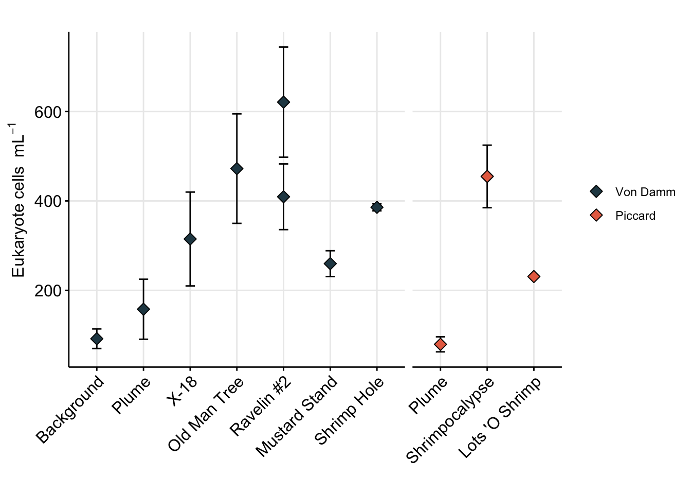
Print table of eukaryote cell count information to include in results section summary.
plot_euk_format %>%
type.convert(as.is = TRUE) %>%
filter(VARIABLE == "eukCONC") %>%
mutate(SAMPLE_TYPE = case_when(
NameOrder == "Background" ~ "Background",
NameOrder == "Plume" ~ "Plume",
TRUE ~ SiteOrder
)) %>%
group_by(SAMPLE_TYPE) %>%
summarise(MEAN_cellml = format(mean(avg_conc), scientific = T),
min_cellml = format(min(avg_conc), scientific = T),
max_cellml = format(max(avg_conc), scientific = T),
num = n())# A tibble: 4 × 5
SAMPLE_TYPE MEAN_cellml min_cellml max_cellml num
<chr> <chr> <chr> <chr> <int>
1 Background 9.183773e+01 9.183773e+01 9.183773e+01 1
2 Piccard 3.801791e+02 2.309063e+02 4.548154e+02 3
3 Plume 1.185379e+02 7.930115e+01 1.577747e+02 2
4 Von Damm 4.105001e+02 2.597696e+02 6.20998e+02 6plot_euk_format %>%
type.convert(as.is = TRUE) %>%
# filter(VARIABLE == "eukCONC") %>%
mutate(SAMPLE_TYPE = case_when(
NameOrder == "Background" ~ "Background",
NameOrder == "Plume" ~ "Plume",
TRUE ~ SiteOrder
)) %>%
group_by(SAMPLE_TYPE, VARIABLE) %>%
summarise(MEAN_cellml = format(mean(avg_conc), scientific = T),
min_cellml = format(min(avg_conc), scientific = T),
max_cellml = format(max(avg_conc), scientific = T),
num = n())`summarise()` has grouped output by 'SAMPLE_TYPE'. You can override using the
`.groups` argument.# A tibble: 12 × 6
# Groups: SAMPLE_TYPE [4]
SAMPLE_TYPE VARIABLE MEAN_cellml min_cellml max_cellml num
<chr> <chr> <chr> <chr> <chr> <int>
1 Background eukCONC 9.183773e+01 9.183773e+01 9.183773e+01 1
2 Background microCONC 0e+00 0e+00 0e+00 1
3 Background nanoCONC 9.183773e+01 9.183773e+01 9.183773e+01 1
4 Piccard eukCONC 3.801791e+02 2.309063e+02 4.548154e+02 3
5 Piccard microCONC 2.332387e+01 0e+00 3.49858e+01 3
6 Piccard nanoCONC 3.568552e+02 2.309063e+02 4.198296e+02 3
7 Plume eukCONC 1.185379e+02 7.930115e+01 1.577747e+02 2
8 Plume microCONC 1.610099e+01 9.329547e+00 2.287244e+01 2
9 Plume nanoCONC 1.024369e+02 6.99716e+01 1.349022e+02 2
10 Von Damm eukCONC 4.105001e+02 2.597696e+02 6.20998e+02 6
11 Von Damm microCONC 4.037945e+01 0e+00 1.049574e+02 6
12 Von Damm nanoCONC 3.701206e+02 2.597696e+02 5.860122e+02 6# unique(plot_euk_format$NameOrder)
plot_euk_format %>%
mutate(SAMPLE_TYPE_BIN = case_when(
NameOrder == "Background" ~ "Non-vent",
NameOrder == "Plume" ~ "Non-vent",
TRUE ~ "Vent"
)) %>%
group_by(SAMPLE_TYPE_BIN, VARIABLE) %>%
summarise(MEAN_cellml = format(mean(avg_conc), scientific = T),
min_cellml = format(min(avg_conc), scientific = T),
max_cellml = format(max(avg_conc), scientific = T),
num = n())`summarise()` has grouped output by 'SAMPLE_TYPE_BIN'. You can override using
the `.groups` argument.# A tibble: 6 × 6
# Groups: SAMPLE_TYPE_BIN [2]
SAMPLE_TYPE_BIN VARIABLE MEAN_cellml min_cellml max_cellml num
<chr> <chr> <chr> <chr> <chr> <int>
1 Non-vent eukCONC 1.096379e+02 7.930115e+01 1.577747e+02 3
2 Non-vent microCONC 1.0734e+01 0e+00 2.287244e+01 3
3 Non-vent nanoCONC 9.890386e+01 6.99716e+01 1.349022e+02 3
4 Vent eukCONC 4.003931e+02 2.309063e+02 6.20998e+02 9
5 Vent microCONC 3.469425e+01 0e+00 1.049574e+02 9
6 Vent nanoCONC 3.656988e+02 2.309063e+02 5.860122e+02 9# save(counts_cellsml_all, counts_cellsml_avg, counts_occur, file = "output-data/MCR-cellcount-dfs")DAPI slide counts from prokaryotes from same sites. Import and compare.
prok <- read.delim("input-data/prokINSITU-counts-compiled.txt")
insitu_proks <- prok %>%
filter(CELLML != "not countable") %>%
separate(SAMPLE, c("Site", "Name"), sep = "-", remove = FALSE) %>%
group_by(SAMPLE, Site, Name) %>%
summarise(MEAN = mean(as.numeric(CELLML)),
SD = sd(CELLML),
SEM = (sd(CELLML)/sqrt(length(CELLML))),
.groups = "rowwise") %>%
data.frameVisualize counts
Summary of prok counts
head(insitu_proks) SAMPLE Site Name MEAN SD SEM
1 Piccard-BSW Piccard BSW 11860.19 1632.7541 1154.5315
2 Piccard-HotChimlet1 Piccard HotChimlet1 63184.36 296.8644 209.9148
3 Piccard-LotsOShrimp Piccard LotsOShrimp 53878.14 27454.3826 13727.1913
4 Piccard-Plume Piccard Plume 51429.13 6531.0163 4618.1259
5 Piccard-Quakeplume Piccard Quakeplume 21201.40 12171.4395 8606.5074
6 Piccard-ShrimpGulley Piccard ShrimpGulley 139593.35 41264.1485 29178.1593# insitu_proks$Name
insitu_proks %>% filter(Name != "Quakeplume") %>%
mutate(type = case_when(
Name == "BSW" ~ "non-vent",
Name == "Plume" ~ "non-vent",
TRUE ~ "vent"
)) %>%
# group_by(type) %>%
group_by(type, Site) %>%
summarize(mean = mean(MEAN),
min = min(MEAN),
max = max(MEAN))`summarise()` has grouped output by 'type'. You can override using the
`.groups` argument.# A tibble: 4 × 5
# Groups: type [2]
type Site mean min max
<chr> <chr> <dbl> <dbl> <dbl>
1 non-vent Piccard 31645. 11860. 51429.
2 non-vent VD 27184. 16478. 37890.
3 vent Piccard 109713. 53878. 238586.
4 vent VD 40907. 8816. 111430.Factor site names, etc.
insitu_proks$Name_order <- factor(insitu_proks$Name, levels = c("BSW", "Plume", "Quakeplume", "Shrimpocalypse", "LotsOShrimp", "X18", "OMT", "Rav2", "MustardStand", "ShrimpHole", "HotChimlet1", "ShrimpGulley", "SouthofHotChimlet", "SouthofLungSnack", "ArrowLoop", "Bartizan", "Rav1"), labels = c("Background","Plume", "Quakeplume", "Shrimpocalypse", "Lots 'O Shrimp", "X-18", "Old Man Tree", "Ravelin #2", "Mustard Stand", "Shrimp Hole", "Hot Chimlet #1", "Shrimp Gulley", "South of Hot Chimlet", "South of LungSnack", "Arrow Loop", "Bartizan", "Ravelin #1"))
site_ids <- c("VD", "Piccard")
site_fullname <- c("Von Damm", "Piccard")
insitu_proks$Site_order <- factor(insitu_proks$Site, levels = site_ids, labels = site_fullname)
site_color <- c("#264653", "#E76F51")
names(site_color) <- site_fullnameprok_plot <- ggplot(insitu_proks, aes(x = Name_order, y = MEAN)) +
geom_errorbar(aes(ymax = (MEAN + SEM), ymin = (MEAN - SEM)), width = 0.2) +
geom_point(stat = "identity", shape = 23, aes(fill = Site_order), size = 3) +
facet_grid(.~ Site_order, space = "free", scales = "free") +
scale_fill_manual(values = site_color) +
labs(y = bquote("Prokaryote cells "~mL^-1), x = "", title = "") +
scale_y_log10() +
theme_minimal() +
theme(panel.grid.major = element_line(), panel.grid.minor = element_blank(),
panel.background = element_blank(),
axis.line = element_line(colour = "black"),
axis.text.x = element_text(color="black", size = 12,
angle = 45, hjust = 1, vjust = 1),
axis.text.y = element_text(color="black", size = 12),
axis.title =element_text(color="black", size = 12),
axis.ticks = element_line(),
strip.text =element_blank(), legend.title = element_blank())
prok_plot
Combined eukaryote and prokaryote cell counts
euk_prok_ab <- euk_plot + (prok_plot + theme(legend.position = "none")) + patchwork::plot_layout(ncol = 1) + patchwork::plot_annotation(tag_levels = "a")Compare in situ prokaryote cell counts from 2020 to previous years
prok_prev <- read.csv("input-data/cellcount_previousyr.csv")
prok_prev_formatted <- prok_prev %>%
mutate(VENTSITE = case_when(
grepl("Piccard", Site) ~ "Piccard",
grepl("Von Damm", Site) ~ "VD"
)) %>%
filter(!is.na(YEAR)) %>% #QC of
# filter(cells_ml != "NC") %>%
# filter(cells_ml != "") %>%
# filter(cells_ml != "no data") %>%
type.convert(as.is = TRUE, numerals = "no.loss") %>%
select(YEAR, VENTSITE, NAME = Name, REP=Replicate, CELLML = cells_ml, ORIGSAMPLE = Orig_vent_site_ID, ID_number, Origin)Re-import 2020 data to compare.
# Re-import 2020
prok <- read.delim("input-data/prokINSITU-counts-compiled.txt")
# View(prok)
proks_allyrs <- prok %>%
separate(SAMPLE, c("VENTSITE", "NAME"), sep = "-", remove = FALSE) %>%
mutate(YEAR = 2020) %>%
select(YEAR, VENTSITE, NAME, REP, CELLML, ORIGSAMPLE = BAC) %>%
bind_rows(prok_prev_formatted %>% select(-ID_number, -Origin)) %>%
type.convert(as.is = TRUE) %>%
# Remove not countable or not data samples:
filter(CELLML != "NC") %>%
filter(CELLML != "") %>%
filter(CELLML != "no data") %>%
filter(CELLML != "not countable") %>%
data.frame
# View(proks_allyrs)
# View(as.data.frame(unique(proks_allyrs$NAME)))
vent_order <- c("BSW","Plume","Quakeplume","NearsummitBeebee","MainOrifice","NearMainOrifice","Rav1","HotChimlet1","HotChimlet","SouthofHotChimlet","NearHotChimlet","HotCracks1","HotCracks2","ShrimpHole","ShrimpHole(X18)","X18","X19","SouthofLungSnack","TwinPeaks","OMT","WhiteCastle","GingerCastle","ArrowLoop","Bartizan","LotsOShrimp","MustardStand","ShrimpButtery","ShrimpCanyon","ShrimpGulley","Shrimpocalypse","ShrimpVegas")
vent_names <- c("Background","Plume","Quakeplume","Near summit Beebee Vents Mound","Main Orifice","Near Main Orifice","Ravelin #1","Hot Chimlet #1","Hot Chimlet","South of Hot Chimlet","Near Hot Chimlet","Hot Cracks #1","Hot Cracks #2","Shrimp Hole","Shrimp Hole (X-18)","X-18","X-19","South of Lung Snack","Twin Peaks","Old Man Tree","White Castle","Ginger Castle","Arrow Loop","Bartizan","Lots O Shrimp","Mustard Stand","Shrimp Buttery","Shrimp Canyon","Shrimp Gulley","Shrimpocalypse","Shrimp Vegas")
proks_allyrs$NAME_ORDER <- factor(proks_allyrs$NAME, levels = vent_order, labels = vent_names)
proks_allyrs$VENTSITE_ORDER <- factor(proks_allyrs$VENTSITE, levels = c("Piccard", "VD"), labels = c("Piccard", "Von Damm"))Plot by year.
# pdf("compare-across-yr-cellcount-04052021.pdf", h = 8, w = 7)
ggplot(proks_allyrs, aes(x = NAME_ORDER, y = as.numeric(CELLML), fill = factor(YEAR), shape = VENTSITE_ORDER)) +
geom_point(stat = "identity", aes(fill = factor(YEAR)), size = 3) +
scale_shape_manual(values = c(21,23)) +
coord_flip() +
facet_grid(VENTSITE_ORDER ~ ., space = "free", scales = "free") +
scale_y_log10() +
scale_fill_manual(values = c("#1c9099", "#ffeda0", "#fc4e2a")) +
theme_linedraw() +
theme(axis.text = element_text(color = "black", size = 10),
strip.background = element_blank(),
strip.text.y = element_text(color = "black", size = 11, hjust = 0, vjust = 1),
legend.title = element_blank(),
legend.position = "bottom",
panel.grid.minor = element_blank(),
panel.grid.major = element_line(color = "grey")) +
labs(y = bquote("Cells "~mL^-1), x = "") +
guides(fill=guide_legend(override.aes=list(shape=22)))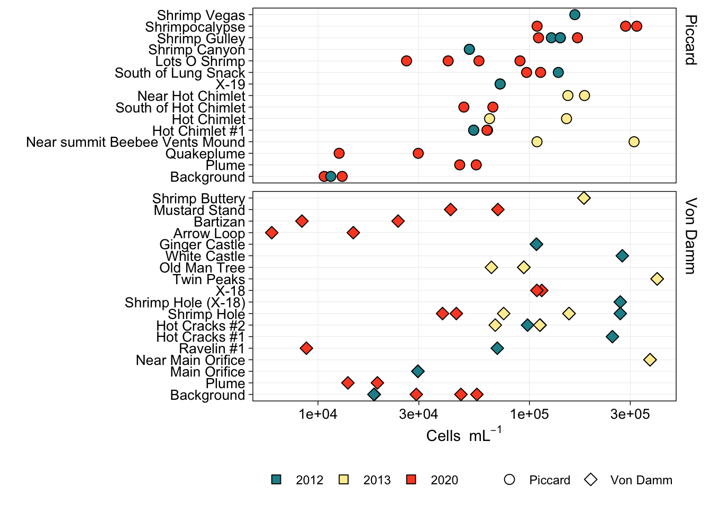
# dev.off()Calculate FLP per eukaryotic cell over time. Goal is to make these calculations and then determine best fit line. Slope of best fit line is the grazing rate. Need to take into account euk cells with FLPs and then the euk cells withOUT FLPs, these will be zeroes to take into account for FLPs/euk averages.
load("output-data/MCR-cellcount-dfs", verbose = TRUE)Loading objects:
counts_cellsml_all
counts_cellsml_avg
counts_occurIsolate euk cell counts with FLPs (comma separated for counts). These need to be separated into rows, use counts_occur data frame from above.
# Select nano and micro counts with FLPs
counts_sepflp <- counts_occur %>%
filter(!NOTES == "Discard") %>%
filter(!(NOTES == "DTAF stain prevented counts of FLP, Euks only")) %>%
select(DATE, SAMPLE, EXPID, VOL, MAG, FOV, nanoFLP, microFLP) %>%
# Inputs that are comma separated will be split into a new row
separate_rows(microFLP, sep = ",", convert = TRUE) %>%
separate_rows(nanoFLP, sep = ",", convert = TRUE) %>%
# Replace NAs with zeroes
replace_na(list(microFLP = 0, nanoFLP = 0)) %>%
data.frameoptional gut check of data table modification
## Check, see FOV 23, separated into rows.
# View(counts_sepflp %>%
# filter(SAMPLE == "VD-Rav2" & EXPID == "T10-Rep1"))
# View(counts_occur %>%
# filter(SAMPLE == "VD-Rav2" & EXPID == "T10-Rep1"))Isolate counts that are >0, so only eukaryote cells that were observed to have FLPs are included. Then calculate FLP per euk cell by dividing by 1 (each row is a euk cell, based on data transformation above).
counts_flp <- counts_sepflp %>%
select(SAMPLE, EXPID, nano_size = nanoFLP, micro_size = microFLP) %>%
pivot_longer(cols = ends_with("_size"), names_to = "SizeFrac", values_to = "num_of_FLP") %>%
filter(num_of_FLP > 0) %>%
separate(SAMPLE, c("Site", "Name"), sep = "-", remove = FALSE) %>%
separate(EXPID, c("TimePoint", "Replicate"), sep = "-", remove = FALSE) %>%
mutate(EXP_TYPE = case_when(
grepl("IGT", Replicate) ~ "IGT",
grepl("Rep", Replicate) ~ "Bag"
)) %>%
mutate(IGT_REP = case_when(
EXP_TYPE == "IGT" ~ Replicate,
EXP_TYPE == "Bag" ~ "Bag")) %>%
group_by(SAMPLE, EXPID, EXP_TYPE, IGT_REP, SizeFrac) %>%
summarise(total_FLP = sum(num_of_FLP),
total_euks_wflp = n(),
.groups = "rowwise") %>%
data.frame
head(counts_flp) SAMPLE EXPID EXP_TYPE IGT_REP SizeFrac total_FLP
1 Piccard-LotsOShrimp T0-Rep3 Bag Bag nano_size 3
2 Piccard-LotsOShrimp T15-Rep3 Bag Bag micro_size 1
3 Piccard-LotsOShrimp T15-Rep3 Bag Bag nano_size 3
4 Piccard-LotsOShrimp T20-Rep3 Bag Bag nano_size 2
5 Piccard-Plume T0-Rep1 Bag Bag micro_size 2
6 Piccard-Plume T0-Rep1 Bag Bag nano_size 4
total_euks_wflp
1 2
2 1
3 2
4 1
5 1
6 3OUTPUT COLUMNS: (1) total_FLP = sum of FLPs found inside a euk cell (2) total_euks_wflp = number of euks counted with ingested FLP
Repeat above operation for euk cells without any FLP. Here, subset total number of observations where there was a euk cell without FLP. These need to be counted as euk cell without an FLP.
Below code repeats process and compiles with other FLP/euk cell data.
Repeat above process for euk cells without FLPs (0 FLP per euk cell needs to be included in overall average).
counts_flp_compiled <- counts_occur %>%
filter(!(NOTES == "Discard")) %>% #Discard bad counts
filter(!(NOTES == "DTAF stain prevented counts of FLP, Euks only")) %>%
type.convert(as.is = TRUE) %>% #modify str() for columns
select(SAMPLE, EXPID, nano_size = nanoNoFLP, micro_size = microNoFLP) %>% #select non flp
pivot_longer(cols = ends_with("_size"), names_to = "SizeFrac", values_to = "num_of_euks") %>%
separate(SAMPLE, c("Site", "Name"), sep = "-", remove = FALSE) %>%
separate(EXPID, c("TimePoint", "Replicate"), sep = "-", remove = FALSE) %>%
mutate(EXP_TYPE = case_when(
grepl("IGT", Replicate) ~ "IGT",
grepl("Rep", Replicate) ~ "Bag"
)) %>%
mutate(IGT_REP = case_when(
EXP_TYPE == "IGT" ~ Replicate,
EXP_TYPE == "Bag" ~ "Bag")) %>%
# filter(num_of_euks > 0) %>% # Remove observed zero counts
group_by(SAMPLE, EXPID, EXP_TYPE, IGT_REP, SizeFrac) %>%
summarise(total_euks_noFLP = sum(num_of_euks),
.groups = "rowwise") %>%
# Join with FLP count information
## SAMPLE, EXPID, EXPTYPE, IGTREP, and SizeFrac variables should match
left_join(counts_flp) %>% # Join with the counts of FLP per euk cell
replace_na(list(total_FLP = 0, total_euks_wflp = 0)) %>% #Replace NAs with zero
data.frameJoining with `by = join_by(SAMPLE, EXPID, EXP_TYPE, IGT_REP, SizeFrac)`Extract total eukaryote cell value by adding across nano and micro. Then combine the nano and micro cell counts.
counts_flp_compiled_all <- counts_flp_compiled %>%
# Exclude size fraction:
group_by(SAMPLE, EXPID, EXP_TYPE, IGT_REP) %>%
summarise(total_euks_noFLP = sum(total_euks_noFLP),
total_FLP = sum(total_FLP),
total_euks_wflp = sum(total_euks_wflp),
.groups = "rowwise") %>%
add_column(SizeFrac = "total_euks") %>% #Add SizeFrac column
bind_rows(counts_flp_compiled) %>% # Combine back with flp compiled list
data.frameFirst need to import and compile with metadata to get exact timing of experiments.
metadata <- read.delim("input-data/flp-exp-metadata-compiled.txt")
exp_metadata <- read.csv("input-data/flp_exp_metadata.csv")Add metadata
counts_flp_calcs_all <- counts_flp_compiled_all %>%
# Add in metadata
# IGTXb are replicate counts, include them as replicates!
separate(EXPID, c("TimePoint", "REP"), sep = "-", remove = FALSE) %>% mutate(
REP = ifelse(grepl("IGT5b", REP), "IGT5", REP),
REP = ifelse(grepl("IGT4b", REP), "IGT4", REP),
REP = ifelse(grepl("Bag", EXP_TYPE), "Bag", REP)) %>%
left_join(metadata, by = c("SAMPLE" = "SAMPLE", "TimePoint" = "TimePoint", "REP" = "REP")) %>%
left_join(exp_metadata, by = c("SAMPLE" = "SAMPLE", "REP" = "REP")) %>%
separate(SAMPLE, c("Site", "Name"), sep = "-", remove = FALSE) %>%
separate(EXPID, c("TimePoint", "Replicate_ID"), sep = "-", remove = FALSE) %>%
## Treat repeated IGT counts completely separate
# group_by(SAMPLE, Site, Name, EXPID, TimePoint, Replicate_ID, EXP_TYPE, IGT_REP, SizeFrac) %>%
## Treat repeated IGT counts as replicates (e.g., IGT4b and IGT4 == IGT4)
group_by(SAMPLE, Site, Name, EXPID, TimePoint, Replicate_ID, EXP_TYPE, REP, SizeFrac) %>%
# FLPperEuk is the total FLP divided by the total number of euk cells counted
mutate(FLPperEuk = total_FLP/(sum(total_euks_noFLP, total_euks_wflp))) %>%
unite("Experiment", Name, REP, sep = "-", remove = FALSE) %>%
data.frameCOLS: Timepoint, Minutes = time point label, actual incubated minutes
COLS: Replicate_ID, REP, and IGT_REP = full replicate identified for IGTs and Bags, designation of biological replicates, and designation of technical replicates for IGT experiments
Use lm() function in R to calculate linear regression for each experiment. Slope equates to grazing rate. Function inputs the FLP per euk cell data, performs regression and then adds a column for slope and r-squared values.
Function to estimate slope. Uses broom and tidymodels, then extracts slope.
calculate_lm <- function(df){
regression_1 <- df %>%
type.convert(as.is = TRUE) %>%
## Keep technical replicates separate for IGTs
# group_by(SAMPLE, Site, Experiment, Name, IGT_REP, SizeFrac) %>%
# nest(-SAMPLE, -Site, -Experiment, -Name, -IGT_REP, -SizeFrac) %>%
## Combine technical replicates for IGTs
group_by(SAMPLE, Site, Experiment, Name, REP, SizeFrac) %>%
nest(-SAMPLE, -Site, -Experiment, -Name, -REP, -SizeFrac) %>%
mutate(lm_fit = map(data, ~lm(FLPperEuk ~ Minutes, data = .)),
tidied = map(lm_fit, tidy)) %>%
unnest(tidied) %>%
# select(SAMPLE, Site, Experiment, Name, IGT_REP, SizeFrac, term, estimate) %>%
select(SAMPLE, Site, Experiment, Name, REP, SizeFrac, term, estimate) %>%
pivot_wider(names_from = term, values_from = estimate) %>%
data.frame
# Reset column names
colnames(regression_1) <- c("SAMPLE", "Site",
"Experiment", "Name", "REP",
"SizeFrac", "INTERCEPT", "SLOPE")
# Repeat broom model to get R2
out_regression <- df %>%
group_by(SAMPLE, Site, Experiment, Name, REP, SizeFrac) %>%
nest(-SAMPLE, -Site, -Experiment, -Name, -REP, -SizeFrac) %>%
mutate(lm_fit = map(data, ~lm(FLPperEuk ~ Minutes, data = .)),
glanced = map(lm_fit, glance)) %>%
unnest(glanced) %>%
select(SAMPLE, Site, Experiment, Name, REP, SizeFrac, r.squared) %>%
right_join(regression_1) %>%
right_join(df) %>%
data.frame
out_regression$SITE <- factor(out_regression$Site, levels = c("VD", "Piccard"))
out_regression$TYPE <- factor(out_regression$EXP_TYPE, levels = c("Bag", "IGT"))
return(out_regression)
}Note that an error may occur when running the below function. This is due to the fact that some experiments did not have replicates.
Apply to all data to obtain slope.
calcs_wslope_regression <- calculate_lm(counts_flp_calcs_all)Warning: Supplying `...` without names was deprecated in tidyr 1.0.0.
ℹ Please specify a name for each selection.
ℹ Did you want `data = c(-SAMPLE, -Site, -Experiment, -Name, -REP, -SizeFrac)`?Warning: There was 1 warning in `mutate()`.
ℹ In argument: `tidied = map(lm_fit, tidy)`.
ℹ In group 28: `SAMPLE = "VD-Rav2"`, `Site = "VD"`, `Experiment = "Rav2-IGT4"`,
`Name = "Rav2"`, `REP = "IGT4"`, `SizeFrac = "micro_size"`.
Caused by warning in `summary.lm()`:
! essentially perfect fit: summary may be unreliableWarning: Supplying `...` without names was deprecated in tidyr 1.0.0.
ℹ Please specify a name for each selection.
ℹ Did you want `data = c(-SAMPLE, -Site, -Experiment, -Name, -REP, -SizeFrac)`?Warning: There were 2 warnings in `mutate()`.
The first warning was:
ℹ In argument: `glanced = map(lm_fit, glance)`.
ℹ In group 28: `SAMPLE = "VD-Rav2"`, `Site = "VD"`, `Experiment = "Rav2-IGT4"`,
`Name = "Rav2"`, `REP = "IGT4"`, `SizeFrac = "micro_size"`.
Caused by warning in `summary.lm()`:
! essentially perfect fit: summary may be unreliable
ℹ Run `dplyr::last_dplyr_warnings()` to see the 1 remaining warning.Joining with `by = join_by(SAMPLE, Site, Experiment, Name, REP, SizeFrac)`
Joining with `by = join_by(SAMPLE, Site, Experiment, Name, REP, SizeFrac)`Warning in right_join(., df): Each row in `x` is expected to match at most 1 row in `y`.
ℹ Row 1 of `x` matches multiple rows.
ℹ If multiple matches are expected, set `multiple = "all"` to silence this
warning.gut check linear regression work. Use below commands out to recalculate one linear regression. Above function uses the nest() capability of tidyverse. Below, one experiment is subset to check the value.
# Extract only plume-bag experiment from VD
# tmp_plume <- filter(counts_flp_calcs_all, Experiment == "Plume-Bag") %>% filter(Site == "VD") %>% filter(SizeFrac == "total_euks")
# tmp_plume # View
# Perform linear regression
# lm_out <- lm(FLPperEuk ~ Minutes, data = tmp_plume)
# # Check output
# summary(lm_out)
# lm_out$coefficients #Intercept=intercept #Minutes = SLOPE
# # Compare with nested function output
# filter(calcs_wslope_regression, Experiment == "Plume-Bag") %>% filter(Site == "VD") %>% filter(SizeFrac == "total_euks") %>% headPlot all bag experiments with estimated slope.
unique(calcs_wslope_regression$SITE)[1] Piccard VD
Levels: VD Piccard# | fig-width: 7
# | fig-height: 8
calcs_wslope_regression %>%
filter(SizeFrac == "total_euks") %>%
mutate(VENT_IDS = factor(Name, levels = vent_ids, labels = vent_fullname)) %>%
mutate(SITE_ORDER = factor(SITE, levels = site_ids, labels = site_fullname)) %>%
# Filter out IGT samples for now
# filter(TYPE != "IGT") %>%
unite(EXPERIMENT, SITE_ORDER, Experiment, sep = " ", remove = FALSE) %>%
ggplot(aes(x = Minutes, y = FLPperEuk, fill = SITE_ORDER, shape = TYPE)) +
geom_abline(aes(slope = SLOPE, intercept = INTERCEPT), color = "black", linetype = "dashed", size = 1) +
geom_point(stat = "identity", color = "black",
size = 2, aes(shape = TYPE, fill = SITE_ORDER)) +
scale_shape_manual(values = c(21, 24)) +
scale_fill_manual(values = site_color) +
labs(x = "Minutes", y = bquote("FLP"~eukaryote^-1), title = "Grazing experiment regression") +
facet_wrap(. ~ EXPERIMENT) +
# Report r.squared
geom_text(aes(x = 42, y = max(FLPperEuk), label = paste(round(SLOPE, 4))),
vjust = 1, hjust = 0, size = 3) +
theme_bw() +
theme(strip.background = element_blank(),
strip.text = element_text(color = "black", size = 7),
legend.title = element_blank(),
legend.position = "right")Warning: Using `size` aesthetic for lines was deprecated in ggplot2 3.4.0.
ℹ Please use `linewidth` instead.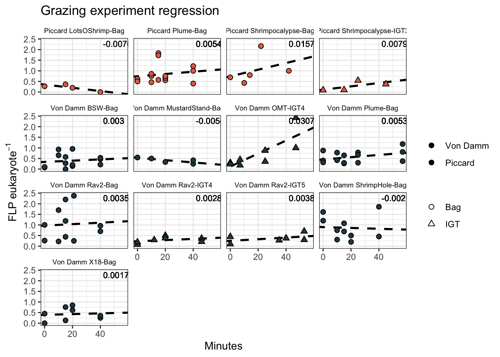
Data points represent the FLP per euk cells (based on total eukaryote cells counts). Y-axis represents the duration of incubation (in minutes). The dashed purple line reprents the slope and intercept of the experiment.
IGT experiment results appear to have bottle effect, especially in the final time point. Additionally, due to the lack of biological replicates in the IGT experiments, technical replicates are treated as biological replicates in the regression below.
IGT_lm_woTf <- counts_flp_calcs_all %>%
# Select only IGT experiments with total eukaryotes, remove Tf (T3)
filter(SizeFrac == "total_euks") %>%
filter(EXP_TYPE == "IGT" & !(TimePoint == "T3")) %>%
add_column(IGT_cor = "rm Tf") %>%
data.frame
# Recalculate lm(), keep replicates separate
igt_regression_noTf <- calculate_lm(IGT_lm_woTf) # RecalculateWarning: Supplying `...` without names was deprecated in tidyr 1.0.0.
ℹ Please specify a name for each selection.
ℹ Did you want `data = c(-SAMPLE, -Site, -Experiment, -Name, -REP, -SizeFrac)`?Warning: Supplying `...` without names was deprecated in tidyr 1.0.0.
ℹ Please specify a name for each selection.
ℹ Did you want `data = c(-SAMPLE, -Site, -Experiment, -Name, -REP, -SizeFrac)`?Joining with `by = join_by(SAMPLE, Site, Experiment, Name, REP, SizeFrac)`
Joining with `by = join_by(SAMPLE, Site, Experiment, Name, REP, SizeFrac)`Warning in right_join(., df): Each row in `x` is expected to match at most 1 row in `y`.
ℹ Row 1 of `x` matches multiple rows.
ℹ If multiple matches are expected, set `multiple = "all"` to silence this
warning.Plot IGT grazing experiments with newly calculated grazing effect.
igt_regression_noTf %>%
# filter(SizeFrac == "total_euks") %>%
# filter(TYPE != "IGT") %>%
mutate(SITE_ORDER = factor(SITE, levels = site_ids, labels = site_fullname)) %>%
unite(EXPERIMENT, SITE, Experiment, sep = " ", remove = FALSE) %>%
ggplot(aes(x = Minutes, y = FLPperEuk, fill = SITE_ORDER, shape = TYPE, group = Experiment)) +
geom_abline(aes(slope = SLOPE, intercept = INTERCEPT), color = "black", linetype = "dashed", size = 1) +
geom_point(stat = "identity", color = "black",
size = 2, aes(shape = TYPE, fill = SITE_ORDER)) +
scale_shape_manual(values = c(24)) +
scale_fill_manual(values = site_color) +
labs(x = "Minutes", y = bquote("FLP"~eukaryote^-1), title = "Grazing experiment regression") +
facet_wrap(. ~ EXPERIMENT) +
# Report r.squared
geom_text(aes(x = 5, y = max(FLPperEuk), label = paste(round(SLOPE, 4))),
vjust = 1, hjust = 0, size = 3) +
theme_bw() +
theme(strip.background = element_blank(),
strip.text = element_text(color = "black", size = 7),
legend.title = element_blank(),
legend.position = "right")
results are more consistent across experiments.
calcs_wslope_regression_update <- calcs_wslope_regression %>%
filter(TYPE != "IGT") %>%
bind_rows(igt_regression_noTf %>% select(-IGT_cor)) %>%
data.frame
# Factor
vent_ids <- c("BSW","Plume", "Shrimpocalypse", "LotsOShrimp", "X18", "OMT", "Rav2", "MustardStand", "ShrimpHole")
vent_fullname <- c("Background","Plume", "Shrimpocalypse", "Lots 'O Shrimp", "X-18", "Old Man Tree", "Ravelin #2", "Mustard Stand", "Shrimp Hole")
site_ids <- c("VD", "Piccard")
site_fullname <- c("Von Damm", "Piccard")
# Factor for shipboard
calcs_wslope_regression_update$SiteOrder <- factor(calcs_wslope_regression_update$Site, levels = site_ids, labels = site_fullname)
calcs_wslope_regression_update$NameOrder <- factor(calcs_wslope_regression_update$Name, levels = vent_ids, labels = vent_fullname)
# View(calcs_wslope_regression_update)
calcs_wslope_regression_update %>%
select(SiteOrigin, SiteOrder, NameOrder, Experiment, SizeFrac, r.squared, INTERCEPT, SLOPE) %>% distinct() SiteOrigin SiteOrder NameOrder Experiment SizeFrac
1 Vent Piccard Lots 'O Shrimp LotsOShrimp-Bag total_euks
2 Plume Piccard Plume Plume-Bag total_euks
3 Vent Piccard Shrimpocalypse Shrimpocalypse-Bag total_euks
4 Background Von Damm Background BSW-Bag total_euks
5 Vent Von Damm Mustard Stand MustardStand-Bag total_euks
6 Plume Von Damm Plume Plume-Bag total_euks
7 Vent Von Damm Ravelin #2 Rav2-Bag total_euks
8 Vent Von Damm Shrimp Hole ShrimpHole-Bag total_euks
9 Vent Von Damm X-18 X18-Bag total_euks
10 Vent Piccard Lots 'O Shrimp LotsOShrimp-Bag micro_size
11 Vent Piccard Lots 'O Shrimp LotsOShrimp-Bag nano_size
12 Plume Piccard Plume Plume-Bag micro_size
13 Plume Piccard Plume Plume-Bag nano_size
14 Vent Piccard Shrimpocalypse Shrimpocalypse-Bag micro_size
15 Vent Piccard Shrimpocalypse Shrimpocalypse-Bag nano_size
16 Background Von Damm Background BSW-Bag micro_size
17 Background Von Damm Background BSW-Bag nano_size
18 Vent Von Damm Mustard Stand MustardStand-Bag micro_size
19 Vent Von Damm Mustard Stand MustardStand-Bag nano_size
20 Plume Von Damm Plume Plume-Bag micro_size
21 Plume Von Damm Plume Plume-Bag nano_size
22 Vent Von Damm Ravelin #2 Rav2-Bag micro_size
23 Vent Von Damm Ravelin #2 Rav2-Bag nano_size
24 Vent Von Damm Shrimp Hole ShrimpHole-Bag micro_size
25 Vent Von Damm Shrimp Hole ShrimpHole-Bag nano_size
26 Vent Von Damm X-18 X18-Bag micro_size
27 Vent Von Damm X-18 X18-Bag nano_size
28 Vent Piccard Shrimpocalypse Shrimpocalypse-IGT3 total_euks
29 Vent Von Damm Old Man Tree OMT-IGT4 total_euks
30 Vent Von Damm Ravelin #2 Rav2-IGT4 total_euks
31 Vent Von Damm Ravelin #2 Rav2-IGT5 total_euks
r.squared INTERCEPT SLOPE
1 0.660252577 0.3517002 -0.007605829
2 0.028109981 0.7435088 0.005362856
3 0.134500775 0.7414202 0.015686872
4 0.016339803 0.3381071 0.002958889
5 0.679501856 0.5316532 -0.005445545
6 0.152459998 0.4565982 0.005274231
7 0.003588551 0.9680181 0.003470217
8 0.002436342 0.8984156 -0.001967253
9 0.007917377 0.3937265 0.001744429
10 0.000000000 0.5000000 NA
11 0.723950257 0.3415221 -0.007467037
12 0.031027392 1.8447712 -0.021241830
13 0.134388231 0.5657210 0.009146535
14 0.016488447 1.8971061 -0.016881029
15 0.219942841 0.5793676 0.022967165
16 0.289513467 1.4518382 -0.027181373
17 0.015152403 0.2934706 0.002856863
18 0.000000000 0.0000000 NA
19 0.679997859 0.5291779 -0.004985856
20 0.098467998 0.7841090 0.019766939
21 0.019373495 0.4513702 0.002263909
22 0.696359782 -1.7147488 0.394651540
23 0.001444937 0.9392498 0.002011385
24 0.233424455 2.2875458 -0.092124542
25 0.002819273 0.9370957 0.002424242
26 0.302757291 0.6709130 0.036093418
27 0.018916716 0.3041782 0.002196051
28 0.661389551 0.0215311 0.016794258
29 0.445940823 0.2441665 0.014510943
30 0.872857411 0.1272183 0.015395240
31 0.054430146 0.2692487 0.001603035write.csv(calcs_wslope_regression_update, file = "output-data/estimated-slopes-grazingexp.csv")All incubations had control experiments run alongside them. This was to ensure added FLP did not decrease or change in concentration over time.
bac_ctrl <- read.delim("input-data/bac-counts-compiled.txt")
# dim(bac_ctrl)
dtaf <- bac_ctrl %>%
separate(SampleID, c("exp", "Replicate", "TimePoint"), sep = "-", remove = FALSE) %>%
separate(Site, c("Site", "Name"), sep = "-", remove = FALSE) %>%
filter(Stain == "DTAF") %>%
data.frameWarning: Expected 2 pieces. Additional pieces discarded in 17 rows [33, 34, 35, 36, 37,
38, 39, 40, 41, 42, 43, 44, 45, 46, 47, 48, 49].# View(bac_ctrl)
# head(dtaf)
dtaf_avg <- dtaf %>%
group_by(TimePoint, Stain, Site, Name) %>%
summarise(Avg_cellsperml = mean(Cells.ml)) %>%
data.frame`summarise()` has grouped output by 'TimePoint', 'Stain', 'Site'. You can
override using the `.groups` argument.dtaf_avg %>%
filter(Site != "IGT") %>%
ggplot(aes(x = TimePoint, y = Avg_cellsperml, fill = Name, shape = Site)) +
geom_rect(data = filter(dtaf_avg, TimePoint == "T0", Site != "IGT"), aes(
ymin = (Avg_cellsperml-(0.1*Avg_cellsperml)),
ymax = (Avg_cellsperml+(0.1*Avg_cellsperml))), color = NA, alpha = 0.4, xmin = 0, xmax = 6, fill = "black") +
geom_line(aes(group = Name)) +
geom_point(stat = "identity", aes(shape = Site, fill = Name), size = 2) +
# scale_fill_manual(values = c("black","#9970ab", "#5aae61")) +
facet_wrap(Name ~ Site) +
scale_y_log10() +
theme_bw() + theme(strip.background = element_blank(),
legend.title = element_blank(),
axis.text = element_text(size = 10, color = "black"),
title = element_text(size = 10, face = "bold"),
axis.title = element_text(size = 9)) +
labs(title = "FLP counts for controls", y = bquote("Log FLP "~mL^-1), x = "Time point")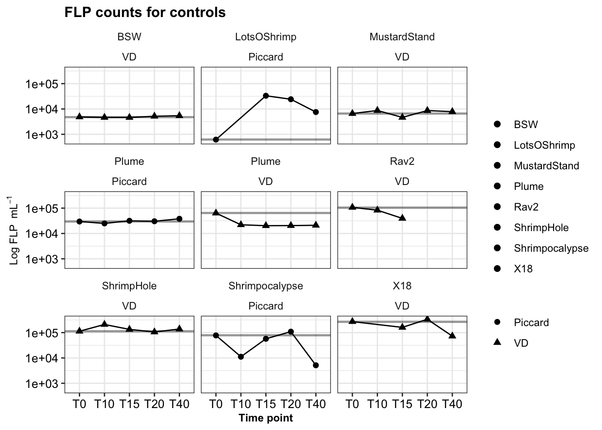
Repeat for IGT experiments.
dtaf_avg %>%
filter(Site == "IGT") %>%
ggplot(aes(x = TimePoint, y = Avg_cellsperml, fill = Name, shape = Site)) +
geom_rect(data = filter(dtaf_avg, TimePoint == "T0", Site == "IGT"), aes(
ymin = (Avg_cellsperml-(0.1*Avg_cellsperml)),
ymax = (Avg_cellsperml+(0.1*Avg_cellsperml))), color = NA, alpha = 0.4, xmin = 0, xmax = 6, fill = "black") +
geom_line(aes(group = Name)) +
geom_point(stat = "identity", aes(shape = Site, fill = Name), size = 2) +
# scale_fill_manual(values = c("black","#9970ab", "#5aae61")) +
facet_wrap(Name ~ Site) +
scale_y_log10() +
theme_bw() + theme(strip.background = element_blank(),
legend.title = element_blank(),
axis.text = element_text(size = 10, color = "black"),
title = element_text(size = 10, face = "bold"),
axis.title = element_text(size = 9)) +
labs(title = "FLP counts for controls", y = bquote("Log FLP "~mL^-1), x = "Time point")
# head(calcs_wslope_regression_update)
# View(calcs_wslope_regression_update)
# Generate final table
bsw <- c("Plume", "Background")
table_grazerate <- calcs_wslope_regression_update %>%
filter(SizeFrac == "total_euks") %>%
select(SAMPLE, FLUID_ORIGIN, CRUISE_SAMPLE, SiteOrder, NameOrder, SLOPE, EXP_TYPE, EXP_REPS, EXP_VOL, CTRL_REPS, CTRL_VOL, Site=SiteOrder, Name=NameOrder, RATE = SLOPE, Minutes) %>%
distinct() %>%
group_by(SAMPLE, FLUID_ORIGIN, CRUISE_SAMPLE, EXP_TYPE, EXP_REPS, EXP_VOL, CTRL_REPS, CTRL_VOL, Site, Name, RATE) %>%
summarise(TimePoints = str_c(Minutes, collapse = ", ")) %>%
ungroup() %>%
mutate(GRAZE_RATE = case_when(
RATE < 0 ~ 0,
TRUE ~ RATE
),
type = case_when(
Name == "Plume" ~ "Plume",
Name == "Background" ~ "Background",
EXP_TYPE == "IGT" ~ "Vent-IGT",
EXP_TYPE == "Bag" ~ "Vent-Bag"
)) %>%
data.frame`summarise()` has grouped output by 'SAMPLE', 'FLUID_ORIGIN', 'CRUISE_SAMPLE',
'EXP_TYPE', 'EXP_REPS', 'EXP_VOL', 'CTRL_REPS', 'CTRL_VOL', 'Site', 'Name'. You
can override using the `.groups` argument.table_grazerate # view complete table of grazing rate results SAMPLE FLUID_ORIGIN CRUISE_SAMPLE EXP_TYPE EXP_REPS EXP_VOL
1 Piccard-LotsOShrimp J2-1241 LV24 Bag 3 1.50
2 Piccard-Plume CTD004 Niskin 10 Bag 3 2.00
3 Piccard-Shrimpocalypse J2-1240 IGT3 IGT 1 0.15
4 Piccard-Shrimpocalypse J2-1240 LV13 Bag 3 1.50
5 VD-BSW CTD002 Niskins 8-10 Bag 3 2.00
6 VD-MustardStand J2-1243 LV17 Bag 2 1.50
7 VD-OMT J2-1238 IGT4 IGT 1 0.15
8 VD-Plume CTD001 Niskin 2 Bag 3 2.00
9 VD-Rav2 J2-1238 LV13a Bag 3 1.50
10 VD-Rav2 J2-1244 IGT4 IGT 1 0.15
11 VD-Rav2 J2-1244 IGT5 IGT 1 0.15
12 VD-ShrimpHole J2-1244 LV13 Bag 2 1.50
13 VD-X18 J2-1235 LV23 & Bio5 Bag 2 1.50
CTRL_REPS CTRL_VOL Site Name RATE TimePoints
1 2 0.2 Piccard Lots 'O Shrimp -0.007605829 0, 15, 20, 40
2 2 0.5 Piccard Plume 0.005362856 0, 10, 15, 20, 40
3 NA NA Piccard Shrimpocalypse 0.016794258 0, 15, 25
4 2 0.2 Piccard Shrimpocalypse 0.015686872 0, 10, 14, 22, 42
5 2 0.5 Von Damm Background 0.002958889 0, 10, 15, 20, 40
6 2 0.2 Von Damm Mustard Stand -0.005445545 0, 10, 20, 40
7 NA NA Von Damm Old Man Tree 0.014510943 0, 7, 25
8 2 1.0 Von Damm Plume 0.005274231 0, 10, 15, 25, 57
9 2 0.5 Von Damm Ravelin #2 0.003470217 0, 10, 15, 21, 40
10 NA NA Von Damm Ravelin #2 0.015395240 0, 12, 20
11 NA NA Von Damm Ravelin #2 0.001603035 0, 35, 40
12 2 0.2 Von Damm Shrimp Hole -0.001967253 0, 10, 15, 20, 40
13 2 0.5 Von Damm X-18 0.001744429 0, 15, 20, 40
GRAZE_RATE type
1 0.000000000 Vent-Bag
2 0.005362856 Plume
3 0.016794258 Vent-IGT
4 0.015686872 Vent-Bag
5 0.002958889 Background
6 0.000000000 Vent-Bag
7 0.014510943 Vent-IGT
8 0.005274231 Plume
9 0.003470217 Vent-Bag
10 0.015395240 Vent-IGT
11 0.001603035 Vent-IGT
12 0.000000000 Vent-Bag
13 0.001744429 Vent-Bagtable_grazerate %>%
group_by(EXP_TYPE, Site) %>%
summarise(mean_rate = mean(GRAZE_RATE),
min_rate = min(GRAZE_RATE),
max = max(GRAZE_RATE))`summarise()` has grouped output by 'EXP_TYPE'. You can override using the
`.groups` argument.# A tibble: 4 × 5
# Groups: EXP_TYPE [2]
EXP_TYPE Site mean_rate min_rate max
<chr> <fct> <dbl> <dbl> <dbl>
1 Bag Von Damm 0.00224 0 0.00527
2 Bag Piccard 0.00702 0 0.0157
3 IGT Von Damm 0.0105 0.00160 0.0154
4 IGT Piccard 0.0168 0.0168 0.0168 table_grazerate %>%
mutate(TYPE = case_when(
Name == "Plume" ~ "non-vent",
Name == "Background" ~ "non-vent",
TRUE ~ "vent"
)) %>%
# group_by(Site, TYPE) %>%
# group_by(TYPE) %>%
group_by(TYPE, EXP_TYPE) %>%
summarise(mean_rate = mean(GRAZE_RATE),
min_rate = min(GRAZE_RATE),
max = max(GRAZE_RATE))`summarise()` has grouped output by 'TYPE'. You can override using the
`.groups` argument.# A tibble: 3 × 5
# Groups: TYPE [2]
TYPE EXP_TYPE mean_rate min_rate max
<chr> <chr> <dbl> <dbl> <dbl>
1 non-vent Bag 0.00453 0.00296 0.00536
2 vent Bag 0.00348 0 0.0157
3 vent IGT 0.0121 0.00160 0.0168 Amend table with estimated FLP concentration
# head(table_grazerate)
dtaf_igt <- 5352.8278 # Manually insert FLP concentration for IGT experiments; this value is estimated from how IGT FLP spike-ins were calculated
#
table_grazerate_wflp <- bac_ctrl %>%
filter(FLP_t0 == "use") %>%
add_column(EXP_TYPE = "Bag") %>%
group_by(Site, EXP_TYPE) %>%
summarise(FLP_conc = mean(Cells.ml)) %>%
right_join(table_grazerate, by = c("Site" = "SAMPLE", "EXP_TYPE" = "EXP_TYPE")) %>%
mutate(FLP_conc = ifelse(EXP_TYPE == "IGT", dtaf_igt, FLP_conc)) %>%
select(everything(), FIELD = `Site.y`) %>%
data.frame`summarise()` has grouped output by 'Site'. You can override using the
`.groups` argument.Introduce factors in table for visualizations
type_order <- c("Vent-Bag", "Vent-IGT", "Plume", "Background")
table_grazerate_wflp$TYPE <- factor(table_grazerate_wflp$type, levels = type_order)
vent_ids <- c("BSW","Plume", "Shrimpocalypse", "LotsOShrimp", "X18", "OMT", "Rav2", "MustardStand", "ShrimpHole")
vent_fullname <- c("Background","Plume", "Shrimpocalypse", "Lots 'O Shrimp", "X-18", "Old Man Tree", "Ravelin #2", "Mustard Stand", "Shrimp Hole")
site_ids <- c("VD", "Piccard")
site_fullname <- c("Von Damm", "Piccard")
site_color <- c("#264653", "#E76F51")
names(site_color) <- site_fullname
table_grazerate_wflp$FIELDORDER <- factor(table_grazerate_wflp$FIELD, levels = site_fullname)
table_grazerate_wflp$VENTORDER <- factor(table_grazerate_wflp$Name, levels = vent_fullname)
head(table_grazerate_wflp) Site EXP_TYPE FLP_conc FLUID_ORIGIN CRUISE_SAMPLE
1 Piccard-LotsOShrimp Bag 617.1496 J2-1241 LV24
2 Piccard-Plume Bag 29650.4676 CTD004 Niskin 10
3 Piccard-Shrimpocalypse Bag 17003.1000 J2-1240 LV13
4 VD-BSW Bag 4861.8239 CTD002 Niskins 8-10
5 VD-MustardStand Bag 6601.4929 J2-1243 LV17
6 VD-Plume Bag 34242.3542 CTD001 Niskin 2
EXP_REPS EXP_VOL CTRL_REPS CTRL_VOL FIELD Name RATE
1 3 1.5 2 0.2 Piccard Lots 'O Shrimp -0.007605829
2 3 2.0 2 0.5 Piccard Plume 0.005362856
3 3 1.5 2 0.2 Piccard Shrimpocalypse 0.015686872
4 3 2.0 2 0.5 Von Damm Background 0.002958889
5 2 1.5 2 0.2 Von Damm Mustard Stand -0.005445545
6 3 2.0 2 1.0 Von Damm Plume 0.005274231
TimePoints GRAZE_RATE type TYPE FIELDORDER VENTORDER
1 0, 15, 20, 40 0.000000000 Vent-Bag Vent-Bag Piccard Lots 'O Shrimp
2 0, 10, 15, 20, 40 0.005362856 Plume Plume Piccard Plume
3 0, 10, 14, 22, 42 0.015686872 Vent-Bag Vent-Bag Piccard Shrimpocalypse
4 0, 10, 15, 20, 40 0.002958889 Background Background Von Damm Background
5 0, 10, 20, 40 0.000000000 Vent-Bag Vent-Bag Von Damm Mustard Stand
6 0, 10, 15, 25, 57 0.005274231 Plume Plume Von Damm Plume# svg("", h =, w = )
grazing_min_plot <- table_grazerate_wflp %>%
ggplot(aes(y = GRAZE_RATE, x = VENTORDER, shape = EXP_TYPE, fill = FIELDORDER)) +
geom_jitter(stat = "identity", aes(shape = EXP_TYPE, fill = FIELDORDER),
color = "black", size = 3, width = 0.3) +
scale_shape_manual(values = c(21, 24)) +
scale_fill_manual(values = site_color) +
facet_grid(.~FIELDORDER, space = "free", scales = "free") +
# coord_flip() +
theme_minimal() +
theme(panel.grid.major = element_line(), panel.grid.minor = element_blank(),
panel.background = element_blank(),
axis.line = element_line(colour = "black"),
axis.text.x = element_text(color="black", size = 12,
angle = 45, hjust = 1, vjust = 1),
axis.text.y = element_text(color="black", size = 12),
axis.title =element_text(color="black", size = 12),
axis.ticks = element_line(),
strip.text =element_blank(), legend.title = element_blank())+
guides(fill = guide_legend(override.aes = list(shape = c(21))),
shape = guide_legend(override.aes = list(fill = "black"))) +
labs(x = "", y = bquote("Mean FLP " ~grazer^-1 ~min^-1))
# dev.off()
grazing_min_plot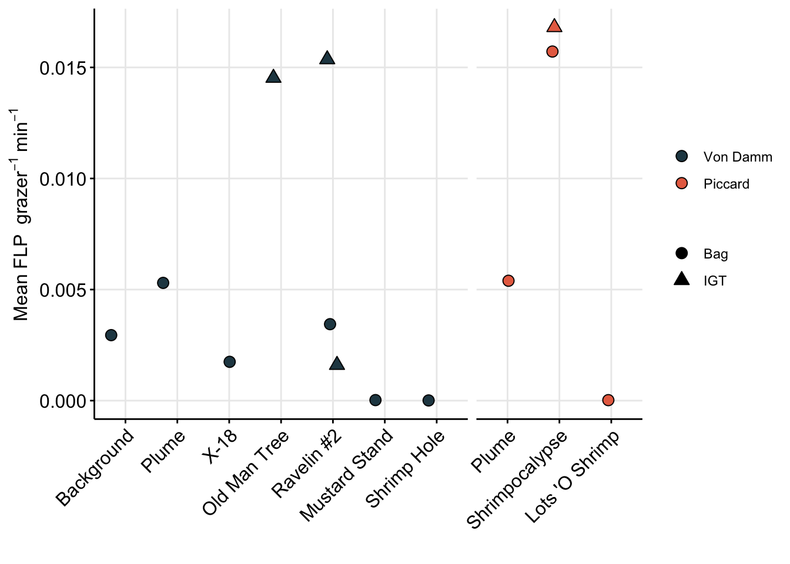
Amend table with eukaryote and prokaryote estimated biomass.
# Subset the average in situ prok cells/ml for non-background samples
tmp <- filter(insitu_proks, Name != "BSW", Name != "Plume") %>% select(MEAN)
avg_insitu <- mean(tmp$MEAN)
# head(insitu_proks)
# Add to master table with data
table_grazerate_wflp_wprok <- insitu_proks %>%
select(Site = SAMPLE, Prok_conc = MEAN, Prok_sem = SEM) %>%
right_join(table_grazerate_wflp) %>%
mutate(Prok_conc = ifelse(is.na(Prok_conc), avg_insitu, Prok_conc)) %>%
data.frameJoining with `by = join_by(Site)`Warning in right_join(., table_grazerate_wflp): Each row in `x` is expected to match at most 1 row in `y`.
ℹ Row 7 of `x` matches multiple rows.
ℹ If multiple matches are expected, set `multiple = "all"` to silence this
warning.table_grazerate_wflp_wprok_weuk <- plot_euk_format %>%
select(Name = NameOrder, FIELD = SiteOrder, euk_conc = avg_conc, EXP_TYPE, euk_conc_sem = SEM_conc) %>%
right_join(table_grazerate_wflp_wprok) %>%
select(FIELD, NAME = Name, EXP = EXP_TYPE, SAMPLE = Site, RATE_min = GRAZE_RATE, FLP_ml = FLP_conc, PROK_ml = Prok_conc, PROK_sem = Prok_sem, EUK_ml = euk_conc, EUK_sem = euk_conc_sem, TimePoints, EXP_REPS, EXP_VOL, CTRL_REPS, CTRL_VOL) %>%
data.frameJoining with `by = join_by(Name, FIELD, EXP_TYPE)`Warning in right_join(., table_grazerate_wflp_wprok): Each row in `x` is expected to match at most 1 row in `y`.
ℹ Row 16 of `x` matches multiple rows.
ℹ If multiple matches are expected, set `multiple = "all"` to silence this
warning.Description of variables above:
Based on Unrein et al. 2007, we use the estimated grazing rate, in situ prok abundance, in situ euk abundance, and the concentration of FLP to make additional estimates.
head(table_grazerate_wflp_wprok_weuk) FIELD NAME EXP SAMPLE RATE_min FLP_ml PROK_ml PROK_sem
1 Von Damm Background Bag VD-BSW 0.002958889 4861.824 37889.62 8608.427
2 Von Damm Background Bag VD-BSW 0.002958889 4861.824 37889.62 8608.427
3 Von Damm Background Bag VD-BSW 0.002958889 4861.824 37889.62 8608.427
4 Von Damm Plume Bag VD-Plume 0.005274231 34242.354 16478.31 2623.935
5 Von Damm Plume Bag VD-Plume 0.005274231 34242.354 16478.31 2623.935
6 Von Damm Plume Bag VD-Plume 0.005274231 34242.354 16478.31 2623.935
EUK_ml EUK_sem TimePoints EXP_REPS EXP_VOL CTRL_REPS CTRL_VOL
1 91.83773 21.866127 0, 10, 15, 20, 40 3 2 2 0.5
2 0.00000 0.000000 0, 10, 15, 20, 40 3 2 2 0.5
3 91.83773 21.866127 0, 10, 15, 20, 40 3 2 2 0.5
4 157.77468 67.098589 0, 10, 15, 25, 57 3 2 2 1.0
5 22.87244 8.878118 0, 10, 15, 25, 57 3 2 2 1.0
6 134.90224 58.794905 0, 10, 15, 25, 57 3 2 2 1.0table_wcalcs <- table_grazerate_wflp_wprok_weuk %>%
# Ingestion rate per hour
mutate(RATE_hr = (RATE_min * 60),
RATE_day = (RATE_hr * 24), #Compare to GR?
# FLP concentration per L
FLP_L = (FLP_ml * 1000),
# mL per grazer per hr
CLEARANCE_RATE_ml = (RATE_hr/FLP_ml),
# nL per grazer per hour
CLEARANCE_RATE_nL = ((RATE_hr/FLP_ml)/1.00E+6),
# proks per grazer per hr
SPEC_GRAZE_RATE_hr = (CLEARANCE_RATE_ml * PROK_ml),
# proks per grazer per day
GRAZE_RATE_DAY = (24 * SPEC_GRAZE_RATE_hr),
# proks per ml per hr
GRAZING_EFFECT_hr = (SPEC_GRAZE_RATE_hr * EUK_ml),
GRAZING_EFFECT_hr_min = (SPEC_GRAZE_RATE_hr * (EUK_ml - EUK_sem)),
GRAZING_EFFECT_hr_max = (SPEC_GRAZE_RATE_hr * (EUK_ml + EUK_sem)),
# cells per ml per day
GRAZING_EFFECT_day = ((SPEC_GRAZE_RATE_hr * 24) * EUK_ml),
# Percentage per day
BAC_TURNOVER_PERC = 100*(GRAZING_EFFECT_day / PROK_ml),
BAC_TURNOVER_PERC_min = 100*(GRAZING_EFFECT_day / (PROK_ml - PROK_sem)),
BAC_TURNOVER_PERC_max = 100*(GRAZING_EFFECT_day / (PROK_ml + PROK_sem))) %>%
data.frame
# View(table_wcalcs)Explanation of units for table with calculated values.
RATE_min & RATE_hr = Grazing rate as ‘FLPs per grazer per minute’ and per hour
CLEARANCE_RATE = ml or nL per grazer per hour
SPEC_GRAZE_RATE (Specific grazing rate) = Prokaryotes per grazer per hour
GRAZING EFFECT = bacteria per ml per hour
Bacterial turnover rate = % per day
# bkgd <- c("Background", "Plume")
#
# library(gt)
#
# table_wcalcs %>%
# mutate(loc_type = case_when(
# NAME %in% bkgd ~ "Background",
# TRUE ~ "Vent fluid"
# )) %>%
# # group_by(loc_type, SITE, EXP) %>%
# select(-SAMPLE) %>%
# gt(
# groupname_col = c("FIELD", "EXP", "loc_type"),
# rowname_col = "NAME"
# ) %>%
# cols_label(RATE_min = html("minute<sup>-1</sup>"),
# RATE_hr = html("hour<sup>-1</sup>"),
# RATE_day = html("day<sup>-1</sup>"),
# EXP_REPS = html("# of incubations"),
# FLP_ml = html("FLP ml<sup>-1</sup>"),
# PROK_ml = html("Prokaryote cells ml<sup>-1</sup>"),
# PROK_sem = html("SEM prokaryote cells ml<sup>-1</sup>"),
# EUK_ml = html("Eukaryote cells ml<sup>-1</sup>"),
# EUK_sem = html("SEM eukaryote cells ml<sup>-1</sup>"),
# FLP_L = html("FLP L<sup>-1</sup>"),
# CLEARANCE_RATE_ml = html("ml grazer<sup>-1</sup> hr<sup>-1</sup>"),
# CLEARANCE_RATE_nL = html("nl grazer<sup>-1</sup> hr<sup>-1</sup>"),
# SPEC_GRAZE_RATE_hr = html("Prokaryote grazer<sup>-1</sup> hr<sup>-1</sup>"),
# GRAZE_RATE_DAY = html("Prokaryote grazer<sup>-1</sup> day<sup>-1</sup>"),
# GRAZING_EFFECT_hr = html("Prokaryote ml<sup>-1</sup> hr<sup>-1</sup>"),
# GRAZING_EFFECT_hr_min = html("MIN"),
# GRAZING_EFFECT_hr_max = html("MAX"),
# GRAZING_EFFECT_day = html("Prokaryote ml<sup>-1</sup> day<sup>-1</sup>"),
# BAC_TURNOVER_PERC = html("Bacteria turnover % day<sup>-1</sup>"),
# BAC_TURNOVER_PERC_min = html("MIN"),
# BAC_TURNOVER_PERC_max = html("MAX")) %>%
# tab_spanner(
# label = (html("Turnover")),
# columns = starts_with("BAC_TURNOVER")
# ) %>%
# tab_spanner(
# label = (html("Grazing rate: prokaryote cells consumed")),
# columns = starts_with("GRAZING_EFFECT")
# ) %>%
# tab_spanner(
# label = (html("ml grazer<sup>-1</sup> hr<sup>-1</sup>")),
# columns = c(CLEARANCE_RATE_ml, CLEARANCE_RATE_nL)
# ) %>%
# tab_spanner(
# label = html("Specific grazing rate"),
# columns = c(SPEC_GRAZE_RATE_hr, GRAZE_RATE_DAY)
# ) %>%
# tab_spanner(
# label = (html("FLPs grazer<sup>-1</sup>")),
# columns = c(RATE_hr, RATE_min, RATE_day),
# ) %>%
# tab_spanner(
# label = (html("Cell counts")),
# columns = c(PROK_ml, PROK_sem, EUK_ml, EUK_sem, FLP_L, FLP_ml),
# ) %>%
# tab_source_note(source_note = "NAs indicate values were unavailable.
# Zero values for rates indicate no grazing pressure detected.") %>%
# fmt_scientific(columns = everything()) %>%
# tab_options(
# table.font.size = 12,
# table.border.top.color = "black",
# column_labels.border.bottom.color = "black",
# column_labels.border.bottom.width= px(3),
# table.width = pct(100))Table 1 and S1 - grazing experiment information only
# write_delim((table_wcalcs %>%
# select(FIELD, NAME, EXP, SAMPLE, TimePoints, starts_with("EXP_"), starts_with("CTRL_"), PROK_ml, PROK_sem, EUK_ml, EUK_sem, RATE_min, GRAZING_EFFECT_hr, CLEARANCE_RATE_ml, BAC_TURNOVER_PERC)), file = "output-data/table1-grazing-exp-list.txt", delim = "\t")References for estimating biovolume Pernice, M.C., Forn, I., Gomes, A., Lara, E., Alonso-Sáez, L., Arrieta, J.M., et al. (2015) Global abundance of planktonic heterotrophic protists in the deep ocean. ISME J 9: 782–792.
# Import manual biovolume measurements
biov <- read.delim("input-data/biovol-euk-12-10-2020.txt")
# head(biov)# Calculate biovolume, then apply carbon by biomass estimate for protists derived from biovolume.
biov_calc <- biov %>%
mutate(BIOVOLUME = ((pi/6) * (d^2) * d)) %>% # Calculate volume (um cubed) # Hillebrand et al. 1999
mutate(pgC_cell_MD_dino = (0.760 * (BIOVOLUME^0.819))) %>% # Menden-Deuer and Lessard 2000
mutate(pgC_cell_MD_nodiatom = (0.216 * (BIOVOLUME^0.939))) %>% # Menden-Deuer and Lessard 2000
mutate(pgC_cell_RANGE_min = (80 * BIOVOLUME)/1000,
pgC_cell_RANGE_max = (360 * BIOVOLUME)/1000,
pgC_cell_RANGE_mean = (220 * BIOVOLUME)/1000)
head(biov_calc) EXP VENT_BSW h d BIOVOLUME pgC_cell_MD_dino pgC_cell_MD_nodiatom
1 IGT vent 30.077 25.764 8954.44130 1310.789998 1110.242625
2 IGT vent 89.582 10.000 523.59878 128.136679 77.195762
3 Bag BSW 14.595 8.036 271.71800 74.878402 41.695668
4 Bag BSW 12.480 8.982 379.41786 98.426275 57.048646
5 Bag vent 9.218 3.120 15.90239 7.325062 2.901529
6 IGT vent 17.255 9.986 521.40274 127.696364 76.891704
pgC_cell_RANGE_min pgC_cell_RANGE_max pgC_cell_RANGE_mean
1 716.355304 3223.59887 1969.977086
2 41.887902 188.49556 115.191731
3 21.737440 97.81848 59.777960
4 30.353429 136.59043 83.471930
5 1.272191 5.72486 3.498526
6 41.712219 187.70499 114.708602# biov_calc
# mean(c(80, 360))c_factor_biov <-
biov_calc %>% select(-EXP, -h, -d) %>%
pivot_longer(cols = c(BIOVOLUME, starts_with("pgC_")), names_to = "VARIABLES", values_to = "VALUES") %>%
group_by(VENT_BSW, VARIABLES) %>%
summarise(mean = mean(VALUES),
max = max(VALUES),
min = min(VALUES)) %>%
pivot_wider(names_from = VENT_BSW, values_from = c(mean, max,min), names_sort = FALSE)`summarise()` has grouped output by 'VENT_BSW'. You can override using the
`.groups` argument.# View(c_factor_biov)pgC_cell_BSW <- subset(c_factor_biov, VARIABLES == "pgC_cell_MD_nodiatom")$mean_BSW
pgC_cell_vent <- subset(c_factor_biov, VARIABLES == "pgC_cell_MD_nodiatom")$mean_vent
pgC_cell_BSW_min <- subset(c_factor_biov, VARIABLES == "pgC_cell_MD_nodiatom")$min_BSW
pgC_cell_vent_min <- subset(c_factor_biov, VARIABLES == "pgC_cell_MD_nodiatom")$min_vent
pgC_cell_BSW_max <- subset(c_factor_biov, VARIABLES == "pgC_cell_MD_nodiatom")$max_BSW
pgC_cell_vent_max <- subset(c_factor_biov, VARIABLES == "pgC_cell_MD_nodiatom")$max_ventIsolate at T0 all the euk cells per ml counts. Then add in the mean, min/max for the pg C per cell, based on the vent vs non-vent.
pgC_ml_biov_bysample <- plot_euk_format %>%
filter(TimePoint == "T0") %>%
filter(VARIABLE == "eukCONC") %>%
mutate(SAMPLE_TYPE_BIN = case_when(
NameOrder == "Background" ~ "Non-vent",
NameOrder == "Plume" ~ "Non-vent",
TRUE ~ "Vent"
)) %>%
mutate(pgC_ml_mean = case_when(
SAMPLE_TYPE_BIN == "Non-vent" ~ avg_conc * pgC_cell_BSW,
SAMPLE_TYPE_BIN == "Vent" ~ avg_conc * pgC_cell_vent,
)) %>%
mutate(pgC_ml_min = case_when(
SAMPLE_TYPE_BIN == "Non-vent" ~ avg_conc * pgC_cell_BSW_min,
SAMPLE_TYPE_BIN == "Vent" ~ avg_conc * pgC_cell_vent_min
)) %>%
mutate(pgC_ml_max = case_when(
SAMPLE_TYPE_BIN == "Non-vent" ~ avg_conc * pgC_cell_BSW_max,
SAMPLE_TYPE_BIN == "Vent" ~ avg_conc * pgC_cell_vent_max
))
pgC_ml_biov_bysample EXPERIMENT SiteOrder NameOrder TimePoint EXP_TYPE
1 Von Damm_Background_Bag Von Damm Background T0 Bag
2 Von Damm_Plume_Bag Von Damm Plume T0 Bag
3 Von Damm_X-18_Bag Von Damm X-18 T0 Bag
4 Von Damm_Old Man Tree_IGT Von Damm Old Man Tree T0 IGT
5 Von Damm_Ravelin #2_Bag Von Damm Ravelin #2 T0 Bag
6 Von Damm_Ravelin #2_IGT Von Damm Ravelin #2 T0 IGT
7 Von Damm_Mustard Stand_Bag Von Damm Mustard Stand T0 Bag
8 Von Damm_Shrimp Hole_Bag Von Damm Shrimp Hole T0 Bag
9 Piccard_Plume_Bag Piccard Plume T0 Bag
10 Piccard_Shrimpocalypse_Bag Piccard Shrimpocalypse T0 Bag
11 Piccard_Shrimpocalypse_IGT Piccard Shrimpocalypse T0 IGT
12 Piccard_Lots 'O Shrimp_Bag Piccard Lots 'O Shrimp T0 Bag
VARIABLE avg_conc SEM_conc Site_Order SAMPLE_TYPE_BIN pgC_ml_mean
1 eukCONC 91.83773 21.866127 Von Damm Non-vent 8391.106
2 eukCONC 157.77468 67.098589 Von Damm Non-vent 14415.688
3 eukCONC 314.87222 104.957407 Von Damm Vent 86989.981
4 eukCONC 472.30833 122.450309 Von Damm Vent 130484.971
5 eukCONC 409.33389 73.470185 Von Damm Vent 113086.975
6 eukCONC 620.99799 123.177023 Von Damm Vent 171563.573
7 eukCONC 259.76958 28.863287 Von Damm Vent 71766.734
8 eukCONC 385.71847 7.871806 Von Damm Vent 106562.726
9 eukCONC 79.30115 16.819081 Piccard Non-vent 7245.654
10 eukCONC 454.81543 NA Piccard Vent 125652.194
11 eukCONC 454.81543 69.971605 Piccard Vent 125652.194
12 eukCONC 230.90630 NA Piccard Vent 63792.652
pgC_ml_min pgC_ml_max
1 2595.7077 21900.26
2 4459.3540 37624.05
3 261.0534 352958.64
4 391.5801 529437.96
5 339.3694 458846.23
6 514.8553 696112.88
7 215.3690 291190.88
8 319.7904 432374.34
9 2241.3730 18910.70
10 377.0771 509829.15
11 377.0771 509829.15
12 191.4391 258836.34by_biovol_plot <- pgC_ml_biov_bysample %>%
ggplot(aes(x = NameOrder, y = (pgC_ml_mean/1000))) +
geom_point(shape = 21, color = "black") +
geom_linerange(aes(ymin = (pgC_ml_min/1000), ymax = (pgC_ml_max/1000))) +
facet_grid(.~Site_Order, space = "free", scales = "free") +
# coord_flip() +
theme_minimal() +
theme(panel.grid.major = element_line(), panel.grid.minor = element_blank(),
panel.background = element_blank(),
axis.line = element_line(colour = "black"),
axis.text.x = element_text(color="black", size = 12,
angle = 45, hjust = 1, vjust = 1),
axis.text.y = element_text(color="black", size = 12),
axis.title =element_text(color="black", size = 12),
axis.ticks = element_line(),
strip.text =element_blank(), legend.title = element_blank())+
guides(fill = guide_legend(override.aes = list(shape = c(21))),
shape = guide_legend(override.aes = list(fill = "black"))) +
labs(x = "", y = bquote("Estimated total biomass: pg C " ~L^-1),
title = "Carbon pool of protists - derived from biovolume")Derived from Caron et al. 1995
c_n <- 2.6 # pg C per cell
c_m <- 138 # pg C per cellpgC_ml_sizefrac_bysample_tmp <- plot_euk_format %>%
filter(TimePoint == "T0") %>%
filter(VARIABLE != "eukCONC") %>% # isolate micro vs. nano
mutate(SAMPLE_TYPE_BIN = case_when(
NameOrder == "Background" ~ "Non-vent",
NameOrder == "Plume" ~ "Non-vent",
TRUE ~ "Vent"
)) %>%
mutate(pg_C_cell = case_when(
VARIABLE == "microCONC" ~ c_m,
VARIABLE == "nanoCONC" ~ c_n
)) %>%
mutate(pg_C_ml_TMP = avg_conc * pg_C_cell) %>%
group_by(EXPERIMENT, SiteOrder, NameOrder, TimePoint, EXP_TYPE, SAMPLE_TYPE_BIN, Site_Order, VARIABLE) %>%
summarise(pg_C_ml = mean(pg_C_ml_TMP))`summarise()` has grouped output by 'EXPERIMENT', 'SiteOrder', 'NameOrder',
'TimePoint', 'EXP_TYPE', 'SAMPLE_TYPE_BIN', 'Site_Order'. You can override
using the `.groups` argument.tmp2 <- pgC_ml_sizefrac_bysample_tmp %>%
group_by(EXPERIMENT, SiteOrder, NameOrder, TimePoint, EXP_TYPE, SAMPLE_TYPE_BIN, Site_Order) %>%
summarize(pg_C_ml = sum(pg_C_ml)) %>%
add_column(VARIABLE = "totaleuk")`summarise()` has grouped output by 'EXPERIMENT', 'SiteOrder', 'NameOrder',
'TimePoint', 'EXP_TYPE', 'SAMPLE_TYPE_BIN'. You can override using the
`.groups` argument.pgC_ml_sizefrac_bysample <- rbind(tmp2, pgC_ml_sizefrac_bysample_tmp)
# pgC_ml_sizefrac_bysamplepgC_ml_sizefrac_bysample %>%
group_by(SAMPLE_TYPE_BIN, VARIABLE) %>%
summarise(MEAN_pg_C_ml = mean(pg_C_ml),
MAX_pg_C_ml = max(pg_C_ml),
MIN_pg_C_ml = min(pg_C_ml))`summarise()` has grouped output by 'SAMPLE_TYPE_BIN'. You can override using
the `.groups` argument.# A tibble: 6 × 5
# Groups: SAMPLE_TYPE_BIN [2]
SAMPLE_TYPE_BIN VARIABLE MEAN_pg_C_ml MAX_pg_C_ml MIN_pg_C_ml
<chr> <chr> <dbl> <dbl> <dbl>
1 Non-vent microCONC 1481. 3156. 0
2 Non-vent nanoCONC 257. 351. 182.
3 Non-vent totaleuk 1738. 3507. 239.
4 Vent microCONC 4788. 14484. 0
5 Vent nanoCONC 951. 1524. 600.
6 Vent totaleuk 5739. 15439. 600.# head(pgC_ml_sizefrac_bysample)by_sizefrac_plot <- pgC_ml_sizefrac_bysample %>%
ggplot(aes(x = NameOrder, y = (pg_C_ml/1000))) +
geom_point(color = "black", aes(shape = VARIABLE)) +
# geom_linerange(aes(ymin = (pgC_ml_min/1000), ymax = (pgC_ml_max/1000))) +
facet_grid(.~Site_Order, space = "free", scales = "free") +
# coord_flip() +
theme_minimal() +
theme(panel.grid.major = element_line(), panel.grid.minor = element_blank(),
panel.background = element_blank(),
axis.line = element_line(colour = "black"),
axis.text.x = element_text(color="black", size = 12,
angle = 45, hjust = 1, vjust = 1),
axis.text.y = element_text(color="black", size = 12),
axis.title =element_text(color="black", size = 12),
axis.ticks = element_line(),
strip.text =element_blank(), legend.title = element_blank())+
guides(fill = guide_legend(override.aes = list(shape = c(21))),
shape = guide_legend(override.aes = list(fill = "black"))) +
labs(x = "", y = bquote("Estimated total biomass: pg C " ~L^-1),
title = "Carbon pool of protists - based on size fraction")Combined supplementary plot showing two routes of determining total biomass.
by_biovol_plot + by_sizefrac_plot + patchwork::plot_layout(ncol = 1) +
plot_annotation(tag_levels = "a")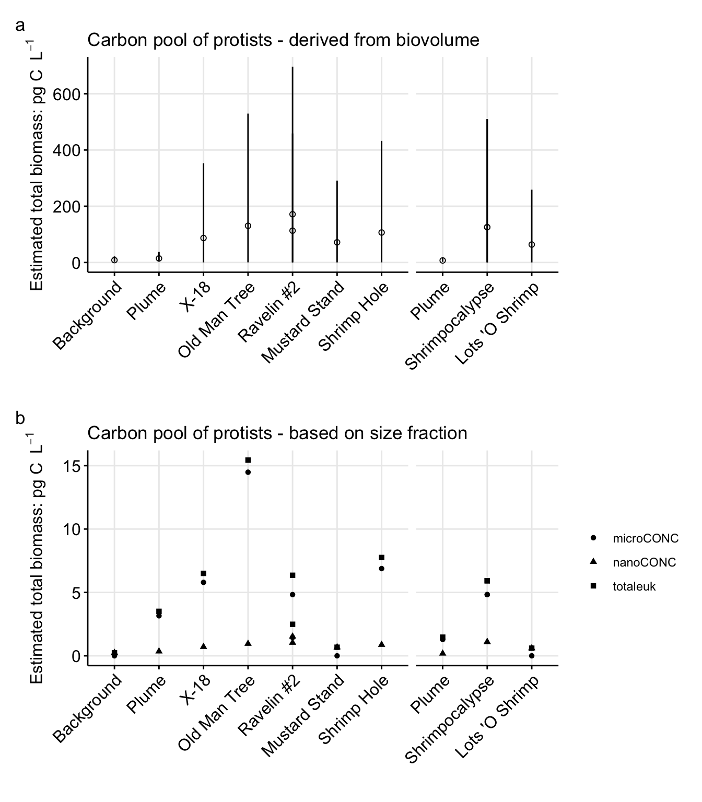
Compilation table of carbon biomass values for microeukaryotes by sample type and vent field
## carbon biomass derived from biovolume, by sample type
pgC_ml_biov_bysample %>%
group_by(SAMPLE_TYPE_BIN)%>%
summarise(MEAN_pg_C_ml = mean(pgC_ml_mean),
MAX_pg_C_ml = max(pgC_ml_mean),
MIN_pg_C_ml = min(pgC_ml_mean)) %>%
add_column(ORIGIN = "bybiovolume")# A tibble: 2 × 5
SAMPLE_TYPE_BIN MEAN_pg_C_ml MAX_pg_C_ml MIN_pg_C_ml ORIGIN
<chr> <dbl> <dbl> <dbl> <chr>
1 Non-vent 10017. 14416. 7246. bybiovolume
2 Vent 110617. 171564. 63793. bybiovolume## carbon biomass derived from biovolume, by vent field (vent only)
pgC_ml_biov_bysample %>%
filter(SAMPLE_TYPE_BIN == "Vent") %>%
group_by(Site_Order)%>%
summarise(MEAN_pg_C_ml = mean(pgC_ml_mean),
MAX_pg_C_ml = max(pgC_ml_mean),
MIN_pg_C_ml = min(pgC_ml_mean)) %>%
add_column(ORIGIN = "bybiovolume")# A tibble: 2 × 5
Site_Order MEAN_pg_C_ml MAX_pg_C_ml MIN_pg_C_ml ORIGIN
<fct> <dbl> <dbl> <dbl> <chr>
1 Von Damm 113409. 171564. 71767. bybiovolume
2 Piccard 105032. 125652. 63793. bybiovolume## Carbon biomass estimates from sample type and size fraction
pgC_ml_sizefrac_bysample %>%
group_by(SAMPLE_TYPE_BIN, VARIABLE) %>%
summarise(MEAN_pg_C_ml = mean(pg_C_ml),
MAX_pg_C_ml = max(pg_C_ml),
MIN_pg_C_ml = min(pg_C_ml)) %>%
add_column(ORIGIN = "sizefrac")`summarise()` has grouped output by 'SAMPLE_TYPE_BIN'. You can override using
the `.groups` argument.# A tibble: 6 × 6
# Groups: SAMPLE_TYPE_BIN [2]
SAMPLE_TYPE_BIN VARIABLE MEAN_pg_C_ml MAX_pg_C_ml MIN_pg_C_ml ORIGIN
<chr> <chr> <dbl> <dbl> <dbl> <chr>
1 Non-vent microCONC 1481. 3156. 0 sizefrac
2 Non-vent nanoCONC 257. 351. 182. sizefrac
3 Non-vent totaleuk 1738. 3507. 239. sizefrac
4 Vent microCONC 4788. 14484. 0 sizefrac
5 Vent nanoCONC 951. 1524. 600. sizefrac
6 Vent totaleuk 5739. 15439. 600. sizefrac## Carbon biomass estimates from vent sites only, by vent field and size fraction
pgC_ml_sizefrac_bysample %>%
filter(SAMPLE_TYPE_BIN == "Vent") %>%
group_by(Site_Order, VARIABLE) %>%
summarise(MEAN_pg_C_ml = mean(pg_C_ml),
MAX_pg_C_ml = max(pg_C_ml),
MIN_pg_C_ml = min(pg_C_ml)) %>%
add_column(ORIGIN = "sizefrac")`summarise()` has grouped output by 'Site_Order'. You can override using the
`.groups` argument.# A tibble: 6 × 6
# Groups: Site_Order [2]
Site_Order VARIABLE MEAN_pg_C_ml MAX_pg_C_ml MIN_pg_C_ml ORIGIN
<fct> <chr> <dbl> <dbl> <dbl> <chr>
1 Von Damm microCONC 5572. 14484. 0 sizefrac
2 Von Damm nanoCONC 962. 1524. 675. sizefrac
3 Von Damm totaleuk 6535. 15439. 675. sizefrac
4 Piccard microCONC 3219. 4828. 0 sizefrac
5 Piccard nanoCONC 928. 1092. 600. sizefrac
6 Piccard totaleuk 4147. 5920. 600. sizefracCompare with Menden-Deuer and Lessard 2000, Table 2 - using only the heterotrophic species measured. Based on Table 2, the min volume was 4745 and the maximum was 1.2 x10^7 µm^3. Carbon content was measured at pg per cell, this was 469.48-35,339 pg per cell.
Import the heterotroph species volume and carbon content to compare to my measured values. Compare to md-lessard (Supplementary)
c_prev <- read.delim("input-data/md-lessard-2000.txt") # Table 2, heterotrophs only
# c_prev
# biov
# combine and plot
carbon_compare <- c_prev %>%
add_column(source = "Menden-Deuer Lessard") %>%
select(source, Volume = vol, pgC_cell) %>%
rbind(biov_calc %>% add_column(source = "MCR") %>% select(source, Volume = BIOVOLUME, pgC_cell = pgC_cell_MD_nodiatom)) %>%
ggplot(aes(x = Volume, y = pgC_cell, fill = source)) +
geom_point(aes(fill = source), shape = 23, color = "black", size = 3) +
scale_y_log10() + scale_x_log10() +
labs(title = "Compare literature to measured cell volume & C content",
x = bquote("Volume" ~µm^3),
y = bquote("pg C" ~cell^-1)) +
theme_bw() + theme(legend.title = element_blank(),
axis.title = element_text(size = 14),
axis.text = element_text(size = 14),
legend.text = element_text(size = 14))
carbon_compare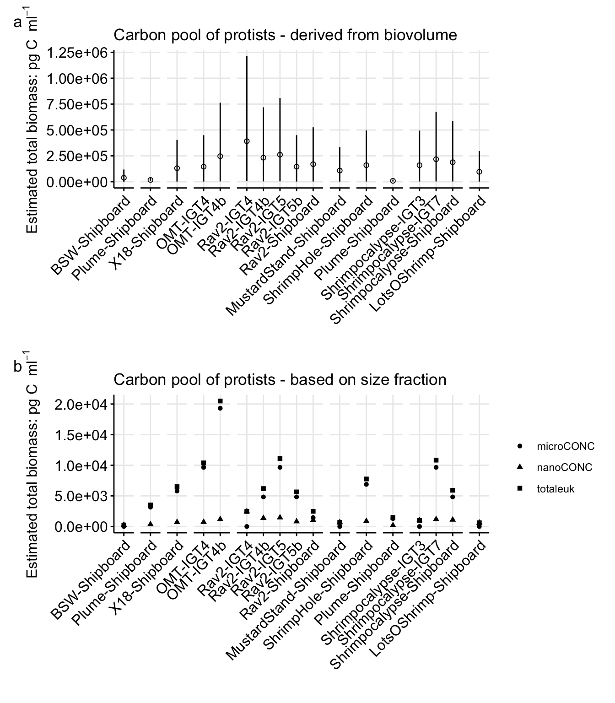
Upon comparison, the measured carbon content was much lower from the grazing experiments. This makes sense, as I am looking at preserved specimen and a smaller total number of cells. AND the deep-sea protist cell sizes may be smaller overall.
Now, report estimated carbon per cell for bacteria.
Units: fg C per cell.
bac_carbon_Mor_fg <- (86)
#From Derived from Morono et al. 2011
bac_carbon_Lof_fg <- (173)
# Derived from McNichol et al. 2018; LOFERER-KROBACHER, J. KLIMA & R. PSENNER 1998
# fg C per cell
bac_carbon_mean <- 15
bac_carbon_min <- 10
bac_carbon_max <- 20Import main table with all estimates of cells
table_wcalcs <- read_delim(file = "output-data/table1-grazing-exp-list.txt", delim = "\t")Rows: 13 Columns: 17
── Column specification ────────────────────────────────────────────────────────
Delimiter: "\t"
chr (5): FIELD, NAME, EXP, SAMPLE, TimePoints
dbl (12): EXP_REPS, EXP_VOL, CTRL_REPS, CTRL_VOL, PROK_ml, PROK_sem, EUK_ml,...
ℹ Use `spec()` to retrieve the full column specification for this data.
ℹ Specify the column types or set `show_col_types = FALSE` to quiet this message.# head(table_wcalcs)RATE_min units = FLPs per grazer per minute Clearance rate _ml = ml per grazer per hour
##
est_prok_carbon <- table_wcalcs %>%
select(FIELD, NAME, EXP, SAMPLE, starts_with("PROK_"), RATE_min, CLEARANCE_RATE_ml, GRAZING_EFFECT_hr) %>%
# Add in calcs by fg C per cell.
## Estimates of carbon pool of microbes per ml.
mutate(MOR_fgC_ml = bac_carbon_Mor_fg * PROK_ml,
LOF_fgC_ml = bac_carbon_Lof_fg * PROK_ml,
MEAN_fgC_ml = bac_carbon_mean * PROK_ml,
MAX_fgC_ml = bac_carbon_max * PROK_ml,
MIN_fgC_ml = bac_carbon_min * PROK_ml) %>%
pivot_longer(cols = ends_with("fgC_ml"), names_to = "fgC_ml")
head(est_prok_carbon)# A tibble: 6 × 11
FIELD NAME EXP SAMPLE PROK_ml PROK_…¹ RATE_…² CLEAR…³ GRAZI…⁴ fgC_ml value
<chr> <chr> <chr> <chr> <dbl> <dbl> <dbl> <dbl> <dbl> <chr> <dbl>
1 Von … Back… Bag VD-BSW 37890. 8608. 0.00296 3.65e-5 127. MOR_f… 3.26e6
2 Von … Back… Bag VD-BSW 37890. 8608. 0.00296 3.65e-5 127. LOF_f… 6.55e6
3 Von … Back… Bag VD-BSW 37890. 8608. 0.00296 3.65e-5 127. MEAN_… 5.68e5
4 Von … Back… Bag VD-BSW 37890. 8608. 0.00296 3.65e-5 127. MAX_f… 7.58e5
5 Von … Back… Bag VD-BSW 37890. 8608. 0.00296 3.65e-5 127. MIN_f… 3.79e5
6 Von … Plume Bag VD-Pl… 16478. 2624. 0.00527 9.24e-6 24.0 MOR_f… 1.42e6
# … with abbreviated variable names ¹PROK_sem, ²RATE_min, ³CLEARANCE_RATE_ml,
# ⁴GRAZING_EFFECT_hrGet summary of prokaryotic biomass
est_prok_carbon %>%
mutate(SAMPLE_TYPE_BIN = case_when(
NAME == "Background" ~ "Non-vent",
NAME == "Plume" ~ "Non-vent",
TRUE ~ "Vent"
)) %>%
group_by(SAMPLE_TYPE_BIN, fgC_ml) %>%
summarise(mean_pgC_ml = mean((value)*(0.001)),
min_pgC_ml = min((value)*(0.001)),
max_pgC_ml = max((value)*(0.001))) `summarise()` has grouped output by 'SAMPLE_TYPE_BIN'. You can override using
the `.groups` argument.# A tibble: 10 × 5
# Groups: SAMPLE_TYPE_BIN [2]
SAMPLE_TYPE_BIN fgC_ml mean_pgC_ml min_pgC_ml max_pgC_ml
<chr> <chr> <dbl> <dbl> <dbl>
1 Non-vent LOF_fgC_ml 6101. 2851. 8897.
2 Non-vent MAX_fgC_ml 705. 330. 1029.
3 Non-vent MEAN_fgC_ml 529. 247. 771.
4 Non-vent MIN_fgC_ml 353. 165. 514.
5 Non-vent MOR_fgC_ml 3033. 1417. 4423.
6 Vent LOF_fgC_ml 17745. 7263. 41275.
7 Vent MAX_fgC_ml 2051. 840. 4772.
8 Vent MEAN_fgC_ml 1539. 630. 3579.
9 Vent MIN_fgC_ml 1026. 420. 2386.
10 Vent MOR_fgC_ml 8821. 3611. 20518.head(est_prok_carbon)# A tibble: 6 × 11
FIELD NAME EXP SAMPLE PROK_ml PROK_…¹ RATE_…² CLEAR…³ GRAZI…⁴ fgC_ml value
<chr> <chr> <chr> <chr> <dbl> <dbl> <dbl> <dbl> <dbl> <chr> <dbl>
1 Von … Back… Bag VD-BSW 37890. 8608. 0.00296 3.65e-5 127. MOR_f… 3.26e6
2 Von … Back… Bag VD-BSW 37890. 8608. 0.00296 3.65e-5 127. LOF_f… 6.55e6
3 Von … Back… Bag VD-BSW 37890. 8608. 0.00296 3.65e-5 127. MEAN_… 5.68e5
4 Von … Back… Bag VD-BSW 37890. 8608. 0.00296 3.65e-5 127. MAX_f… 7.58e5
5 Von … Back… Bag VD-BSW 37890. 8608. 0.00296 3.65e-5 127. MIN_f… 3.79e5
6 Von … Plume Bag VD-Pl… 16478. 2624. 0.00527 9.24e-6 24.0 MOR_f… 1.42e6
# … with abbreviated variable names ¹PROK_sem, ²RATE_min, ³CLEARANCE_RATE_ml,
# ⁴GRAZING_EFFECT_hr## Carbon consumed based on clearance rate
carbon_consumed <- est_prok_carbon %>%
filter(fgC_ml == "MOR_fgC_ml") %>% #use only value from Morono et al.
add_column(ugC_cell = (bac_carbon_Mor_fg * 0.001)) %>%
select(FIELD, NAME, EXP, PROK_ml, GRAZING_EFFECT_hr, CLEARANCE_RATE_ml, ugC_cell, ugC_ml = value) %>%
mutate(ugC_pergrazer_CLEARANCE = ugC_ml * CLEARANCE_RATE_ml,
ugC_perml_perhr = ugC_cell * GRAZING_EFFECT_hr)Summary of carbon consumed:
carbon_consumed %>%
mutate(SAMPLE_TYPE_BIN = case_when(
NAME == "Background" ~ "Non-vent",
NAME == "Plume" ~ "Non-vent",
TRUE ~ "Vent"
)) %>%
group_by(SAMPLE_TYPE_BIN) %>%
summarise(MEAN_ugC_pergrazer_CLEARANCE = mean(ugC_pergrazer_CLEARANCE),
MEAN_ugC_perml_perhr = mean(ugC_perml_perhr),
MAX_ugC_pergrazer_CLEARANCE = max(ugC_pergrazer_CLEARANCE),
MAX_ugC_perml_perhr = max(ugC_perml_perhr),
MIN_ugC_pergrazer_CLEARANCE = min(ugC_pergrazer_CLEARANCE),
MIN_ugC_perml_perhr = min(ugC_perml_perhr))# A tibble: 2 × 7
SAMPLE_TYPE_BIN MEAN_ugC_pergrazer_C…¹ MEAN_…² MAX_u…³ MAX_u…⁴ MIN_u…⁵ MIN_u…⁶
<chr> <dbl> <dbl> <dbl> <dbl> <dbl> <dbl>
1 Non-vent 60.0 5.60 119. 10.9 13.1 2.07
2 Vent 750. 358. 3863. 1757. 0 0
# … with abbreviated variable names ¹MEAN_ugC_pergrazer_CLEARANCE,
# ²MEAN_ugC_perml_perhr, ³MAX_ugC_pergrazer_CLEARANCE, ⁴MAX_ugC_perml_perhr,
# ⁵MIN_ugC_pergrazer_CLEARANCE, ⁶MIN_ugC_perml_perhrcarbon_consumed %>%
mutate(SAMPLE_TYPE_BIN = case_when(
NAME == "Background" ~ "Non-vent",
NAME == "Plume" ~ "Non-vent",
TRUE ~ "Vent"
)) %>%
filter(SAMPLE_TYPE_BIN == "Vent") %>%
group_by(FIELD) %>%
summarise(MEAN_ugC_pergrazer_CLEARANCE = mean(ugC_pergrazer_CLEARANCE),
MEAN_ugC_perml_perhr = mean(ugC_perml_perhr),
MAX_ugC_pergrazer_CLEARANCE = max(ugC_pergrazer_CLEARANCE),
MAX_ugC_perml_perhr = max(ugC_perml_perhr),
MIN_ugC_pergrazer_CLEARANCE = min(ugC_pergrazer_CLEARANCE),
MIN_ugC_perml_perhr = min(ugC_perml_perhr))# A tibble: 2 × 7
FIELD MEAN_ugC_pergrazer_CLEARANCE MEAN_u…¹ MAX_u…² MAX_u…³ MIN_u…⁴ MIN_u…⁵
<chr> <dbl> <dbl> <dbl> <dbl> <dbl> <dbl>
1 Piccard 1666. 758. 3863. 1757. 0 0
2 Von Damm 358. 186. 1056. 656. 0 0
# … with abbreviated variable names ¹MEAN_ugC_perml_perhr,
# ²MAX_ugC_pergrazer_CLEARANCE, ³MAX_ugC_perml_perhr,
# ⁴MIN_ugC_pergrazer_CLEARANCE, ⁵MIN_ugC_perml_perhrFrom Axial Seamount cruise (July 2022) - have Anemone vent and plume euk cell counts to compare.
counts_ax <- read.csv("../../GrazingatAxial-2022/euk-cell-counts-11142022.csv",
blank.lines.skip = FALSE,
na.strings = c("", "NA"),
stringsAsFactors = FALSE) # Import
counts_ax[is.na(counts_ax)] <- 0 # Change blanks to zeroesModify grazing code to count euk cells/ml so it considers euk cell count samples only.
counts_cellsml_axial <- counts_ax %>%
select(SAMPLE, EXP = `EXP.ID`, VOL = `vol..ml.`, MAG = `Mag..x.`, nano = `X.20um..no.FLP`, micro = `X.20um..no.FLP.1`) %>%
group_by(SAMPLE, EXP, VOL) %>%
mutate(nanoTOTAL = as.numeric(nano),
microTOTAL = as.numeric(micro),
euksTOTAL = nanoTOTAL + microTOTAL) %>%
summarise(totalFOV = n(), # Count total FOV counted
nanoAvg = sum(nanoTOTAL)/totalFOV, #Average per FOV
nanoVar = var(nanoTOTAL), #Variance
nanoSd = (2*(sqrt(nanoVar))), #Standard deviation
microAvg = sum(microTOTAL)/totalFOV, ## Repeat for microeuks
microVar = var(microTOTAL),
microSd = (2*(sqrt(microVar))),
euksAvg = sum(euksTOTAL)/totalFOV, ## Repeat for total cell count
euksVar = var(euksTOTAL),
euksSd = (2*(sqrt(euksVar)))) %>%
# Calculate cells/ml based on magnification (at x100, 0.01 is vol of grid), volume filtered (VOL), dilution factor (0.9), and area of counting grid (for Huber lab filter rig, it is 283.385):
mutate(nanoCONC = ((nanoAvg * 283.385)/(VOL * 0.0256 * 0.9)),
microCONC = ((microAvg * 283.385)/(VOL * 0.0256 * 0.9)),
eukCONC = ((euksAvg * 283.385)/(VOL * 0.0256 * 0.9))
)`summarise()` has grouped output by 'SAMPLE', 'EXP'. You can override using the
`.groups` argument. # # left_join(expmeta) %>%
# separate(SAMPLE, c("Site", "Name"), sep = "-", remove = FALSE) %>%
# separate(EXPID, c("TimePoint", "Replicate"), sep = "-", remove = FALSE) %>%
# data.frameThoughts on cell counts. Combining nano and micro for now, as the de-pressurization can cause issues in size. Likely underestimates for these counts.
This is further supported because the biovolumes of all cells were pretty low.
head(counts_cellsml_axial)# A tibble: 6 × 16
# Groups: SAMPLE, EXP [6]
SAMPLE EXP VOL total…¹ nanoAvg nanoVar nanoSd micro…² micro…³ microSd
<chr> <chr> <int> <int> <dbl> <dbl> <dbl> <dbl> <dbl> <dbl>
1 ASHES Plume coun… 200 30 0.4 0.455 1.35 0.133 0.120 0.691
2 ASHES Plume coun… 200 30 0.267 0.271 1.04 0.133 0.120 0.691
3 ASHES Plume coun… 200 30 0.467 0.602 1.55 0.1 0.0931 0.610
4 Anemone eukc… 200 30 0.9 0.921 1.92 0.0333 0.0333 0.365
5 Anemone eukc… 200 30 0.967 0.930 1.93 0.167 0.144 0.758
6 Anemone eukc… 200 30 1.3 1.32 2.30 0.1 0.0931 0.610
# … with 6 more variables: euksAvg <dbl>, euksVar <dbl>, euksSd <dbl>,
# nanoCONC <dbl>, microCONC <dbl>, eukCONC <dbl>, and abbreviated variable
# names ¹totalFOV, ²microAvg, ³microVarhist(counts_cellsml_axial$eukCONC)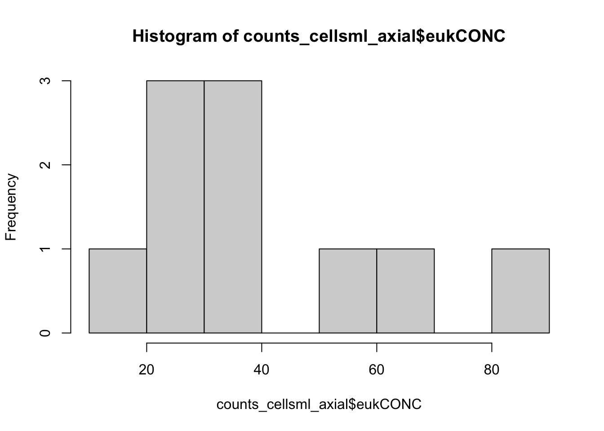
# head(plot_euk_conc)
# head(counts_cellsml_axial)
plot_euk_conc %>%
filter(VARIABLE == "eukCONC" & TimePoint == "T0") %>%
group_by(Site, Name) %>%
summarize(euk_conc_mean = mean(CONCENTRATION)) %>%
add_column(FIELD = "MidCaymanRise") %>%
rbind(counts_cellsml_axial %>%
select(Site = SAMPLE, Name = EXP, eukCONC) %>%
group_by(Site, Name) %>%
summarise(euk_conc_mean = mean(eukCONC)) %>%
add_column(FIELD = "AxialSeamount")) %>%
mutate(TYPE = case_when(
Name == "Plume" ~ "Plume",
Name == "BSW" ~ "BSW",
Site == "ASHES Plume" ~ "Plume",
Site == "International District Plume" ~ "Plume",
Site == "BSW" ~ "BSW",
TRUE ~ "Vent"
)) %>%
ggplot(aes(x = Name, y = euk_conc_mean)) +
geom_point(aes(fill = FIELD, shape = TYPE), size = 3) +
scale_shape_manual(values = c(21, 23, 24)) +
facet_grid(. ~ FIELD + TYPE, space = "free", scales = "free") +
scale_y_log10() +
theme_linedraw() +
theme(axis.text.x = element_text(angle = 45, hjust = 1, vjust = 1))`summarise()` has grouped output by 'Site'. You can override using the
`.groups` argument.
`summarise()` has grouped output by 'Site'. You can override using the
`.groups` argument.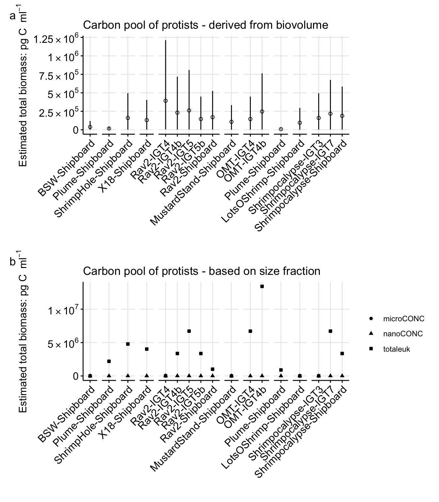
Import from Hu et al. (Molecular Ecology).
env_tmp <- read.delim("../../microeuks_deepbiosphere_datamine/microeuk-amplicon-survey/data-input/samplelist-metadata.txt")
# head(env_tmp)
mcr_metadata <- env_tmp %>%
filter(SITE == "VonDamm" | SITE == "Piccard") %>%
mutate(FIELD = case_when(
SITE == "VonDamm" ~ "Von Damm",
SITE == "Piccard" ~ "Piccard")) %>%
filter(SAMPLETYPE != "Incubation") %>%
select(-Sample_or_Control, -SAMPLEID, -ref_num, -SITE, SEQ_SAMPLE = SAMPLE, everything())
# View(mcr_metadata)Generate supplementary table.
supp_table_env_mcr <- mcr_metadata %>%
select(FIELD, VENT, SAMPLETYPE, DEPTH, TEMP = temp, PH = pH, PERCSEA = percseawater, MG = mg, H2 = h2, H2S = h2s, CH4 = ch4, MICROBIAL = ProkConc)
# Save supplementary metadata table:
# write.csv(supp_table_env_mcr, file = "output-data/supp_table_MCR_metadata.csv")Re-import table from output table with all grazing values
table_wcalcs_biomass_bounded <- read.delim("output-data/table-wcalc.txt")Format and factor values to plot, and prioritize these values:
head(table_wcalcs_biomass_bounded) NAME FIELD SAMPLE_TYPE_BIN MDL_BIOMASS CARON_BIOMASS EXP
1 Background Von Damm Non-vent 8391106 0 Bag
2 Plume Von Damm Non-vent 14415688 3156397 Bag
3 Plume Piccard Non-vent 7245653 1287478 Bag
4 Shrimpocalypse Piccard Vent 125652196 4828041 Bag
5 Shrimpocalypse Piccard Vent 125652196 4828041 IGT
6 Lots 'O Shrimp Piccard Vent 63792653 0 Bag
SAMPLE RATE_min FLP_ml PROK_ml PROK_sem EUK_ml
1 VD-BSW 0.002958889 4861.8239 37889.62 8608.427 91.83773
2 VD-Plume 0.005274231 34242.3542 16478.31 2623.935 157.77468
3 Piccard-Plume 0.005362856 29650.4676 51429.13 4618.126 79.30115
4 Piccard-Shrimpocalypse 0.015686872 17003.1000 238585.68 65792.588 454.81543
5 Piccard-Shrimpocalypse 0.016794258 5352.8278 238585.68 65792.588 454.81543
6 Piccard-LotsOShrimp 0.000000000 617.1496 53878.14 13727.191 230.90630
EUK_sem TimePoints EXP_REPS EXP_VOL CTRL_REPS CTRL_VOL RATE_hr
1 21.86613 0, 10, 15, 20, 40 3 2.00 2 0.5 0.1775333
2 67.09859 0, 10, 15, 25, 57 3 2.00 2 1.0 0.3164538
3 16.81908 0, 10, 15, 20, 40 3 2.00 2 0.5 0.3217713
4 NA 0, 10, 14, 22, 42 3 1.50 2 0.2 0.9412123
5 69.97160 0, 15, 25 1 0.15 NA NA 1.0076555
6 NA 0, 15, 20, 40 3 1.50 2 0.2 0.0000000
RATE_day FLP_L CLEARANCE_RATE_ml CLEARANCE_RATE_nL SPEC_GRAZE_RATE_hr
1 4.260800 4861823.9 3.651579e-05 3.651579e-11 1.3835695
2 7.594892 34242354.2 9.241591e-06 9.241591e-12 0.1522858
3 7.722512 29650467.6 1.085215e-05 1.085215e-11 0.5581167
4 22.589096 17003100.0 5.535534e-05 5.535534e-11 13.2069906
5 24.183732 5352827.8 1.882473e-04 1.882473e-10 44.9131155
6 0.000000 617149.6 0.000000e+00 0.000000e+00 0.0000000
GRAZE_RATE_DAY GRAZING_EFFECT_hr GRAZING_EFFECT_hr_min GRAZING_EFFECT_hr_max
1 33.20567 127.06388 96.81058 157.31719
2 3.65486 24.02685 13.80868 34.24501
3 13.39480 44.25930 34.87229 53.64630
4 316.96778 6006.74315 NA NA
5 1077.91477 20427.17803 17284.53525 23569.82080
6 0.00000 0.00000 NA NA
GRAZING_EFFECT_day BAC_TURNOVER_PERC BAC_TURNOVER_PERC_min
1 3049.5332 8.048465 10.414647
2 576.6444 3.499414 4.162182
3 1062.2231 2.065411 2.269174
4 144161.8356 60.423507 83.430323
5 490252.2727 205.482690 283.722148
6 0.0000 0.000000 0.000000
BAC_TURNOVER_PERC_max bac_C_ug_MOR bac_C_ug_LOF
1 6.558411 8.6e-08 1.73e-07
2 3.018725 8.6e-08 1.73e-07
3 1.895228 8.6e-08 1.73e-07
4 47.362723 8.6e-08 1.73e-07
5 161.066779 8.6e-08 1.73e-07
6 0.000000 8.6e-08 1.73e-07
RATE_ugCbac_pergrazer_perday_MOR RATE_ugCbac_pergrazer_perday_LOF
1 3.664288e-07 7.371184e-07
2 6.531607e-07 1.313916e-06
3 6.641361e-07 1.335995e-06
4 1.942662e-06 3.907914e-06
5 2.079801e-06 4.183786e-06
6 0.000000e+00 0.000000e+00
SPEC_INGESTION_RATE_MDL SPEC_INGESTION_RATE_CAR Prok_biomass
1 4.366871e-14 Inf 0.003258508
2 4.530902e-14 2.069324e-13 0.001417135
3 9.165993e-14 5.158428e-13 0.004422905
4 1.546063e-14 4.023707e-13 0.020518368
5 1.655205e-14 4.307754e-13 0.020518368
6 0.000000e+00 NA 0.004633520
Prok_biomass_L_MOR Prok_biomass_L_LOF Prok_biomass_sem_MOR
1 3.258508 6.554905 0.0007403247
2 1.417135 2.850748 0.0002256584
3 4.422905 8.897239 0.0003971588
4 20.518368 41.275323 0.0056581625
5 20.518368 41.275323 0.0056581625
6 4.633520 9.320917 0.0011805385
Prok_biomass_sem_L_MOR detected type GRAZE_RATE type_site
1 0.7403247 Detected Background 0.002958889 Background
2 0.2256584 Detected Plume 0.005274231 Plume
3 0.3971588 Detected Plume 0.005362856 Plume
4 5.6581625 Detected Vent-Bag 0.015686872 Vent
5 5.6581625 Detected Vent-IGT 0.016794258 Vent
6 1.1805385 Detected Vent-Bag 0.000000000 Vent# table_wcalcs_biomass_bounded$EukReport grazing rates
table_wcalcs_biomass_bounded %>%
mutate(SAMPLE_TYPE_BIN = case_when(
NAME == "Background" ~ "Non-vent",
NAME == "Plume" ~ "Non-vent",
TRUE ~ "Vent"
)) %>%
# group_by(SAMPLE_TYPE_BIN) %>%
group_by(SAMPLE_TYPE_BIN, EXP) %>%
summarise(MEAN_RATE = mean(GRAZING_EFFECT_hr),
MIN_RATE = min(GRAZING_EFFECT_hr),
MAX_RATE = max(GRAZING_EFFECT_hr))`summarise()` has grouped output by 'SAMPLE_TYPE_BIN'. You can override using
the `.groups` argument.# A tibble: 3 × 5
# Groups: SAMPLE_TYPE_BIN [2]
SAMPLE_TYPE_BIN EXP MEAN_RATE MIN_RATE MAX_RATE
<chr> <chr> <dbl> <dbl> <dbl>
1 Non-vent Bag 65.1 24.0 127.
2 Vent Bag 1215. 0 6007.
3 Vent IGT 8578. 794. 20427.biomass_rate_plot <- table_wcalcs_biomass_bounded %>%
select(FIELD, NAME, EXP, SAMPLE, type,
PROK_ml, EUK_ml, PROK_sem, EUK_sem,
Prok_biomass_L_MOR,
# Euk_biomass_Hu_L, Euk_biomass_lit_L,
# Prok_biomass_sem_L, Euk_biomass_Hu_sem_L, Euk_biomass_lit_sem_L,
GRAZING_EFFECT_hr, GRAZING_EFFECT_hr_min, GRAZING_EFFECT_hr_max, BAC_TURNOVER_PERC, BAC_TURNOVER_PERC_min, BAC_TURNOVER_PERC_max,
GRAZE_RATE) %>%
pivot_longer(cols = c(PROK_ml, EUK_ml,
Prok_biomass_L_MOR,
# Euk_biomass_Hu_L, Euk_biomass_lit_L,
GRAZING_EFFECT_hr, BAC_TURNOVER_PERC,
GRAZE_RATE),
names_to = "Variable", values_to = "Value") %>%
pivot_longer(cols = c(PROK_sem, EUK_sem,
# Prok_biomass_sem_L, Euk_biomass_Hu_sem_L, Euk_biomass_lit_sem_L,
BAC_TURNOVER_PERC_max, BAC_TURNOVER_PERC_min, GRAZING_EFFECT_hr_max, GRAZING_EFFECT_hr_min, GRAZING_EFFECT_hr_max),
names_to = "SEM_variable", values_to = "SEM") %>%
data.frame
biomass_rate_plot$NAME_ORDER <- factor(biomass_rate_plot$NAME, levels = c("Background","Plume", "Quakeplume", "Shrimpocalypse", "Lots 'O Shrimp", "X-18", "Old Man Tree", "Ravelin #2", "Mustard Stand", "Shrimp Hole", "Hot Chimlet #1", "Shrimp Gulley", "South of Hot Chimlet", "South of LungSnack", "Arrow Loop", "Bartizan", "Ravelin #1"))
biomass_rate_plot$VARIABLE_ORDER <- factor(biomass_rate_plot$Variable,
levels = c("PROK_ml", "EUK_ml",
"Prok_biomass_L_MOR",
# "Euk_biomass_Hu_L", "Euk_biomass_lit_L",
"GRAZING_EFFECT_hr", "BAC_TURNOVER_PERC",
"GRAZE_RATE"),
labels = c("Prokaryote~cells~mL^{-1}", "Eukaryote~cells~mL^{-1}",
"Prokaryote~µg~C~L^{-1}",
# "Measured~eukaryote~µg~C~L^{-1}", "Literature-based~eukaryote~µg~C~L^{-1}",
"Cells~mL^{-1}~hr^{-1}", "Prokaryote~turnover~'%'~d^{-1}",
"FLP~consumed~min^{-1}"))conc_rate_plot_mcr <- function(df, var, sem){
df %>%
filter(Variable == var) %>%
filter(SEM_variable == sem) %>%
ggplot(aes(y = Value, x = NAME_ORDER, shape = EXP, fill = FIELD)) +
geom_errorbar(aes(ymax = (Value + SEM), ymin = (Value - SEM)),
width = 0.2, position = position_dodge(width = 0.4)) +
geom_point(stat = "identity", aes(shape = EXP, fill = FIELD),
color = "black", size = 3, position = position_dodge(width = 0.4)) +
scale_shape_manual(values = c(21, 23)) +
scale_fill_manual(values = c("#de2d26", "#1c9099")) +
facet_wrap(VARIABLE_ORDER ~ ., scales = "free",
strip.position = c("left"), labeller = label_parsed) +
scale_y_log10() +
# scale_y_log10(labels = function(x) format(x, scientific = TRUE)) +
theme_minimal() +
theme(panel.grid.major = element_line(), panel.grid.minor = element_blank(),
panel.background = element_blank(),
axis.line = element_line(colour = "black"),
axis.text.x = element_text(color="black", size = 11,
angle = 45, hjust = 1, vjust = 1),
axis.text.y = element_text(color="black", size = 11),
axis.title =element_text(color="black", size = 14),
axis.ticks = element_line(),
legend.title = element_blank(),
strip.placement = "outside",
strip.text.y = element_text(color="black", size = 11),
strip.text.x = element_blank())+
guides(fill = guide_legend(override.aes = list(shape = c(21))),
shape = guide_legend(override.aes = list(fill = "black"))) +
labs(x = "", y = "")
}# conc_rate_plot_mcr(biomass_rate_plot, "PROK_ml", "PROK_sem")
# conc_rate_plot_mcr(biomass_rate_plot, "EUK_ml", "EUK_sem")
# conc_rate_plot_mcr(biomass_rate_plot, "Prok_biomass_L", "Prok_biomass_sem_L")
# conc_rate_plot_mcr(biomass_rate_plot, "Euk_biomass_Hu_L", "Euk_biomass_Hu_sem_L")biomass_rate_plot %>%
filter(Variable == "GRAZING_EFFECT_hr") %>%
filter(SEM_variable == "GRAZING_EFFECT_hr_min" | SEM_variable == "GRAZING_EFFECT_hr_max") %>%
pivot_wider(names_from = SEM_variable, values_from = SEM) %>%
mutate(NAME_ORDER = factor(NAME, levels = vent_fullname)) %>%
mutate(FIELD_ORDER = factor(FIELD, levels = site_fullname)) %>% head# A tibble: 6 × 12
FIELD NAME EXP SAMPLE type Varia…¹ Value NAME_…² VARIA…³ GRAZI…⁴ GRAZI…⁵
<chr> <chr> <chr> <chr> <chr> <chr> <dbl> <fct> <fct> <dbl> <dbl>
1 Von D… Back… Bag VD-BSW Back… GRAZIN… 1.27e2 Backgr… Cells~… 157. 96.8
2 Von D… Plume Bag VD-Pl… Plume GRAZIN… 2.40e1 Plume Cells~… 34.2 13.8
3 Picca… Plume Bag Picca… Plume GRAZIN… 4.43e1 Plume Cells~… 53.6 34.9
4 Picca… Shri… Bag Picca… Vent… GRAZIN… 6.01e3 Shrimp… Cells~… NA NA
5 Picca… Shri… IGT Picca… Vent… GRAZIN… 2.04e4 Shrimp… Cells~… 23570. 17285.
6 Picca… Lots… Bag Picca… Vent… GRAZIN… 0 Lots '… Cells~… NA NA
# … with 1 more variable: FIELD_ORDER <fct>, and abbreviated variable names
# ¹Variable, ²NAME_ORDER, ³VARIABLE_ORDER, ⁴GRAZING_EFFECT_hr_max,
# ⁵GRAZING_EFFECT_hr_min# scale_y_continuous(labels = function(x) format(x, scientific = TRUE)) +
# head(biomass_rate_plot)
# unique(biomass_rate_plot$FIELD)
grazing_rate <- biomass_rate_plot %>%
type.convert(as.is = TRUE) %>%
filter(Variable == "GRAZING_EFFECT_hr") %>%
filter(SEM_variable == "GRAZING_EFFECT_hr_min" | SEM_variable == "GRAZING_EFFECT_hr_max") %>%
pivot_wider(names_from = SEM_variable, values_from = SEM) %>%
mutate(NAME_ORDER = factor(NAME, levels = vent_fullname)) %>%
mutate(FIELD_ORDER = factor(FIELD, levels = site_fullname)) %>%
ggplot(aes(y = Value, x = NAME_ORDER, shape = EXP, fill = FIELD_ORDER)) +
geom_errorbar(aes(ymax = (GRAZING_EFFECT_hr_max), ymin = (GRAZING_EFFECT_hr_min)),
width = 0.2, position = position_dodge(width = 0.4)) +
geom_point(stat = "identity", aes(shape = EXP, fill = FIELD_ORDER),
color = "black", size = 3, position = position_dodge(width = 0.4)) +
scale_shape_manual(values = c(21, 24)) +
scale_fill_manual(values = site_color) +
facet_grid(.~FIELD_ORDER, space = "free", scales = "free") +
# facet_wrap(. ~ FIELD_ORDER, scales = "free",
# labeller = label_parsed) +
theme_minimal() +
# coord_flip() +
theme(panel.grid.major = element_line(), panel.grid.minor = element_blank(),
panel.background = element_blank(),
axis.line = element_line(colour = "black"),
axis.text.x = element_text(color="black", size = 12,
angle = 45, hjust = 1, vjust = 1),
axis.text.y = element_text(color="black", size = 12),
axis.title =element_text(color="black", size = 12),
axis.ticks = element_line(),
legend.title = element_blank(),
strip.placement = "outside",
strip.text.y = element_text(color="black", size = 12),
strip.text.x = element_blank()) +
guides(fill = guide_legend(override.aes = list(shape = c(21))),
shape = guide_legend(override.aes = list(fill = "black"))) +
labs(x = "", y = bquote("Cells consumed " ~ml^-1 ~hr^-1))
##
grazing_rate + scale_y_log10(limits = c(1,1e4))Warning: Transformation introduced infinite values in continuous y-axis
Transformation introduced infinite values in continuous y-axis
Transformation introduced infinite values in continuous y-axis
Transformation introduced infinite values in continuous y-axisWarning: Removed 1 rows containing missing values (`geom_point()`).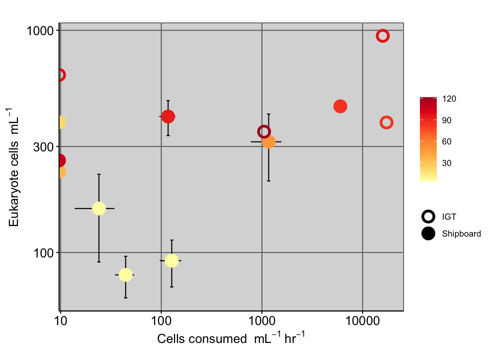
# euk_prok_flp_rate <-
(euk_plot + theme(legend.position = "none")) /
(prok_plot + theme(legend.position = "none")) + guide_area() +
patchwork::plot_layout(ncol = 1, guides = "collect") |
(grazing_min_plot + theme(legend.position = "none") + scale_y_continuous(limits = c(0, 0.02))) /
(grazing_rate + scale_y_log10(limits = c(1,1e4))) +
patchwork::plot_layout(ncol = 1, guides = "collect") + guide_area() | patchwork::plot_annotation(tag_levels = "a")Warning: Removed 2 rows containing missing values (`geom_point()`).Warning: Transformation introduced infinite values in continuous y-axis
Transformation introduced infinite values in continuous y-axis
Transformation introduced infinite values in continuous y-axis
Transformation introduced infinite values in continuous y-axisWarning: Removed 1 rows containing missing values (`geom_point()`).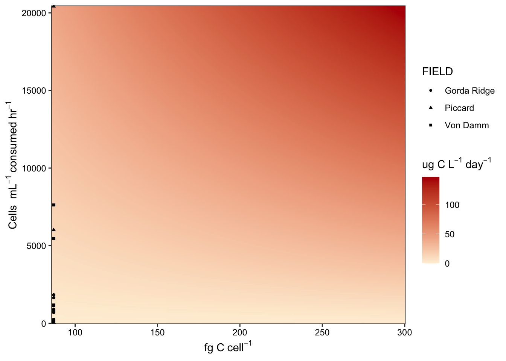
env_params <- read.delim(file = "input-data/table_wenv.txt", sep = " ")
# names(env_params)
plot_metadata <- env_params %>%
filter(SAMPLETYPE != "Incubation") %>%
filter(VENT != "Quakeplume") %>%
select(SITE, VENT, SAMPLETYPE, TEMP, DEPTH, EXP, starts_with("PROK_"), starts_with("EUK_"), starts_with("GRAZING_EFFECT_hr"), pH, Mg, H2., CH4, H2S)
# pivot_wider(names_from = "name", values_from = "value", values_fill = NA)
# head(plot_metadata)Compare microbial biomass, concentration, grazing and temperature across all sites.
# plot_metadata$EXP# View(plot_metadata)
euk_temp <- plot_metadata %>%
filter(!(is.na(EXP))) %>%
mutate(TEMP = as.numeric(TEMP)) %>%
ggplot(aes(x = GRAZING_EFFECT_hr, y = EUK_ml, fill = TEMP)) +
# geom_errorbar(aes(ymin = (log10(EUK_ml)-(EUK_sem)),ymax = (log10(EUK_ml)+(EUK_sem)))) +
# geom_errorbarh(aes(xmin = log10(GRAZING_EFFECT_hr_min),xmax = log10(GRAZING_EFFECT_hr_max))) +
geom_errorbar(aes(ymin = ((EUK_ml)-(EUK_sem)),ymax = ((EUK_ml)+(EUK_sem)))) +
geom_errorbarh(aes(xmin = (GRAZING_EFFECT_hr_min),xmax = (GRAZING_EFFECT_hr_max))) +
geom_point(aes(shape = EXP), color = "black", size = 4) +
scale_y_log10() +
scale_x_log10() +
scale_shape_manual(values = c(21, 24)) +
scale_fill_distiller(palette = "YlOrRd", direction=2, na.value = "grey50") +
theme_bw() +
theme(rect = element_rect(fill = "transparent"),
panel.background = element_rect(fill = "transparent"),
plot.background = element_rect(fill = "transparent", color = NA)) +
labs(y = "Euk cells per ml", x = "Grazing rate per hr")
euk_tempWarning: Transformation introduced infinite values in continuous x-axis
Transformation introduced infinite values in continuous x-axis
Transformation introduced infinite values in continuous x-axis
Transformation introduced infinite values in continuous x-axis
Transformation introduced infinite values in continuous x-axisWarning: Removed 3 rows containing missing values (`geom_errorbarh()`).
prok_temp <- plot_metadata %>%
filter(!is.na(EXP)) %>%
mutate(TEMP = as.numeric(TEMP)) %>%
ggplot(aes(x = GRAZING_EFFECT_hr, y = PROK_ml, fill = TEMP)) +
# geom_errorbar(aes(ymin = (log10(EUK_ml)-(EUK_sem)),ymax = (log10(EUK_ml)+(EUK_sem)))) +
# geom_errorbarh(aes(xmin = log10(GRAZING_EFFECT_hr_min),xmax = log10(GRAZING_EFFECT_hr_max))) +
geom_errorbar(aes(ymin = ((PROK_ml)-(PROK_sem)),ymax = ((PROK_ml)+(PROK_sem)))) +
geom_errorbarh(aes(xmin = (GRAZING_EFFECT_hr_min),xmax = (GRAZING_EFFECT_hr_max))) +
geom_point(aes(shape = EXP), color = "black", size = 4) +
scale_y_log10() +
scale_x_log10() +
scale_shape_manual(values = c(21, 24)) +
scale_fill_distiller(palette = "YlOrRd", direction=2, na.value = "grey50") +
theme_bw() +
theme(rect = element_rect(fill = "transparent"),
panel.background = element_rect(fill = "transparent"),
plot.background = element_rect(fill = "transparent", color = NA)) +
labs(y = "Microial prey cells per ml", x = "Grazing rate per hr")
prok_tempWarning: Transformation introduced infinite values in continuous x-axis
Transformation introduced infinite values in continuous x-axis
Transformation introduced infinite values in continuous x-axis
Transformation introduced infinite values in continuous x-axis
Transformation introduced infinite values in continuous x-axisWarning: Removed 3 rows containing missing values (`geom_errorbarh()`).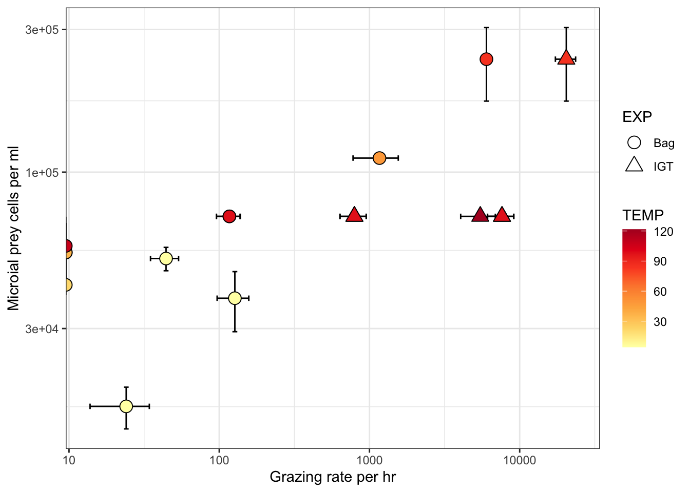
(euk_temp + labs(x = "") + theme(legend.position = "none")) + prok_temp + patchwork::plot_layout(ncol = 1) + patchwork::plot_annotation(tag_levels = "a")Warning: Transformation introduced infinite values in continuous x-axis
Transformation introduced infinite values in continuous x-axis
Transformation introduced infinite values in continuous x-axis
Transformation introduced infinite values in continuous x-axis
Transformation introduced infinite values in continuous x-axisWarning: Removed 3 rows containing missing values (`geom_errorbarh()`).Warning: Transformation introduced infinite values in continuous x-axis
Transformation introduced infinite values in continuous x-axis
Transformation introduced infinite values in continuous x-axis
Transformation introduced infinite values in continuous x-axis
Transformation introduced infinite values in continuous x-axisWarning: Removed 3 rows containing missing values (`geom_errorbarh()`).
Plot other environmental parameters
# head(plot_metadata)
plot_supp <- function(PARAMETER){
plot_metadata %>%
pivot_longer(cols = c(pH, Mg, H2., CH4, H2S), names_to = "ENV", values_to = "ENV_VALUE") %>%
mutate(ENV_NUM = as.numeric(ENV_VALUE)) %>%
filter(ENV == PARAMETER) %>%
ggplot(aes(x = GRAZING_EFFECT_hr, y = EUK_ml, fill = ENV_VALUE)) +
geom_errorbar(aes(ymin = ((EUK_ml)-(EUK_sem)),ymax = ((EUK_ml)+(EUK_sem)))) +
geom_errorbarh(aes(xmin = (GRAZING_EFFECT_hr_min),xmax = (GRAZING_EFFECT_hr_max))) +
geom_point(aes(shape = SITE), color = "black", size = 4) +
scale_y_log10() + scale_x_log10() +
scale_shape_manual(values = c(21, 23)) +
scale_fill_distiller(palette = "YlOrRd", direction=2, na.value = "grey50") +
theme_bw() +
theme(rect = element_rect(fill = "transparent"),
panel.background = element_rect(fill = "transparent"),
plot.background = element_rect(fill = "transparent", color = NA)) +
labs(y = "Euk cells per ml", x = "Grazing rate per hr",
title = PARAMETER)
}# pH, Mg, H2., CH4, H2S
plot_supp("pH") +
plot_supp("Mg") +
plot_supp("H2.") +
plot_supp("CH4") +
plot_supp("H2S") +
patchwork::plot_layout(ncol = 2) + patchwork::plot_annotation(tag_levels = "a") Warning: Transformation introduced infinite values in continuous x-axis
Transformation introduced infinite values in continuous x-axis
Transformation introduced infinite values in continuous x-axis
Transformation introduced infinite values in continuous x-axis
Transformation introduced infinite values in continuous x-axisWarning: Removed 7 rows containing missing values (`geom_errorbarh()`).Warning: Removed 4 rows containing missing values (`geom_point()`).Warning: Transformation introduced infinite values in continuous x-axis
Transformation introduced infinite values in continuous x-axis
Transformation introduced infinite values in continuous x-axis
Transformation introduced infinite values in continuous x-axis
Transformation introduced infinite values in continuous x-axisWarning: Removed 7 rows containing missing values (`geom_errorbarh()`).Warning: Removed 4 rows containing missing values (`geom_point()`).Warning: Transformation introduced infinite values in continuous x-axis
Transformation introduced infinite values in continuous x-axis
Transformation introduced infinite values in continuous x-axis
Transformation introduced infinite values in continuous x-axis
Transformation introduced infinite values in continuous x-axisWarning: Removed 7 rows containing missing values (`geom_errorbarh()`).Warning: Removed 4 rows containing missing values (`geom_point()`).Warning: Transformation introduced infinite values in continuous x-axis
Transformation introduced infinite values in continuous x-axis
Transformation introduced infinite values in continuous x-axis
Transformation introduced infinite values in continuous x-axis
Transformation introduced infinite values in continuous x-axisWarning: Removed 7 rows containing missing values (`geom_errorbarh()`).Warning: Removed 4 rows containing missing values (`geom_point()`).Warning: Transformation introduced infinite values in continuous x-axis
Transformation introduced infinite values in continuous x-axis
Transformation introduced infinite values in continuous x-axis
Transformation introduced infinite values in continuous x-axis
Transformation introduced infinite values in continuous x-axisWarning: Removed 7 rows containing missing values (`geom_errorbarh()`).Warning: Removed 4 rows containing missing values (`geom_point()`).
Import data from Gorda Ridge
gr <- read.delim("../../GordaRidgeCruise_2019/protist-gordaridge-2021/Grazing-at-GordaRidge-SKH-2021/data-input/Grazing-calc-wCarbon-results.txt")
temps <- read.delim("../../GordaRidgeCruise_2019/protist-gordaridge-2019-analysis/temperature-allvents.txt")
mcr_graze <- read.delim("output-data/table-wcalc.txt")all_vents <- mcr_graze %>%
type.convert(as.is = TRUE) %>%
select(FIELD, NAME, SAMPLE, EXP, PROK_ml, EUK_ml, GRAZING_EFFECT_hr, GRAZING_EFFECT_hr_min, GRAZING_EFFECT_hr_max, BAC_TURNOVER_PERC) %>%
rbind(gr %>%
add_column(FIELD = "Gorda Ridge") %>%
add_column(EUK_ml = NA) %>%
separate(SAMPLE, c("SAMPLE", "NAME"), sep = "-") %>%
select(FIELD, NAME, SAMPLE, EXP = Bottle, PROK_ml = prok_avg, EUK_ml, GRAZING_EFFECT_hr = GrazingRate_hr, GRAZING_EFFECT_hr_min = GrazingRate_hr_min, GRAZING_EFFECT_hr_max = GrazingRate_hr_max, BAC_TURNOVER_PERC = Prok_turnover)) %>%
left_join(temps) %>%
mutate(SAMPLE_TYPE = case_when(
grepl("BSW", NAME) ~ "Background",
grepl("Near vent BW", NAME) ~ "Background",
grepl("Background", NAME) ~ "Background",
grepl("Plume", NAME) ~ "Background",
TRUE ~ "Vent"
))Joining with `by = join_by(NAME, SAMPLE)`Warning in left_join(., temps): Each row in `x` is expected to match at most 1 row in `y`.
ℹ Row 1 of `x` matches multiple rows.
ℹ If multiple matches are expected, set `multiple = "all"` to silence this
warning.# View(all_vents)
# all_vents
# write_delim(all_vents, file = "output-data/grazing-cellcounts-GR_MCR.txt", delim = "\t")allrates <- all_vents %>%
select(FIELD, NAME, SAMPLE, EXP, SAMPLE_TYPE, starts_with("GRAZING_EFFECT_")) %>%
distinct() %>%
ggplot(aes(y = GRAZING_EFFECT_hr, x = NAME, fill = FIELD, shape = EXP)) +
geom_errorbar(aes(ymax = (GRAZING_EFFECT_hr_max), ymin = (GRAZING_EFFECT_hr_min)),
width = 0.2, position = position_dodge(width = 0.4)) +
geom_point(stat = "identity", aes(fill = FIELD, shape = EXP),
color = "black", size = 3, position = position_dodge(width = 0.4)) +
scale_shape_manual(values = c(21, 21, 24)) +
scale_fill_manual(values = c("#de2d26", "#1c9099", "#addd8e")) +
facet_grid(. ~ SAMPLE_TYPE, scales = "free", space = "free") +
theme_minimal() +
theme(panel.grid.major = element_line(), panel.grid.minor = element_blank(),
panel.background = element_blank(),
axis.line = element_line(colour = "black"),
axis.text.x = element_text(color="black", size = 11,
angle = 45, hjust = 1, vjust = 1),
axis.text.y = element_text(color="black", size = 11),
axis.title =element_text(color="black", size = 11),
axis.ticks = element_line(),
legend.title = element_blank(),
strip.placement = "outside",
strip.text.y = element_text(color="black", size = 11),
strip.text.x = element_blank())+
guides(fill = guide_legend(override.aes = list(shape = c(21))),
shape = guide_legend(override.aes = list(fill = "black"))) +
labs(x = "", y = bquote("cells"~ml^-1~hr^-1))Add Gorda Ridge comparison to supplementary?
allrates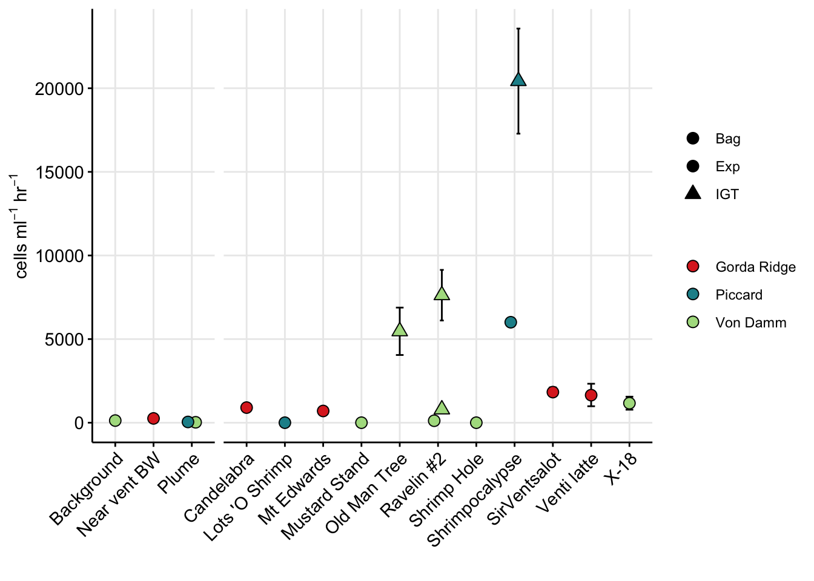
allrates + scale_y_log10()Warning: Transformation introduced infinite values in continuous y-axis
Transformation introduced infinite values in continuous y-axis
Transformation introduced infinite values in continuous y-axis
Transformation introduced infinite values in continuous y-axis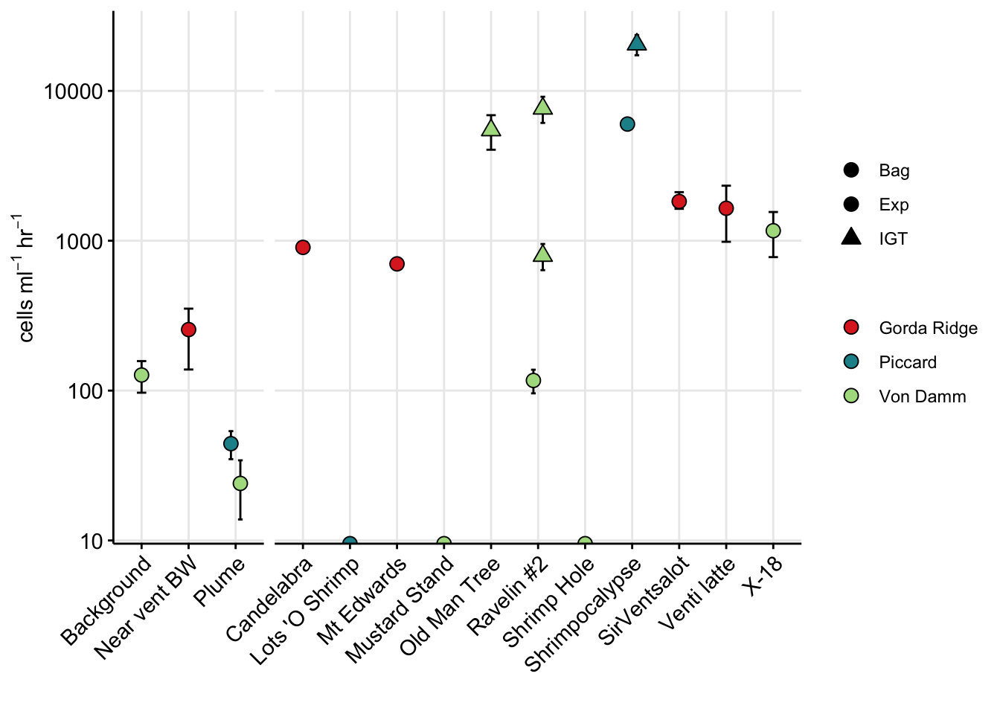
# allrates + scale_y_continuous(limits = c(0,1000))Repeat grazing rate plot, but removed undetectable
# unique(all_vents$GRAZING_EFFECT_hr)
allrates_nonzero <- all_vents %>%
filter(GRAZING_EFFECT_hr > 0) %>%
select(FIELD, NAME, SAMPLE, EXP, SAMPLE_TYPE, starts_with("GRAZING_EFFECT_")) %>%
distinct() %>%
ggplot(aes(y = GRAZING_EFFECT_hr, x = NAME, fill = FIELD, shape = SAMPLE_TYPE)) +
geom_errorbar(aes(ymax = (GRAZING_EFFECT_hr_max), ymin = (GRAZING_EFFECT_hr_min)),
width = 0.2, position = position_dodge(width = 0.4)) +
geom_point(stat = "identity", aes(fill = FIELD, shape = SAMPLE_TYPE),
color = "black", size = 3, position = position_dodge(width = 0.4)) +
scale_shape_manual(values = c(21, 24)) +
scale_fill_manual(values = c("#de2d26", "#1c9099", "#addd8e")) +
facet_grid(. ~ SAMPLE_TYPE, scales = "free", space = "free") +
theme_minimal() +
theme(panel.grid.major = element_line(), panel.grid.minor = element_blank(),
panel.background = element_blank(),
axis.line = element_line(colour = "black"),
axis.text.x = element_text(color="black", size = 11,
angle = 45, hjust = 1, vjust = 1),
axis.text.y = element_text(color="black", size = 11),
axis.title =element_text(color="black", size = 11),
axis.ticks = element_line(),
legend.title = element_blank(),
strip.placement = "outside",
strip.text.y = element_text(color="black", size = 11),
strip.text.x = element_blank())+
guides(fill = guide_legend(override.aes = list(shape = c(21))),
shape = guide_legend(override.aes = list(fill = "black"))) +
labs(x = "", y = bquote("cells"~ml^-1~hr^-1))# svg("compare-all-rates-color-nonZero.svg", h = 4, w = 7)
allrates_nonzero + scale_y_log10()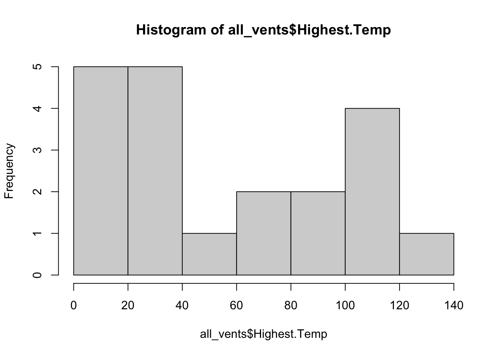
# dev.off()Panel plot, cells per ml and grazing rate
# svg("plot-gcellconc-grazing-log.svg", h = 10, w = 6)
# grazing_rate + scale_y_log10(limits = c(1e-1,1e5), breaks=10^(0:7))
plot_grid(conc_rate_plot_mcr(biomass_rate_plot, "PROK_ml", "PROK_sem"),
conc_rate_plot_mcr(biomass_rate_plot, "EUK_ml", "EUK_sem"),
allrates_nonzero + scale_y_log10(), ncol = 1)
# dev.off()# svg("cells-per-ml.svg", h = 7, w = 7)
conc_rate_plot_mcr(biomass_rate_plot, "EUK_ml", "EUK_sem") + conc_rate_plot_mcr(biomass_rate_plot, "PROK_ml", "PROK_sem") + patchwork::plot_layout(ncol = 1) + patchwork::plot_annotation(tag_levels = "a") 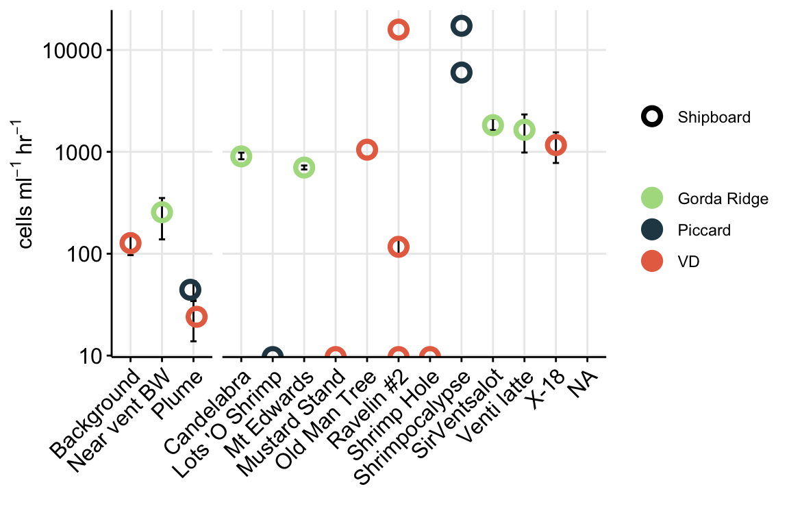
# dev.off()TO DO: find a tidy model tutorial to work with.
Use tidymodels to perform linear regression.
library(broom)
# ?pivot_longer
# e IGT
head(all_vents) FIELD NAME SAMPLE EXP PROK_ml EUK_ml
1 Von Damm Background VD-BSW Bag 37889.62 91.83773
2 Von Damm Background VD-BSW Bag 37889.62 91.83773
3 Von Damm Background VD-BSW Bag 37889.62 91.83773
4 Von Damm Plume VD-Plume Bag 16478.31 157.77468
5 Piccard Plume Piccard-Plume Bag 51429.13 79.30115
6 Piccard Shrimpocalypse Piccard-Shrimpocalypse Bag 238585.68 454.81543
GRAZING_EFFECT_hr GRAZING_EFFECT_hr_min GRAZING_EFFECT_hr_max
1 127.06388 96.81058 157.31719
2 127.06388 96.81058 157.31719
3 127.06388 96.81058 157.31719
4 24.02685 13.80868 34.24501
5 44.25930 34.87229 53.64630
6 6006.74315 NA NA
BAC_TURNOVER_PERC Highest.Temp pH Mg H2S H2 CH4 SAMPLE_TYPE
1 8.048465 4.181 NA NA NA NA NA Background
2 8.048465 4.100 NA NA NA NA NA Background
3 8.048465 4.000 NA NA NA NA NA Background
4 3.499414 4.230 NA NA NA NA NA Background
5 2.065411 4.722 NA NA NA NA NA Background
6 60.423507 90.000 NA NA NA NA NA Ventregression_input <- all_vents %>%
# filter(!(SAMPLE == "Piccard-Shrimpocalypse" & EXP == "IGT")) %>%
filter(!is.na(Highest.Temp)) %>%
select(FIELD, NAME, SAMPLE, SAMPLE_TYPE, EXP, PROK_ml, EUK_ml, GRAZING_EFFECT_hr, BAC_TURNOVER_PERC, TEMP = Highest.Temp) %>%
mutate(PROK_EUK_RATIO = (PROK_ml/EUK_ml)) %>%
pivot_longer(cols = c(GRAZING_EFFECT_hr, BAC_TURNOVER_PERC), names_to = "RATE", values_to = "RATE_VALUE") %>%
pivot_longer(cols = c(PROK_ml, EUK_ml, PROK_EUK_RATIO, TEMP), names_to = "PARAMS", values_to = "PARAMS_VALUE") %>%
data.frame
regression_tmp <- regression_input %>%
# Set up the linear regression
group_by(RATE, PARAMS) %>%
nest(-RATE, -PARAMS) %>%
mutate(lm_fit = map(data, ~lm(RATE_VALUE ~ PARAMS_VALUE, data = .)),
tidied = map(lm_fit, tidy)) %>%
unnest(tidied) %>%
select(RATE, PARAMS,
term, estimate) %>%
pivot_wider(names_from = term, values_from = estimate) %>%
select(everything(), SLOPE = PARAMS_VALUE) %>%
data.frameWarning: Supplying `...` without names was deprecated in tidyr 1.0.0.
ℹ Please specify a name for each selection.
ℹ Did you want `data = c(-RATE, -PARAMS)`?regression_results <- regression_input %>%
group_by(RATE, PARAMS) %>%
nest(-RATE, -PARAMS) %>%
mutate(lm_fit = map(data, ~lm(RATE_VALUE ~ PARAMS_VALUE, data = .)),
glanced = map(lm_fit, glance)) %>%
unnest(glanced) %>%
select(RATE, PARAMS, r.squared, adj.r.squared) %>%
right_join(regression_tmp) %>%
right_join(regression_input) %>%
data.frameWarning: Supplying `...` without names was deprecated in tidyr 1.0.0.
ℹ Please specify a name for each selection.
ℹ Did you want `data = c(-RATE, -PARAMS)`?Joining with `by = join_by(RATE, PARAMS)`
Joining with `by = join_by(RATE, PARAMS)`Warning in right_join(., regression_input): Each row in `x` is expected to match at most 1 row in `y`.
ℹ Row 1 of `x` matches multiple rows.
ℹ If multiple matches are expected, set `multiple = "all"` to silence this
warning.# View(regression_results)Plot results from regression
regression_results %>%
# filter(RATE == "GRAZING_EFFECT_hr") %>%
# filter(PARAMS == "TEMP") %>%
ggplot(aes(x = PARAMS_VALUE, y = RATE_VALUE, shape = SAMPLE_TYPE, fill = FIELD)) +
geom_abline(aes(slope = SLOPE, intercept = `X.Intercept.`), color = "black", linetype = "dashed", size = 0.5) +
geom_point(color = "black", aes(shape = SAMPLE_TYPE, fill = FIELD)) +
scale_shape_manual(values = c(21, 24)) +
scale_fill_manual(values = c("#476AA7","#7299CE", "#A2937A")) +
facet_wrap(PARAMS ~ RATE + round(r.squared, 3), scales = "free", ncol = 5,
strip.position = "bottom", labeller = label_parsed) +
theme_bw() +
theme(
strip.background = element_blank(),
strip.placement = "outside",
strip.text = element_text(color = "black", size = 10),
axis.title = element_text(color = "black", size = 10),
legend.title = element_blank()) # +Warning: Removed 16 rows containing missing values (`geom_point()`).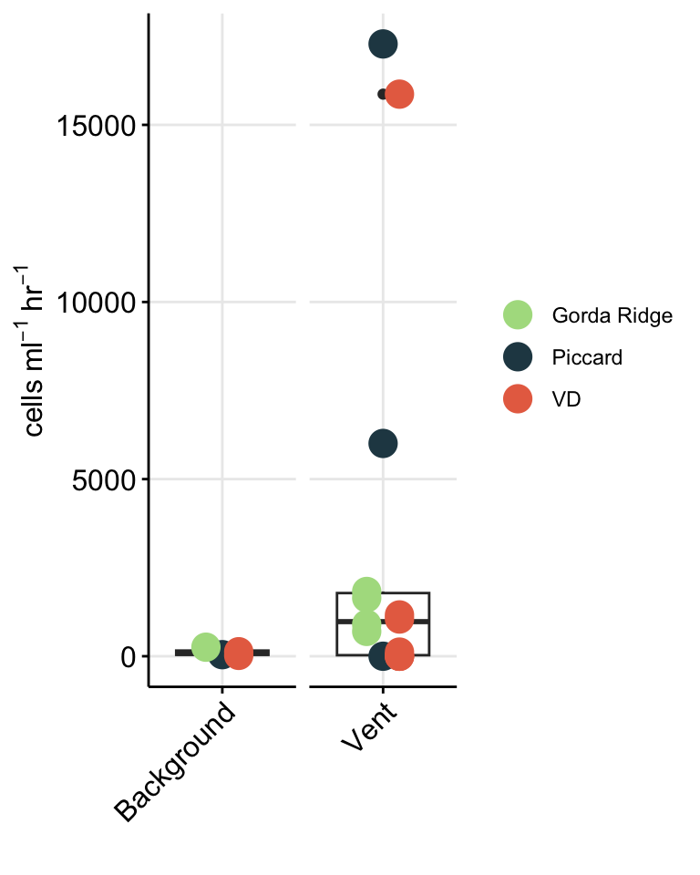
labs(y = bquote("Cells "~mL^-1 ~hr^-1), x = "Temperature (C)")$y
"Cells " ~ mL^-1 ~ hr^-1
$x
[1] "Temperature (C)"
attr(,"class")
[1] "labels"repeat MCR only
library(broom)
# ?pivot_longer
# unique(all_vents$FIELD)
regression_input <- all_vents %>%
filter(!(FIELD == "Gorda Ridge")) %>%
# filter(!(SAMPLE == "Piccard-Shrimpocalypse" & EXP == "IGT")) %>%
filter(!is.na(Highest.Temp)) %>%
select(FIELD, NAME, SAMPLE, SAMPLE_TYPE, EXP, PROK_ml, EUK_ml, GRAZING_EFFECT_hr, BAC_TURNOVER_PERC, TEMP = Highest.Temp) %>%
mutate(PROK_EUK_RATIO = (PROK_ml/EUK_ml)) %>%
pivot_longer(cols = c(GRAZING_EFFECT_hr, BAC_TURNOVER_PERC), names_to = "RATE", values_to = "RATE_VALUE") %>%
pivot_longer(cols = c(PROK_ml, EUK_ml, PROK_EUK_RATIO, TEMP), names_to = "PARAMS", values_to = "PARAMS_VALUE") %>%
data.frame
regression_tmp <- regression_input %>%
# Set up the linear regression
group_by(RATE, PARAMS) %>%
nest(-RATE, -PARAMS) %>%
mutate(lm_fit = map(data, ~lm(RATE_VALUE ~ PARAMS_VALUE, data = .)),
tidied = map(lm_fit, tidy)) %>%
unnest(tidied) %>%
select(RATE, PARAMS,
term, estimate) %>%
pivot_wider(names_from = term, values_from = estimate) %>%
select(everything(), SLOPE = PARAMS_VALUE) %>%
data.frameWarning: Supplying `...` without names was deprecated in tidyr 1.0.0.
ℹ Please specify a name for each selection.
ℹ Did you want `data = c(-RATE, -PARAMS)`?regression_results_mcr <- regression_input %>%
group_by(RATE, PARAMS) %>%
nest(-RATE, -PARAMS) %>%
mutate(lm_fit = map(data, ~lm(RATE_VALUE ~ PARAMS_VALUE, data = .)),
glanced = map(lm_fit, glance)) %>%
unnest(glanced) %>%
select(RATE, PARAMS, r.squared, adj.r.squared) %>%
right_join(regression_tmp) %>%
right_join(regression_input) %>%
data.frameWarning: Supplying `...` without names was deprecated in tidyr 1.0.0.
ℹ Please specify a name for each selection.
ℹ Did you want `data = c(-RATE, -PARAMS)`?Joining with `by = join_by(RATE, PARAMS)`
Joining with `by = join_by(RATE, PARAMS)`Warning in right_join(., regression_input): Each row in `x` is expected to match at most 1 row in `y`.
ℹ Row 1 of `x` matches multiple rows.
ℹ If multiple matches are expected, set `multiple = "all"` to silence this
warning.# View(regression_results_mcr)Plot results from regression
regression_results_mcr %>%
# filter(RATE == "GRAZING_EFFECT_hr") %>%
# filter(PARAMS == "TEMP") %>%
ggplot(aes(x = PARAMS_VALUE, y = RATE_VALUE, shape = SAMPLE_TYPE, fill = FIELD)) +
geom_abline(aes(slope = SLOPE, intercept = `X.Intercept.`), color = "black", linetype = "dashed", size = 0.5) +
geom_point(color = "black", aes(shape = SAMPLE_TYPE, fill = FIELD)) +
scale_shape_manual(values = c(21, 24)) +
scale_fill_manual(values = c("#476AA7","#7299CE", "#A2937A")) +
facet_wrap(PARAMS ~ RATE + round(r.squared, 3), scales = "free", ncol = 5,
strip.position = "bottom", labeller = label_parsed) +
theme_bw() +
theme(
strip.background = element_blank(),
strip.placement = "outside",
strip.text = element_text(color = "black", size = 10),
axis.title = element_text(color = "black", size = 10),
legend.title = element_blank()) # +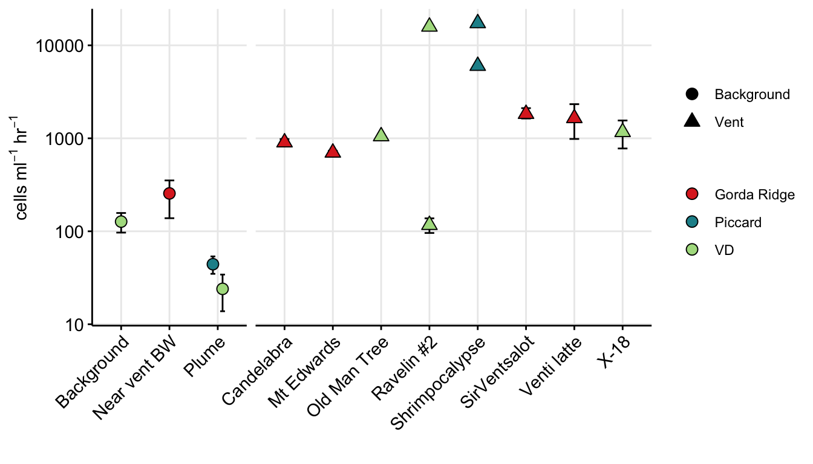
# labs(y = bquote("Cells "~mL^-1 ~hr^-1), x = "Temperature (C)")Repeat with only vent sites & remove undetected grazing.
# head(all_vents)
# range(all_vents$GRAZING_EFFECT_hr)library(broom)
# ?pivot_longer
# unique(all_vents$FIELD)
regression_input <- all_vents %>%
filter(!(FIELD == "Gorda Ridge")) %>%
filter(!(NAME == "Background")) %>% filter(!(NAME == "Plume")) %>%
filter(GRAZING_EFFECT_hr > 0) %>%
# filter(!(SAMPLE == "Piccard-Shrimpocalypse" & EXP == "IGT")) %>%
filter(!is.na(Highest.Temp)) %>%
select(FIELD, NAME, SAMPLE, SAMPLE_TYPE, EXP, PROK_ml, EUK_ml, GRAZING_EFFECT_hr, BAC_TURNOVER_PERC, TEMP = Highest.Temp) %>%
mutate(PROK_EUK_RATIO = (PROK_ml/EUK_ml)) %>%
pivot_longer(cols = c(GRAZING_EFFECT_hr, BAC_TURNOVER_PERC), names_to = "RATE", values_to = "RATE_VALUE") %>%
pivot_longer(cols = c(PROK_ml, EUK_ml, PROK_EUK_RATIO, TEMP), names_to = "PARAMS", values_to = "PARAMS_VALUE") %>%
data.frame
regression_tmp <- regression_input %>%
# Set up the linear regression
group_by(RATE, PARAMS) %>%
nest(-RATE, -PARAMS) %>%
mutate(lm_fit = map(data, ~lm(RATE_VALUE ~ PARAMS_VALUE, data = .)),
tidied = map(lm_fit, tidy)) %>%
unnest(tidied) %>%
select(RATE, PARAMS,
term, estimate) %>%
pivot_wider(names_from = term, values_from = estimate) %>%
select(everything(), SLOPE = PARAMS_VALUE) %>%
data.frameWarning: Supplying `...` without names was deprecated in tidyr 1.0.0.
ℹ Please specify a name for each selection.
ℹ Did you want `data = c(-RATE, -PARAMS)`?regression_results_vent <- regression_input %>%
group_by(RATE, PARAMS) %>%
nest(-RATE, -PARAMS) %>%
mutate(lm_fit = map(data, ~lm(RATE_VALUE ~ PARAMS_VALUE, data = .)),
glanced = map(lm_fit, glance)) %>%
unnest(glanced) %>%
select(RATE, PARAMS, r.squared, adj.r.squared) %>%
right_join(regression_tmp) %>%
right_join(regression_input) %>%
data.frameWarning: Supplying `...` without names was deprecated in tidyr 1.0.0.
ℹ Please specify a name for each selection.
ℹ Did you want `data = c(-RATE, -PARAMS)`?Joining with `by = join_by(RATE, PARAMS)`
Joining with `by = join_by(RATE, PARAMS)`Warning in right_join(., regression_input): Each row in `x` is expected to match at most 1 row in `y`.
ℹ Row 1 of `x` matches multiple rows.
ℹ If multiple matches are expected, set `multiple = "all"` to silence this
warning.# View(regression_results_vent)Plot results from regression
regression_results_vent %>%
# filter(RATE == "GRAZING_EFFECT_hr") %>%
# filter(PARAMS == "TEMP") %>%
ggplot(aes(x = PARAMS_VALUE, y = RATE_VALUE, shape = SAMPLE_TYPE, fill = FIELD)) +
geom_abline(aes(slope = SLOPE, intercept = `X.Intercept.`), color = "black", linetype = "dashed", size = 0.5) +
geom_point(color = "black", aes(shape = SAMPLE_TYPE, fill = FIELD)) +
scale_shape_manual(values = c(21, 24)) +
scale_fill_manual(values = c("#476AA7","#7299CE", "#A2937A")) +
facet_wrap(PARAMS ~ RATE + round(r.squared, 3), scales = "free", ncol = 5,
strip.position = "bottom", labeller = label_parsed) +
theme_bw() +
theme(
strip.background = element_blank(),
strip.placement = "outside",
strip.text = element_text(color = "black", size = 10),
axis.title = element_text(color = "black", size = 10),
legend.title = element_blank()) # +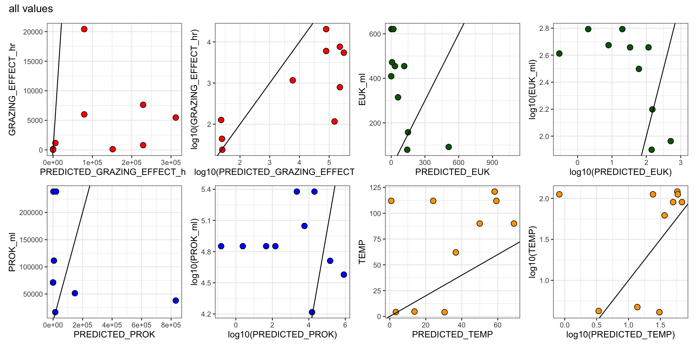
# labs(y = bquote("Cells "~mL^-1 ~hr^-1), x = "Temperature (C)")Regression thoughts: Unremarkable r squared values (numbers at the bottom of each plot). Some trends, mainly associated with temperature.
Bacterial abundance typically increases with temperature (White et al. 1991) - which could ultimately increase bacterial ingestion rate and total protist cells. But at this type of niche environment, I hypothesize that there is a trend but threshold of not detected grazing under certain conditions.
If euk per ml numbers are high, but we see lower grazing rates, could this be competition? Curds and Cockburn 1968. Additionally with temperature… in Vaque et al GRF (specific grazing rates of flagellates) increased with temperature, but overall grazing rate reached a plateau at 18C. Does this mean that temperature will be an important factor depending on the community diversity?
head(all_vents) FIELD NAME SAMPLE EXP PROK_ml EUK_ml
1 Von Damm Background VD-BSW Bag 37889.62 91.83773
2 Von Damm Background VD-BSW Bag 37889.62 91.83773
3 Von Damm Background VD-BSW Bag 37889.62 91.83773
4 Von Damm Plume VD-Plume Bag 16478.31 157.77468
5 Piccard Plume Piccard-Plume Bag 51429.13 79.30115
6 Piccard Shrimpocalypse Piccard-Shrimpocalypse Bag 238585.68 454.81543
GRAZING_EFFECT_hr GRAZING_EFFECT_hr_min GRAZING_EFFECT_hr_max
1 127.06388 96.81058 157.31719
2 127.06388 96.81058 157.31719
3 127.06388 96.81058 157.31719
4 24.02685 13.80868 34.24501
5 44.25930 34.87229 53.64630
6 6006.74315 NA NA
BAC_TURNOVER_PERC Highest.Temp pH Mg H2S H2 CH4 SAMPLE_TYPE
1 8.048465 4.181 NA NA NA NA NA Background
2 8.048465 4.100 NA NA NA NA NA Background
3 8.048465 4.000 NA NA NA NA NA Background
4 3.499414 4.230 NA NA NA NA NA Background
5 2.065411 4.722 NA NA NA NA NA Background
6 60.423507 90.000 NA NA NA NA NA Ventallvent_data <- all_vents %>%
mutate(PROK_EUK_RATIO = (PROK_ml/EUK_ml))
# head(allvent_data)Function to plot results by two parameters.
two_params <- function(df, x_var, y_var, x_title, y_title){
X_VAR <- enquo(x_var)
Y_VAR <- enquo(y_var)
df %>%
select(FIELD, NAME, SAMPLE, EXP, X = !!X_VAR, Y = !!Y_VAR) %>%
distinct() %>%
ggplot(aes(x = X, y = Y)) +
geom_point(size = 3, shape = 21, color = "black", aes(fill = FIELD)) +
geom_abline(slope = 1, intercept = 0) +
theme_minimal() +
labs(x = x_title, y = y_title)
}two_params(allvent_data, `PROK_EUK_RATIO`, `Highest.Temp`, "Prok:Euk ratio", "Temperature (max)")Warning: Removed 5 rows containing missing values (`geom_point()`).
names(allvent_data) [1] "FIELD" "NAME" "SAMPLE"
[4] "EXP" "PROK_ml" "EUK_ml"
[7] "GRAZING_EFFECT_hr" "GRAZING_EFFECT_hr_min" "GRAZING_EFFECT_hr_max"
[10] "BAC_TURNOVER_PERC" "Highest.Temp" "pH"
[13] "Mg" "H2S" "H2"
[16] "CH4" "SAMPLE_TYPE" "PROK_EUK_RATIO" # two_params(allvent_data, ugC_L_perday, `Highest.Temp`, "ugC_L_perday", "Temperature (max)")
# two_params(allvent_data, ugC_L_perday, EUK_ml, "ugC_L_perday", "Euk cells per ml") + scale_y_log10()
# two_params(allvent_data, EUK_ml, PROK_ml, "Euk", "Prok") + scale_y_log10() + scale_x_log10()# head(all_vents)
# GRAZING_EFFECT_hr = "Cells~mL^{-1}~hr^{-1}"If we assume that carbon content per prey cell is between 86 - 300 fgC per cell. What does the amount consumed look like?
# Create a new data frame
# carbon_density <- crossing(fgC_cell = seq(86, 300, by = 1),
# GRAZING_EFFECT_hr = seq(min(all_vents$GRAZING_EFFECT_hr),
# max(all_vents$GRAZING_EFFECT_hr),
# length.out = 215)) %>%
# mutate(fgC_ml_perday = ((GRAZING_EFFECT_hr*24) * fgC_cell),
# ugC_L_perday = (fgC_ml_perday * (1e-09) * 1000)
# ) %>%
# data.frame
#
# # unique(all_vents$GRAZING_EFFECT_hr)
#
# samples_lines <- select(all_vents, GRAZING_EFFECT_hr, FIELD) %>%
# distinct() %>%
# crossing(fgC_cell = seq(86, 300, by = 20)) %>%
# mutate(fgC_ml_perday = ((GRAZING_EFFECT_hr*24) * fgC_cell),
# ugC_L_perday = (fgC_ml_perday * (1e-09) * 1000)
# )# ggplot(carbon_density, aes(x = fgC_cell, y = GRAZING_EFFECT_hr)) +
# geom_raster(aes(fill = ugC_L_perday)) +
# scale_fill_gradientn(colors = c("#fef0d9", "#b30000"), name = bquote("ug C"~L^-1 ~day^-1)) +
# # scale_fill_discrete(name = "New Legend Title")
# scale_y_continuous(expand = c(0,0)) +
# scale_x_continuous(expand = c(0,0)) +
# theme_bw() +
# theme(axis.text = element_text(color = "black"),
# rect = element_rect(fill = "transparent"),
# panel.background = element_rect(fill = "transparent"),
# plot.background = element_rect(fill = "transparent", color = NA)) +
# labs(y = bquote("Cells "~mL^-1 ~consumed ~hr^-1), x = bquote("fg C"~cell^-1)) +
# geom_point(data = samples_lines,
# aes(x = 87,
# y = GRAZING_EFFECT_hr, shape = FIELD), size = 1)Eukaryote biomass comparison with measured vs. literature
# Repeated in ASV code right now!
# plot_metadata <- env_params %>%
# filter(SAMPLETYPE != "Incubation") %>%
# filter(VENT != "Quakeplume") %>%
# select(SITE, VENT, SAMPLETYPE, TEMP, DEPTH, starts_with("PROK_"), starts_with("EUK_"), starts_with("GRAZING_EFFECT_hr"))# head(plot_metadata)
# plot_metadata %>%
# filter(!is.na(Euk_biomass_Hu)) %>%
# mutate(Euk_biomass_Hu_fg = Euk_biomass_Hu * 1000000000,
# Euk_biomass_lit_fg = Euk_biomass_lit * 1000000000) %>%
# ggplot(aes(y = VENT)) +
# geom_point(aes(x = Euk_biomass_Hu_fg), color = "black", fill = "darkgreen", shape = 21, size = 4) +
# geom_point(aes(x = Euk_biomass_lit), color = "black", fill = "lightgreen", shape = 21, size = 4) +
# scale_x_log10(labels = function(x) format(x, scientific = TRUE)) +
# theme_minimal() +
# theme(axis.text = element_text(color = "black")) +
# facet_grid(SAMPLETYPE ~ ., space = "free", scales = "free") +
# labs(x = "fg C of eukaryote population", y = "")Best model to estimate community grazing rate in Vaque et al. considered FLP uptake and similar experiments (in contrast to disappearance experiments).
From Vaque et al. 1994 paper equation (1):
See Figure 6
log(GT) = -3.21 + 0.99 log (HNF) + 0.028 (T) + 0.55 log(BAC)
GT = grazing rate (cells ml-1 hr-1) HNF = heterotrophic nanoflagellates (cells ml-1) T = temperature (C) BAC = prokaryote abundance (cells ml-1)
Start with non-zero grazing rate values, etc. Where… GT == Grazing effect hr HNF == Euk_ml BAC == PROK_ml T == highest temp
We only have these for MCR data.. can include GR for the “predicting euk_ml”
Function to use above formula and estimate
est_predicted <- function(df, TITLE){
df_out <- df %>%
select(FIELD, NAME, SAMPLE, EXP, PROK_ml, EUK_ml, GRAZING_EFFECT_hr, Highest.Temp) %>%
group_by(FIELD, NAME, SAMPLE, EXP, PROK_ml, EUK_ml, GRAZING_EFFECT_hr) %>%
summarise(TEMP = mean(Highest.Temp)) %>%
distinct() %>%
mutate(PREDICTED_TEMP = (((log10(GRAZING_EFFECT_hr)) + 3.21 - (0.99*log10(EUK_ml)) - (0.55*log10(PROK_ml))) / 0.028),
PREDICTED_GRAZING_EFFECT_hr = (10^(-3.21 + (0.99*log10(EUK_ml)) + (0.028*TEMP) + (0.55*(log10(PROK_ml))))),
PREDICTED_EUK = (10^(((log10(GRAZING_EFFECT_hr)) + 3.21 - (0.55*log10(PROK_ml)) - (0.028*TEMP))/0.99)),
PREDICTED_PROK = (10^(((log10(GRAZING_EFFECT_hr)) + 3.21 - (0.99*log10(EUK_ml)) - (0.028*TEMP))/0.55)))
# Plots
df_out %>%
ggplot(aes(x = PREDICTED_GRAZING_EFFECT_hr, y = GRAZING_EFFECT_hr)) +
geom_point(size = 3, color = "black", fill = "red", shape = 21) + theme_bw() + geom_abline(slope = 1, intercept = 0) +
df_out %>%
ggplot(aes(x = log10(PREDICTED_GRAZING_EFFECT_hr), y = log10(GRAZING_EFFECT_hr))) +
geom_point(size = 3, color = "black", fill = "red", shape = 21) + theme_bw() + geom_abline(slope = 1, intercept = 0) +
df_out %>%
ggplot(aes(x = PREDICTED_EUK, y = EUK_ml)) +
geom_point(size = 3, color = "black", fill = "darkgreen", shape = 21) + theme_bw() + geom_abline(slope = 1, intercept = 0) +
df_out %>%
ggplot(aes(x = log10(PREDICTED_EUK), y = log10(EUK_ml))) +
geom_point(size = 3, color = "black", fill = "darkgreen", shape = 21) + theme_bw() + geom_abline(slope = 1, intercept = 0) +
df_out %>%
ggplot(aes(x = PREDICTED_PROK, y = PROK_ml)) +
geom_point(size = 3, color = "black", fill = "blue", shape = 21) + theme_bw() + geom_abline(slope = 1, intercept = 0) +
df_out %>%
ggplot(aes(x = log10(PREDICTED_PROK), y = log10(PROK_ml))) +
geom_point(size = 3, color = "black", fill = "blue", shape = 21) + theme_bw() + geom_abline(slope = 1, intercept = 0) +
df_out %>%
ggplot(aes(x = PREDICTED_TEMP, y = TEMP)) +
geom_point(size = 3, color = "black", fill = "orange", shape = 21) + theme_bw() + geom_abline(slope = 1, intercept = 0) +
df_out %>%
ggplot(aes(x = log10(PREDICTED_TEMP), y = log10(TEMP))) +
geom_point(size = 3, color = "black", fill = "orange", shape = 21) + theme_bw() + geom_abline(slope = 1, intercept = 0) +
patchwork::plot_layout(ncol = 4) + plot_annotation(title = TITLE)
# return(df_out)
}
# head(all_vents)
# unique(all_vents$NAME)
# range(all_vents$Highest.Temp)est_predicted(all_vents, "all values")`summarise()` has grouped output by 'FIELD', 'NAME', 'SAMPLE', 'EXP',
'PROK_ml', 'EUK_ml'. You can override using the `.groups` argument.Warning: Removed 5 rows containing missing values (`geom_point()`).
Removed 5 rows containing missing values (`geom_point()`).
Removed 5 rows containing missing values (`geom_point()`).
Removed 5 rows containing missing values (`geom_point()`).
Removed 5 rows containing missing values (`geom_point()`).
Removed 5 rows containing missing values (`geom_point()`).
Removed 5 rows containing missing values (`geom_point()`).Warning in FUN(X[[i]], ...): NaNs produced
Warning in FUN(X[[i]], ...): NaNs producedWarning: Removed 8 rows containing missing values (`geom_point()`).
mcr <- c("Von Damm", "Piccard")
bsw <- c("Backgound", "BSW", "Plume", "Near vent BW")
# est_predicted(all_vents %>% filter(FIELD %in% mcr), "Mid-Cayman Rise only")
est_predicted(all_vents %>% filter(FIELD %in% mcr) %>% filter(GRAZING_EFFECT_hr > 0), "Mid-Cayman Rise only, no undetected")`summarise()` has grouped output by 'FIELD', 'NAME', 'SAMPLE', 'EXP',
'PROK_ml', 'EUK_ml'. You can override using the `.groups` argument.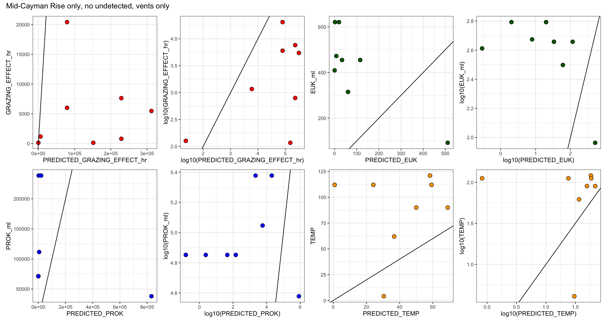
# est_predicted(all_vents %>% filter(FIELD %in% mcr) %>% filter(GRAZING_EFFECT_hr > 0) %>% filter(!(NAME %in% bsw)), "Mid-Cayman Rise only, no undetected, vents only")est_predicted(all_vents %>% filter(GRAZING_EFFECT_hr > 0), "All samples where grazing was detected")`summarise()` has grouped output by 'FIELD', 'NAME', 'SAMPLE', 'EXP',
'PROK_ml', 'EUK_ml'. You can override using the `.groups` argument.Warning: Removed 5 rows containing missing values (`geom_point()`).
Removed 5 rows containing missing values (`geom_point()`).
Removed 5 rows containing missing values (`geom_point()`).
Removed 5 rows containing missing values (`geom_point()`).
Removed 5 rows containing missing values (`geom_point()`).
Removed 5 rows containing missing values (`geom_point()`).
Removed 5 rows containing missing values (`geom_point()`).
Removed 5 rows containing missing values (`geom_point()`).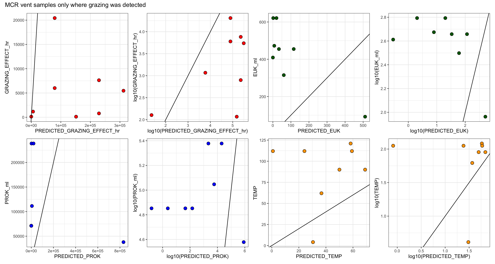
# View(all_vents)
# est_predicted(all_vents %>% filter(!(NAME %in% bsw)), "Vent samples only")
est_predicted(all_vents %>% filter(!(NAME %in% bsw)) %>% filter(GRAZING_EFFECT_hr > 0), "Vent samples only where grazing was detected")`summarise()` has grouped output by 'FIELD', 'NAME', 'SAMPLE', 'EXP',
'PROK_ml', 'EUK_ml'. You can override using the `.groups` argument.Warning: Removed 4 rows containing missing values (`geom_point()`).
Removed 4 rows containing missing values (`geom_point()`).
Removed 4 rows containing missing values (`geom_point()`).
Removed 4 rows containing missing values (`geom_point()`).
Removed 4 rows containing missing values (`geom_point()`).
Removed 4 rows containing missing values (`geom_point()`).
Removed 4 rows containing missing values (`geom_point()`).
Removed 4 rows containing missing values (`geom_point()`).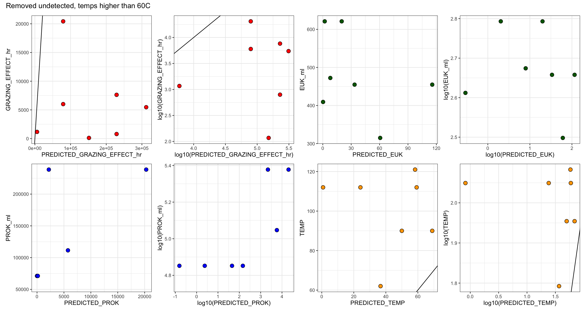
# View(all_vents)
est_predicted(all_vents %>%
filter(!(NAME %in% bsw)) %>%
filter(FIELD %in% mcr) %>%
filter(GRAZING_EFFECT_hr > 0), "MCR vent samples only where grazing was detected")`summarise()` has grouped output by 'FIELD', 'NAME', 'SAMPLE', 'EXP',
'PROK_ml', 'EUK_ml'. You can override using the `.groups` argument.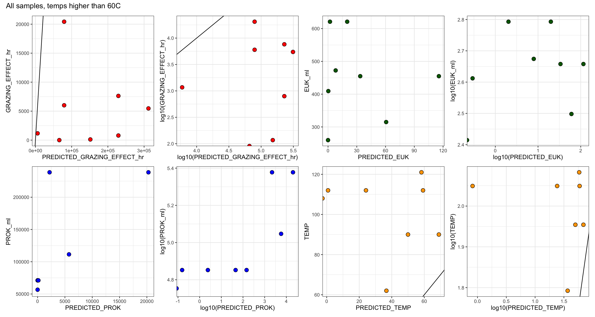
est_predicted(all_vents %>%
filter(!(NAME %in% bsw)) %>%
filter(FIELD == "Von Damm") %>%
filter(GRAZING_EFFECT_hr > 0), "MCR vent samples only where grazing was detected")`summarise()` has grouped output by 'FIELD', 'NAME', 'SAMPLE', 'EXP',
'PROK_ml', 'EUK_ml'. You can override using the `.groups` argument.
# not really enough in Piccard to make this statistically sound.
# est_predicted(all_vents %>%
# filter(!(NAME %in% bsw)) %>%
# filter(FIELD == "Piccard") %>%
# filter(GRAZING_EFFECT_hr > 0), "MCR vent samples only where grazing was detected")hist(all_vents$Highest.Temp)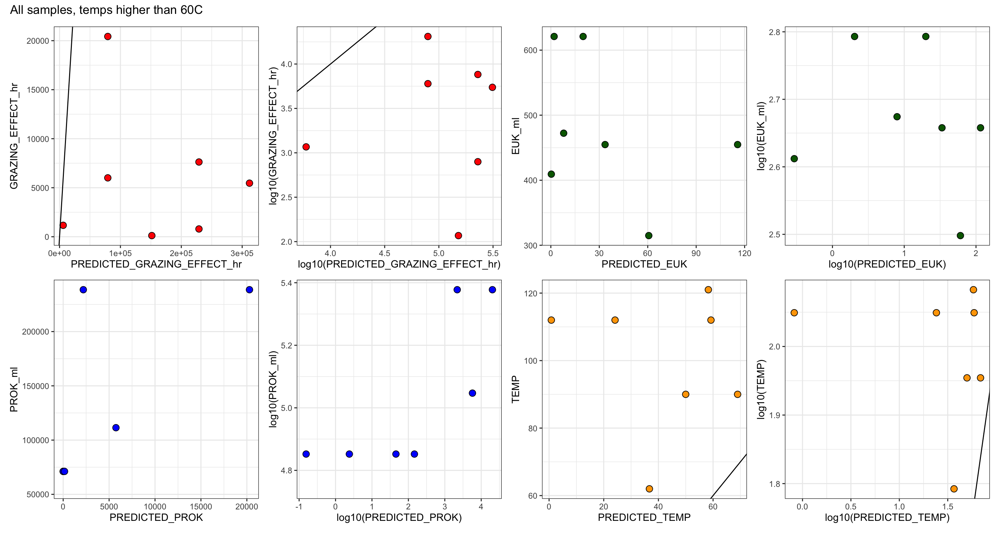
What about a temperature threshold? Perhaps this exists, but maybe not enough data to include.
est_predicted(all_vents %>%
# filter(!(NAME %in% bsw)) %>%
filter(Highest.Temp > 60), "All samples, temps higher than 60C")`summarise()` has grouped output by 'FIELD', 'NAME', 'SAMPLE', 'EXP',
'PROK_ml', 'EUK_ml'. You can override using the `.groups` argument.Warning: Removed 1 rows containing missing values (`geom_point()`).
Removed 1 rows containing missing values (`geom_point()`).
Removed 1 rows containing missing values (`geom_point()`).
Removed 1 rows containing missing values (`geom_point()`).
Removed 1 rows containing missing values (`geom_point()`).
Removed 1 rows containing missing values (`geom_point()`).
Removed 1 rows containing missing values (`geom_point()`).Warning in FUN(X[[i]], ...): NaNs produced
Warning in FUN(X[[i]], ...): NaNs producedWarning: Removed 2 rows containing missing values (`geom_point()`).
est_predicted(all_vents %>%
# filter(!(NAME %in% bsw)) %>%
filter(Highest.Temp < 60), "All samples, temps lower than 60C")`summarise()` has grouped output by 'FIELD', 'NAME', 'SAMPLE', 'EXP',
'PROK_ml', 'EUK_ml'. You can override using the `.groups` argument.Warning: Removed 3 rows containing missing values (`geom_point()`).Warning: Removed 3 rows containing missing values (`geom_point()`).
Removed 3 rows containing missing values (`geom_point()`).
Removed 3 rows containing missing values (`geom_point()`).
Removed 3 rows containing missing values (`geom_point()`).
Removed 3 rows containing missing values (`geom_point()`).
Removed 3 rows containing missing values (`geom_point()`).Warning in FUN(X[[i]], ...): NaNs produced
Warning in FUN(X[[i]], ...): NaNs producedWarning: Removed 5 rows containing missing values (`geom_point()`).
est_predicted(all_vents %>%
filter(GRAZING_EFFECT_hr > 0) %>%
filter(Highest.Temp > 60), "Removed undetected, temps higher than 60C")`summarise()` has grouped output by 'FIELD', 'NAME', 'SAMPLE', 'EXP',
'PROK_ml', 'EUK_ml'. You can override using the `.groups` argument.Warning: Removed 1 rows containing missing values (`geom_point()`).
Removed 1 rows containing missing values (`geom_point()`).
Removed 1 rows containing missing values (`geom_point()`).
Removed 1 rows containing missing values (`geom_point()`).
Removed 1 rows containing missing values (`geom_point()`).
Removed 1 rows containing missing values (`geom_point()`).
Removed 1 rows containing missing values (`geom_point()`).
Removed 1 rows containing missing values (`geom_point()`).est_predicted(all_vents %>%
filter(GRAZING_EFFECT_hr > 0) %>%
filter(Highest.Temp < 60), "Removed undetected, temps lower than 60C")`summarise()` has grouped output by 'FIELD', 'NAME', 'SAMPLE', 'EXP',
'PROK_ml', 'EUK_ml'. You can override using the `.groups` argument.Warning: Removed 3 rows containing missing values (`geom_point()`).Warning: Removed 3 rows containing missing values (`geom_point()`).
Removed 3 rows containing missing values (`geom_point()`).
Removed 3 rows containing missing values (`geom_point()`).
Removed 3 rows containing missing values (`geom_point()`).
Removed 3 rows containing missing values (`geom_point()`).
Removed 3 rows containing missing values (`geom_point()`).
Removed 3 rows containing missing values (`geom_point()`).
# vent_ids <- c("BSW","Plume", "Shrimpocalypse", "LotsOShrimp", "X18", "OMT", "Rav2", "MustardStand", "ShrimpHole")
# vent_fullname <- c("Background","Plume", "Shrimpocalypse", "Lots 'O Shrimp", "X-18", "Old Man Tree", "Ravelin #2", "Mustard Stand", "Shrimp Hole")
# site_ids <- c("VD", "Piccard")
# site_fullname <- c("Von Damm", "Piccard")
# site_color <- c("#264653", "#E76F51")
# names(site_color) <- site_fullname
#
# whole_pal <- c("#264653", "#2A9D8F", "#E9C46A","#F4A261", "#E76F51")
#
# extra <- c("#eae2b7", "#5f0f40", "#90be6d", "#941b0c", "#577590")ggplot theme
# theme_minimal() +
# theme(panel.grid.major = element_line(), panel.grid.minor = element_blank(),
# panel.background = element_blank(),
# axis.line = element_line(colour = "black"),
# axis.text.x = element_text(color="black", size = 12,
# angle = 45, hjust = 1, vjust = 1),
# axis.text.y = element_text(color="black", size = 12),
# axis.title =element_text(color="black", size = 12),
# axis.ticks = element_line(),
# strip.text =element_blank(), legend.title = element_blank()) +
# labs(x = "", y = bquote("Eukaryote cells "~mL^-1),
# title = "")sessionInfo()R version 4.2.1 (2022-06-23)
Platform: x86_64-apple-darwin17.0 (64-bit)
Running under: macOS Big Sur ... 10.16
Matrix products: default
BLAS: /Library/Frameworks/R.framework/Versions/4.2/Resources/lib/libRblas.0.dylib
LAPACK: /Library/Frameworks/R.framework/Versions/4.2/Resources/lib/libRlapack.dylib
locale:
[1] en_US.UTF-8/en_US.UTF-8/en_US.UTF-8/C/en_US.UTF-8/en_US.UTF-8
attached base packages:
[1] stats graphics grDevices utils datasets methods base
other attached packages:
[1] patchwork_1.1.2 broom_1.0.1 cowplot_1.1.1 forcats_0.5.2
[5] stringr_1.5.0 dplyr_1.1.0 purrr_1.0.1 readr_2.1.2
[9] tidyr_1.3.0 tibble_3.1.8 ggplot2_3.4.1 tidyverse_1.3.2
loaded via a namespace (and not attached):
[1] lubridate_1.8.0 assertthat_0.2.1 digest_0.6.31
[4] utf8_1.2.3 R6_2.5.1 cellranger_1.1.0
[7] backports_1.4.1 reprex_2.0.2 evaluate_0.20
[10] httr_1.4.4 pillar_1.8.1 rlang_1.0.6
[13] googlesheets4_1.0.1 readxl_1.4.1 rstudioapi_0.14
[16] rmarkdown_2.16 labeling_0.4.2 googledrive_2.0.0
[19] htmlwidgets_1.5.4 bit_4.0.4 munsell_0.5.0
[22] compiler_4.2.1 modelr_0.1.9 xfun_0.33
[25] pkgconfig_2.0.3 htmltools_0.5.3 tidyselect_1.2.0
[28] fansi_1.0.4 crayon_1.5.2 tzdb_0.3.0
[31] dbplyr_2.2.1 withr_2.5.0 grid_4.2.1
[34] jsonlite_1.8.4 gtable_0.3.1 lifecycle_1.0.3
[37] DBI_1.1.3 magrittr_2.0.3 scales_1.2.1
[40] cli_3.6.0 stringi_1.7.12 vroom_1.5.7
[43] farver_2.1.1 fs_1.6.1 xml2_1.3.3
[46] ellipsis_0.3.2 generics_0.1.3 vctrs_0.5.2
[49] RColorBrewer_1.1-3 tools_4.2.1 bit64_4.0.5
[52] glue_1.6.2 hms_1.1.2 parallel_4.2.1
[55] fastmap_1.1.0 yaml_2.3.5 colorspace_2.1-0
[58] gargle_1.2.1 rvest_1.0.3 knitr_1.40
[61] haven_2.5.1